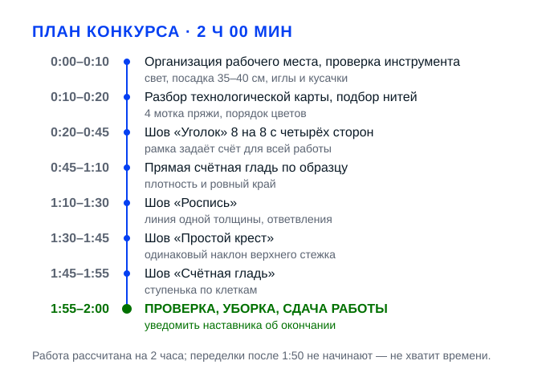
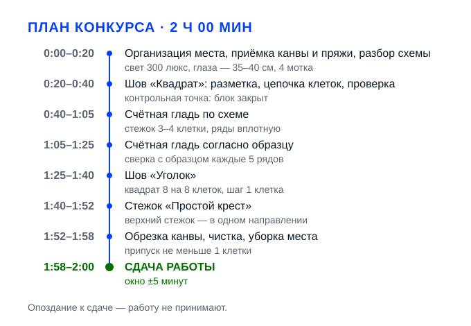
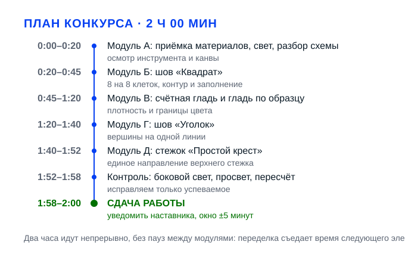

Ручная вышивка (ФВ)
Задания ниже — официальные файлы «Абилимпикс» (источник: abilympics-russia.ru), разложенные по категориям. Решения написаны по тексту задания, регламенту и критериям оценки; в них указано, что именно проверяет эксперт.
Школьник
14–16 лет, базовый уровень заданияВ официальном файле категории не разделены отдельными разделами — приводим задание целиком; различия по категориям смотрите в таблице модулей.
Пошаговое решение
Задание для школьников — вышить по пластиковой канве узор, заданный технологической картой, и применить в нём пять отделочных швов: уголок 8 на 8 клеток с четырёх сторон, прямую счётную гладь по образцу, роспись, простой крест и счётную гладь. На всю работу отводится два часа, включая организацию места, подбор нитей по цвету и уборку в конце, поэтому времени на переделки не остаётся: каждый шов считается по клеткам с первого стежка. Решение ниже разложено на пять задач в том порядке, в котором их удобно выполнять, — от посадки за столом и разбора схемы до проверки работы и сдачи её наставнику. В каждом шаге указано, что именно делать, зачем это нужно, как проверить результат и что обычно идёт не так.

Задача 1. Организовать рабочее место и подготовить материалыМодуль А · подготовка, 0:00–0:20
Подготовка занимает первые двадцать минут из двух часов, и именно она определяет, сколько клеток вы успеете вышить без переделок. По конкурсному заданию работа идёт по пластиковой канве с готовой схемой, нити подбираются по цвету из четырёх мотков пряжи, а инструмент участник получает на месте. Значит, к старту нужно успеть три вещи: посадить себя и свет так, чтобы счёт клеток не сбивался, разложить инструмент в зоне одной руки и разобрать технологическую карту до состояния, когда каждый шов назван и посчитан в клетках.
Действие 1.1. Обустроить рабочее место
Шаг 1.1.1
Ставим настольную лампу с той стороны, где рабочая рука: правше — слева и чуть впереди, левше — справа, чтобы свет ложился на канву ровно и не бил в глаза. Стул пододвигаем вплотную к столу, садимся прямо, предплечья и кисти лежат на столе, локти не висят в воздухе. Канву держим на столе, а не на коленях, и на расстоянии 35–40 см от глаз: это примерно длина от кисти до локтя, поэтому проверять удобно рукой. Схему ставим чуть выше канвы, чтобы переводить взгляд, а не наклонять голову.
Требования охраны труда в конкурсном задании задают две цифры, от которых зависит вся работа: освещённость рабочего места не менее 300 люкс и расстояние от глаз до работы 35–40 см. Счётная вышивка не прощает ошибки в одну клетку: при слабом свете два соседних оттенка пряжи сливаются, клетки считаются неверно, и шов приходится вспарывать. Усталость глаз приходит не сразу, а к сороковой минуте, когда переделывать уже дорого.
Тень от руки не ложится на рабочую зону, символы схемы читаются без наклона корпуса, расстояние до канвы проверено линейкой и попадает в 35–40 см. Посмотрите на канву десять минут подряд: если к этому времени появляется резь в глазах или хочется приблизить работу, значит, свет стоит неверно.
Лампа сзади или сбоку от рабочей руки даёт тень ровно на том участке, где вы считаете клетки, и первый же уголок съезжает на клетку в сторону. Вторая ошибка — сесть, поджав ноги и наклонившись к столу: через полчаса начинает болеть шея, темп падает вдвое, а оставленные элементы приходится бросать недоделанными.
Эксперт обходит рабочие места в первые минуты и смотрит посадку, положение лампы и то, лежит ли канва на столе. Это самая быстрая часть оценки организации рабочего места, и она считывается без единого вопроса.
Шаг 1.1.2
Раскладываем инструмент по зонам одной руки. Игольницу-магнит кладём справа сверху, рядом кусачки, чуть дальше вспарыватель и нитковдеватель — всё в пределах кисти, без поворота корпуса. Мешок для мусора крепим на край стола или на струбцину так, чтобы обрезки падали в него, а не на канву. Канва лежит по центру, схема — выше неё, четыре мотка пряжи — слева, в порядке, в котором они идут по схеме.
В перечне оборудования на участника прямо перечислены игольница-магнит, вспарыватель, нитковдеватель, иглы, кусачки, лампа, канва, четыре мотка пряжи и мешок для мусора. Каждый предмет нужен в работе десятки раз, и каждое лишнее движение к дальнему краю стола складывается в минуты, которых потом не хватит на последний шов. Порядок на столе — это и есть та часть оценки организации, которую эксперт видит сразу.
Проверьте себя так: не отрывая локтей от стола, дотянитесь до иглы, кусачек и мотка каждого цвета. Если для этого приходится тянуться или вставать, зоны разложены неверно. На канве не должно лежать ничего, кроме самой канвы и рабочей нити.
Инструмент за канвой или на дальнем крае стола заставляет каждый раз приподниматься, и на этом теряется темп. Обрезки, оставленные на столе, прилипают к канве, попадают под стежки и вытаскиваются вместе с рабочей нитью — вместе с четырьмя-пятью стежками, которые придётся выпарывать.
Эксперт смотрит, где лежат игла и кусачки, и как участник обращается с обрезками. Стол, заваленный нитками, читается как неумение организовать работу, даже если вышивка выполнена чисто.
Шаг 1.1.3
Проверяем каждый инструмент до старта. Иглу осматриваем на просвет: остриё без заусенца, ушко целое, на металле нет ржавых точек — проведите ногтем по ушку изнутри, заусенец цепляется сразу. Кусачки пробуем на обрезке пряжи: они должны перекусывать нить подушечкой, а не жевать её. Вспарыватель проверяем на лишнем кусочке канвы, нитковдеватель — на нити того цвета, которым будете работать. Всё неисправное сразу меняем у наставника, не начиная работу.
Конкурсное задание прямо говорит: неисправные инструменты и материалы подлежат замене. Заусенец в ушке или на острие работает как напильник — пряжа ворсится, рвётся на середине стежка, и вместо ровной глади получается рыхлая дорожка. Замена занимает минуту до старта и полчаса переделки после.
Нить проходит через ушко без шершавого звука и без ворса на выходе, кусачки оставляют чистый срез без расплющенного конца, вспарыватель входит в клетку канвы и поддевает стежок, не растягивая его. Каждый пункт проверяется одним движением прямо на месте.
Работать иглой с шершавым ушком: пряжа начинает пушиться уже на десятом стежке, гладь выглядит свалявшейся, и исправить это можно только полной переделкой участка. Вторая ошибка — тупые кусачки: нить не режется, а рвётся, конец расплющивается и не вдевается в иглу.
Эксперт проверяет инструмент на старте и отмечает, обратился ли участник за заменой. Молчаливая работа негодной иглой — не героизм, а потерянное качество шва.
Действие 1.2. Разобрать схему и подобрать нити
Шаг 1.2.1
Читаем технологическую карту до конца, а не по диагонали. Находим на схеме все пять элементов задания: четыре уголка по сторонам, прямую счётную гладь по образцу, роспись, простой крест и счётную гладь. Для каждого выписываем на свободном поле три вещи: каким символом он обозначен, в каком направлении идут стежки и сколько клеток занимает. Отдельно отмечаем, где элементы соприкасаются, потому что именно в стыках чаще всего сбивается счёт.
Задание требует вышить узор по схеме технологической карты и использовать пять отделочных швов. Ошибка в прочтении символа обнаруживается не сразу, а когда половина элемента уже вышита, и стоит она дороже всего остального: распустить счётную гладь, не повредив канву, почти невозможно. Пять минут на разбор карты экономят полчаса переделок.
Вы можете, не подглядывая, показать пальцем на схеме каждый из пяти элементов, назвать шов, направление стежка и число клеток. Если хотя бы один элемент приходится искать заново — карта разобрана не полностью, вернитесь к ней до первого стежка.
Начать с первого бросившегося в глаза элемента, не дочитав карту: потом выясняется, что соседний участок должен был выполняться другим швом и другим цветом, а он уже закрыт. Вторая ошибка — держать схему в памяти: к середине работы обозначения путаются, и вместо уголка вышивается крест.
Эксперт подходит и просит показать, где на схеме какой шов. Уверенный ответ сразу говорит о понимании задания, а поиск символов пальцем по всему листу — о том, что работа идёт наугад.
Шаг 1.2.2
Раскладываем четыре мотка пряжи на белом листе в том порядке, в котором цвета идут по схеме, и подписываем каждый номером или условной меткой. Сравниваем оттенки при том свете, при котором будете работать: два близких тона на белом фоне различаются лучше, чем на цветной канве. Если в схеме указаны номера цветов, сверяем их с мотками и отмечаем на карте, какой моток какому номеру соответствует.
По перечню оборудования участнику выдаётся четыре мотка пряжи, и подбор нитей по цвету — первый пункт хода выполнения работы в конкурсном задании. Ошибка в оттенке не видна в моменте, но на готовой вышивке читается как грязь: элемент, вышитый не тем тоном, выбивается из композиции, и переделать его можно только полностью.
Разложите мотки от светлого к тёмному и посмотрите на них с расстояния вытянутой руки: порядок должен читаться без напряжения. Затем закройте глаза, перетасуйте два соседних мотка и попробуйте вернуть их на место — если не получается, оттенки слишком близки и метки обязательны.
Держать мотки в куче и брать нужный по памяти: к третьему элементу два похожих оттенка меняются местами, и в одном мотиве появляется полоса другого тона. Исправить это можно только выпоров весь элемент, потому что поверх старого цвета новый ляжет бугром.
Эксперт смотрит на порядок на столе и на то, сверяет ли участник цвет со схемой или тянется к ближайшему мотку. Совпадение оттенков с картой входит в оценку соответствия работе по схеме.
Шаг 1.2.3
Отмеряем рабочую нить длиной 40–50 см — не длиннее локтя, отрезаем кусачками наискось, чтобы конец легче входил в ушко. Отделяем нужное число сложений, складываем нить вдвое или втрое, если так указано в карте, и вдеваем нитковдевателем. Закрепляемся без узла: оставляем хвост 3–4 см и придерживаем его пальцем под первыми стежками, чтобы он лёг под вышивку и держался сам.
Длинная нить при каждом протягивании трётся о жёсткую пластиковую канву, пушится и рвётся на середине стежка, а трение портит и сам стежок. Узел на изнанке даёт бугор, из-за которого канва не лежит ровно, а на жёсткой пластиковой основе это видно с лицевой стороны. Крепление под стежками — единственный способ, который не портит ни лицевую, ни изнаночную сторону.
Нить идёт через канву с ровным усилием, не перекручивается в жгут и не образует петель на изнанке. Потяните за конец: он держится, но канва не морщится. Хвост с изнанки не длиннее 4 см и лежит вдоль будущих стежков, а не поперёк.
Отмерить нить на всю длину руки: она путается, узлы на конце приходится распутывать иглой, а в местах трения пряжа истончается и рвётся. Вторая ошибка — завязать узел: на жёсткой канве он проступает с лицевой стороны бугром и цепляется за соседние стежки.
Эксперт обращает внимание на изнанку при первом же осмотре: узлы и длинные протяжки видны сразу и снимают оценку за качество исполнения, как бы чисто ни выглядела лицевая сторона.
Задача 2. Выполнить шов «Уголок» 8 на 8 клеток с четырёх сторонМодуль Б · уголок, 0:20–0:45
Первый пункт школьного задания звучит коротко: выполнить с четырёх сторон шов «Уголок» 8 на 8 клеток. За этой строкой стоит рамка, которая держит всю композицию: четыре одинаковых уголка задают границы, внутри которых потом лягут гладь, роспись и крест. Если рамка сбита хотя бы на одну клетку, дальше считать бессмысленно — все элементы придётся подгонять под кривой контур. Поэтому уголок вышивается первым, медленно и с пересчётом после каждого стежка.
Действие 2.1. Разметить квадраты 8 на 8 в четырёх углах
Шаг 2.1.1
Кладём канву на стол и определяем лицевую сторону: у пластиковой канвы она обычно более гладкая, а обратная чуть шероховата от формы, в которой лист отливали. Разворачиваем лист так, чтобы ряды клеток шли параллельно краю стола, а не по диагонали — иначе рука будет тянуться вбок и стежки пойдут с наклоном. Проверяем, что лист лежит плоско: если угол поднялся, канву нужно перевернуть или подложить лист бумаги, потому что на весу счёт сбивается.
Счётная вышивка строится на клетках, а не на сантиметрах: шаг клетки у разных листов пластиковой канвы свой, поэтому линейка здесь не помощник, считать нужно клетками от края. Лицевая сторона важна потому, что изнанка пластиковой канвы имеет следы отливки, и стежок, положенный на неё, выглядит рыхло. Ровная ориентация листа — условие того, что все четыре уголка встанут одинаково.
Клетки идут ровными рядами сверху вниз и слева направо, лист не качается под ладонью, с лицевой стороны нет следов отливки и заусенцев по краям. Положите на канву ладонь и проведите: поверхность должна быть одинаковой на ощупь по всей площади.
Начать работу на изнанке: стежки ложатся неровно, пряжа цепляется за шероховатости, и гладь выглядит свалявшейся. Вторая ошибка — оставить канву под углом к краю стола: к третьему уголку рука привыкает вести стежок по диагонали, и наклон в рамках становится разным.
Эксперт смотрит, как участник держит канву и с какой стороны начинает работу. Правильно ориентированный лист виден по тому, что все стежки идут параллельно краям.
Шаг 2.1.2
От каждого из четырёх углов отсчитываем по восемь клеток вправо и по восемь вниз, ставим метку водорастворимым маркером или коротким сметочным стежком контрастной нитью. Получается квадрат 8 на 8 клеток в каждом углу — именно его и обводит шов «Уголок». Метки ставим в точках пересечения линий, а не на глаз посередине клетки, чтобы потом не спорить с самим собой, где граница.
Размер 8 на 8 клеток задан конкурсным заданием, и он же определяет симметрию всей работы. Отсчёт от угла, а не от центра, нужен потому, что угол канвы — единственная точка, которую невозможно сдвинуть: центр листа участник определяет по-своему, и у четырёх уголков получаются четыре разных центра.
Пересчитайте клетки от края до метки ещё раз, вслух: восемь по горизонтали и восемь по вертикали. Расстояние от края до линии шва должно быть одинаковым во всех четырёх углах, и проверяется оно пересчётом клеток, а не на глаз.
Отсчитать восемь клеток по одной стороне и семь по другой: квадрат получается прямоугольным, а уголок — перекошенным. Вторая ошибка — поставить метку «примерно там»: при вышивании граница уезжает на клетку, и это обнаруживается только на готовой работе.
Эксперт проверяет размер уголка пересчётом клеток от края канвы. Это одна из немногих проверок, где ошибка видна сразу и не требует рассматривания стежков.
Шаг 2.1.3
Сверяем четыре размеченных квадрата между собой: прикладываем к первому линейку или полоску бумаги и переносим её к остальным, чтобы увидеть разницу, если она есть. Отмечаем на схеме, в каком углу какой цвет, если по карте уголки разных тонов. Пока метки свежие, ещё раз проходим по всем четырём и проверяем, что ни одна не смазалась от руки. Смазанную метку обводим заново, не дожидаясь, пока она исчезнет совсем.
Четыре уголка оцениваются как единая рамка: важно не только то, что каждый вышит по счёту, но и то, что все четыре совпадают между собой. Разница в одну клетку на готовой работе читается как перекос всей композиции, хотя каждый уголок по отдельности вышит верно.
Все четыре квадрата одинакового размера в клетках, метки стоят на пересечениях линий, ни одна не стёрта. Если хотя бы один квадрат отличается, разметку нужно переделать до первого стежка — потом это будет стоить выпарывания всего уголка.
Размечать все четыре угла «на глаз по памяти»: к четвёртому квадрату счёт сбивается на клетку, и рамка выходит несимметричной. Вторая ошибка — не закрепить метки: маркер стирается ладонью за первые десять минут, и дальше работа идёт без границ.
Эксперт сверяет симметрию разметки, если застаёт участника в начале работы. Аккуратная разметка сразу говорит о том, что участник понимает счётную природу шва.
Действие 2.2. Вышить первые два уголка
Шаг 2.2.1
Закрепляем нить в вершине первого уголка, в точке пересечения линий у края квадрата, и выводим иглу на лицевую сторону. Первый стежок кладём по диагонали через две клетки: игла входит в точку, отстоящую от выхода на две клетки вправо и две вниз. Стежок должен лежать точно по диагонали клеток, а не срезать её, иначе вершина уголка сместится. Выводим иглу движением от себя, чтобы не задеть соседнюю клетку канвы.
Шов «Уголок» — счётный: он строится на диагоналях клеток, и каждый следующий стежок продолжает предыдущий, образуя цепочку вершин. Если первый стежок положен не по диагонали, вся цепочка идёт с наклоном, и к концу стороны квадрата отклонение накапливается в две-три клетки. Начать правильно здесь дешевле, чем исправлять потом.
Стежок лежит ровно по диагонали, его концы попадают в углы клеток, а не в середины. Посмотрите на просвет: под нитью должно быть видно две клетки, пройденные по диагонали, без перекоса в сторону. Проверка занимает секунды: достаточно посмотреть на стежок вдоль канвы.
Начать стежок от середины клетки: вершина уголка съезжает на полклетки, и весь ряд идёт волной. Вторая ошибка — закрепить нить узлом в самом углу: узел проступает с лицевой стороны именно там, куда смотрит эксперт.
Эксперт смотрит на первые стежки внимательнее, чем на последние: по ним видно, владеет ли участник счётом по диагонали. Дальше он смотрит уже на рамку целиком, но первый стежок остаётся для него ориентиром.
Шаг 2.2.2
Ведём цепочку уголков вдоль стороны квадрата: каждый следующий стежок начинается в точке, где закончился предыдущий, и идёт по диагонали через две клетки в противоположном направлении, образуя зигзаг. После каждого стежка пересчитываем клетки до границы квадрата — не «на глазок», а пальцем по канве. Нить подтягиваем ровно настолько, чтобы она лежала на канве, не стягивая её.
Ровная цепочка получается только при равном шаге: у всех стежков одинаковая длина в клетках и одинаковый наклон. Натяжение важнее, чем кажется: на жёсткой пластиковой канве перетянутая нить ложится в канавку и стягивает клетки, а слабая — провисает петлёй и цепляется за иглу при следующем проколе.
Вершины уголков лежат на одной линии, расстояние между ними одинаковое, все стежки одной длины. Проведите пальцем вдоль цепочки: она должна ощущаться как ровный ряд, без бугров и провалов. Канва под швом не стянута, клетки не сжаты.
Вести стежки «по памяти», не пересчитывая клетки: к середине стороны зигзаг уходит на клетку, и уголок перестаёт быть квадратным. Вторая ошибка — затягивать нить изо всех сил: канва морщится, а стежки становятся тонкими и плоскими.
Эксперт оценивает равномерность шага и натяжения — это основной критерий качества любого счётного шва, и он виден на расстоянии вытянутой руки. Кривая цепочка заметна с трёх шагов, даже если каждый стежок по отдельности верен.
Шаг 2.2.3
Дойдя до границы квадрата, поворачиваем на девяносто градусов и ведём цепочку по следующей стороне, сохраняя тот же шаг и то же натяжение. В углу квадрата стежок разворачивается так, чтобы вершина уголка пришлась точно на метку, а не рядом с ней. Замкнув квадрат, выводим нить на изнанку и закрепляем под уже вышитыми стежками, затем обрезаем кусачками под самое основание.
Угол поворота — самое уязвимое место: именно здесь накапливается ошибка счёта с двух сторон. Если вершина не попала на метку, квадрат получается незамкнутым, и это видно как разрыв рамки. Закрепление под стежками вместо узла сохраняет изнанку чистой, а чистая изнанка входит в оценку качества исполнения.
Квадрат замкнут, все четыре стороны равны по числу стежков, вершины в углах совпадают с метками. С изнанки нет узлов и протяжек длиннее двух клеток, обрезанный конец не торчит. Если конец торчит, его подтягивают иглой под стежок и обрезают снова.
Развернуть стежок в углу «как получится»: образуется лишняя клетка или, наоборот, разрыв, и квадрат перестаёт читаться как квадрат. Вторая ошибка — закрепить нить узлом с изнанки: узел виден с лицевой стороны через клетку канвы.
Эксперт переворачивает работу и смотрит изнанку: узлы, длинные протяжки и обрезанные под корень концы говорят о культуре работы больше, чем лицевая сторона.
Действие 2.3. Вышить два оставшихся уголка и свести рамку
Шаг 2.3.1
Переходим к двум оставшимся углам и начинаем каждый с той же точки отсчёта — от края канвы, а не от первого вышитого квадрата. Перед первым стежком кладём рядом первый готовый уголок и сверяем направление цепочки: если там зигзаг начинался с подъёма, здесь он должен начинаться так же. Работаем тем же цветом и той же нитью, что и первые два, не меняя число сложений.
Четыре уголка должны быть зеркально или симметрично повторены — так, как это задано схемой. Если начинать отсчёт от соседнего квадрата, ошибка первого переносится на второй, и рамка расходится веером. Одинаковое число сложений нити важно потому, что толщина стежка меняет визуальный вес уголка: тонкий уголок рядом с толстым выглядит выцветшим.
Приложите готовый уголок к новому на расстоянии: направление зигзага, наклон и толщина линии совпадают. Число стежков на каждой стороне одинаковое — пересчитайте, а не оцените на глаз. Толщина линии проверяется на просвет: у всех четырёх уголков она должна быть одинаковой.
Начать третий уголок с другого края квадрата: зигзаг разворачивается в противоположную сторону, и рамка становится несимметричной. Вторая ошибка — взять нить в одно сложение вместо двух: уголок получается бледным и тонким на фоне остальных.
Эксперт сравнивает уголки между собой, а не с эталоном: симметрия четырёх элементов оценивается как единое целое. Перекос одного уголка относительно остальных он отмечает отдельной строкой.
Шаг 2.3.2
Сводим рамку: раскладываем канву на столе и отходим на шаг, чтобы увидеть все четыре уголка сразу. Считаем клетки от каждого края до линии шва, сравниваем расстояния между противоположными уголками, проверяем, что квадраты не завалены в одну сторону. Найденное расхождение в одну клетку исправляем сразу, пока не начата гладь внутри рамки. Считаем при этом не только до линии шва, но и между вершинами противоположных уголков.
Рамка — это система отсчёта для всей дальнейшей работы: гладь, роспись и крест располагаются относительно неё. Перекошенная рамка означает, что каждый следующий элемент придётся подгонять вручную, а на это уйдут минуты, которых в двух часах нет. Исправление на этом этапе стоит нескольких стежков, позже — целого элемента.
Все четыре квадрата одинаковы, расстояния от краёв равны, противоположные уголки стоят на одной линии. Посмотрите на канву под углом к свету: линия шва должна читаться как ровная прямоугольная рамка без изломов.
Заметить перекос и оставить его «потом исправлю»: потом внутри рамки уже лежит гладь, и подтянуть уголок, не задев её, невозможно. Вторая ошибка — выравнивать рамку, растягивая канву руками: пластиковая основа деформируется и не возвращается в исходную форму.
Эксперт смотрит на работу целиком с расстояния: симметрия рамки — первый признак аккуратной счётной вышивки. Симметрию он проверяет с того места, откуда видна вся работа, а не с рабочего расстояния.
Шаг 2.3.3
Убираем все концы нитей на изнанку: каждый хвост продеваем иглой под четыре-пять соседних стежков в одном направлении, подтягиваем и обрезаем кусачками, не оставляя пеньков. Проходим по изнанке ладонью — она должна быть гладкой. Затем проверяем рамку на просвет: поднимаем канву к лампе и смотрим, нет ли просветов между стежками в вершинах уголков. Пеньков не оставляем: конец обрезаем вплотную к стежку, иначе он вылезет при следующей работе.
Концы нитей, оставленные снаружи, цепляются за рабочую нить и вытягиваются вместе со стежками, а на пластиковой канве торчащий хвост виден с лицевой стороны через клетку. Просвет в вершине уголка означает, что стежок положен коротко: шов перестаёт быть непрерывной линией, а именно непрерывность и есть признак правильного уголка.
Изнанка гладкая, без узлов и торчащих концов, все хвосты убраны под стежки. На просвет вершины уголков закрыты, линия шва непрерывна, канва не стянута и лежит плоско. Если вершина открыта, стежок перекладывают, не дожидаясь, пока рамка будет закончена.
Обрезать нить, не убрав её под стежки: конец выходит на лицевую сторону при первой же протяжке. Вторая ошибка — оставить хвост длиной в сантиметр с изнанки: он цепляется за иглу и путается в рабочей нити.
Эксперт осматривает изнанку и проверяет непрерывность линии шва. Незакрытые вершины читаются как небрежность, даже если счёт выдержан. Открытые вершины он находит, поднимая канву к свету, а не рассматривая её на столе.
Задача 3. Выполнить прямую счётную гладь по образцуМодуль В · прямая гладь, 0:45–1:10
Прямая счётная гладь — это плотный ряд стежков, уложенных вплотную друг к другу и вымеренных по клеткам. В школьном задании она идёт по образцу, то есть важны не только ровные стежки, но и точное повторение формы и направления, заданных в карте. Именно этот шов даёт основной цветовой массив работы, поэтому он занимает самый длинный отрезок времени и требует ровного темпа: здесь нельзя ни торопиться, ни растягивать работу.
Действие 3.1. Определить границы элемента и направление стежка
Шаг 3.1.1
Находим на схеме элемент, который по карте выполняется прямой счётной гладью, и определяем его границы в клетках: считаем ширину по горизонтали и высоту по вертикали, записываем числа на свободном поле листа. Смотрим на образец и определяем направление стежка — в прямой глади он идёт строго вертикально или строго горизонтально, вдоль рядов клеток, а не по диагонали. Отмечаем, с какой стороны начинается заполнение.
В задании прямая счётная гладь выполняется согласно образцу, а значит, оценивается совпадение с ним: и по форме, и по направлению стежка. Если начать заполнение поперёк заданного направления, элемент визуально повернётся на девяносто градусов и перестанет читаться вместе с остальными швами. Записанные числа клеток — единственная защита от «примерно такого» размера.
Вы называете ширину и высоту элемента в клетках и можете показать направление стежка пальцем на образце. Приложите линейку к схеме: направление стежков должно совпадать с рядами клеток, а не идти наискось.
Определить границы на глаз, без счёта: к концу заполнения элемент оказывается на две-три клетки шире, и он наезжает на соседний шов. Вторая ошибка — выбрать направление стежка «как удобнее руке»: на готовой работе видно, что элемент вышит поперёк образца.
Эксперт сверяет направление стежка с образцом — это первое, что бросается в глаза при оценке соответствия схеме. Если направление не совпадает с образцом, элемент оценивается как выполненный другим швом.
Шаг 3.1.2
Размечаем границы элемента контрастной нитью или водорастворимым маркером: ставим точки в четырёх углах и короткие метки по сторонам через каждые четыре клетки. Метки ставим так, чтобы они не попали под стежки и потом не просвечивали. Если элемент примыкает к уже вышитому уголку, начинаем разметку от линии шва, а не от края канвы. Метки ставим тонко, одним касанием маркера, чтобы линия не расплылась по клетке.
Плотная гладь закрывает канву полностью, и после заполнения проверить границы уже нельзя: остаётся только смотреть на силуэт. Метки через каждые четыре клетки дают промежуточный контроль — сбившись, вы увидите это на ближайшей метке, а не в конце ряда. Привязка к уже вышитому шву сохраняет общую геометрию работы.
Четыре угла отмечены, по сторонам стоят промежуточные метки, расстояние между ними одинаковое. Метки не попадают в зону будущих стежков — проверьте, отступив от линии на полклетки. Метки не должны читаться с лицевой стороны как часть узора.
Разметить только углы: в середине длинной стороны ряд уходит на клетку, и заметить это можно лишь тогда, когда гладь уже закрыла канву. Вторая ошибка — ставить метки прямо по линии будущего шва: после заполнения они просвечивают между стежками.
Эксперт оценивает ровность края глади: он держится только тогда, когда границы были размечены, а не намечены приблизительно. Ровный край он проверяет, ведя взглядом вдоль линии, а не пересматривая каждый стежок.
Шаг 3.1.3
Определяем длину одного стежка в клетках и считаем, сколько стежков понадобится на ширину элемента. Для прямой глади длина стежка равна высоте элемента, поэтому важно, чтобы она укладывалась в целое число клеток. Пробуем на отдельном кусочке канвы или на свободном поле: кладём три стежка подряд и смотрим, ложатся ли они вплотную без просвета. Если пробный ряд лёг неровно, меняем не нить, а привычное усилие протяжки.
Гладь держится на двух вещах: стежки одинаковой длины и плотное прилегание друг к другу. Если длина стежка не кратна клеткам, последний стежок в ряду не встанет на место, и край пойдёт ступенькой. Пробный ряд на свободном поле стоит минуту и снимает вопрос о натяжении до начала основной работы.
Три пробных стежка лежат вплотную, без просветов канвы между ними, одинаковой длины, канва под ними не стянута. Край ряда ровный, без ступеньки. Если пробный ряд не получился, меняем натяжение, а не начинаем основную работу.
Начать гладь без пробы: первые стежки выходят то слабее, то туже, и весь ряд получается волнистым. Вторая ошибка — взять длину стежка, не кратную клеткам: последний стежок в ряду приходится ставить наискось, и край ломается.
Эксперт смотрит на плотность прилегания стежков: просветы канвы между ними — самый частый повод снизить оценку за технику. Просветы между стежками он видит сразу: это самый частый повод снизить оценку за технику.
Действие 3.2. Вышить первый блок глади
Шаг 3.2.1
Закрепляем нить у нижней границы элемента и выводим иглу на лицевую сторону точно в углу. Первый стежок кладём вертикально вверх, до противоположной границы, попадая в угловую метку. Иглу вводим в канву строго под тем же углом, под которым вывели: на пластиковой основе наклон иглы сразу заметен по тому, как стежок ложится на клетку. Иглу держим большим и указательным пальцами у самого ушка, а не за середину.
Первый стежок задаёт высоту всего ряда: все последующие равняются на него. Если он короче или длиннее на клетку, ряд приходится переделывать целиком, потому что выровнять его внутри плотной глади невозможно. Точное попадание в угол метки обеспечивает ровный край, который виден на готовой работе как чёткая линия.
Первый стежок идёт от метки до метки, лежит по клеткам вертикально, не заваливается в сторону. Под нитью видно ровно то число клеток, которое вы отсчитали. Канва не стянута, стежок не топорщится. Сравните его с образцом: высота стежка должна совпадать в клетках, а не на глаз.
Положить первый стежок с наклоном: весь ряд повторит этот наклон, и край элемента пойдёт косой. Вторая ошибка — начать не от угла, а от середины стороны: потом придётся заполнять в две стороны, и в месте стыка образуется уплотнение.
Эксперт смотрит на первый ряд как на эталон: по нему видно, будет ли гладь ровной. По первому стежку он делает вывод о натяжении всей будущей глади. Дальше он смотрит уже на ряд целиком, но первый стежок остаётся точкой отсчёта.
Шаг 3.2.2
Кладём стежки один за другим, каждый следующий вплотную к предыдущему, без зазора и без нахлёста. Иглу выводим на расстоянии одной клетки от предыдущего стежка, вводим обратно на той же линии, что и первый. Нить после каждого стежка подтягиваем с одинаковым усилием — так, чтобы она лежала на канве, но не вдавливалась в неё. Стежки кладём в одном направлении, поворачивая канву, а не руку.
Прямая счётная гладь оценивается по плотности: канва не должна просвечивать между стежками. Нахлёст делает полосу бугристой, зазор — полосатой; и то и другое читается как небрежность. Равномерное натяжение — единственный способ получить поверхность, которая выглядит как единое полотно, а не как набор ниток.
Ряд выглядит как сплошная полоса, канва между стежками не просвечивает. Проведите пальцем поперёк: поверхность ровная, без бугров и впадин. Наклон и длина стежков одинаковые по всей длине. Проверку делайте при боковом свете: он выявляет бугры, невидимые сверху.
Класть стежки с зазором в полклетки: полоса получается полосатой, и это видно даже на расстоянии. Вторая ошибка — затягивать каждый стежок по-разному: поверхность идёт волной, а канва в одном месте стянута сильнее, чем в другом.
Эксперт проверяет плотность на просвет и равномерность натяжения. Оба признака оцениваются вместе, потому что один без другого не даёт качества. Плотность он проверяет на просвет, а не на глаз с рабочего расстояния.
Шаг 3.2.3
Доводим первый блок до конца и проверяем его край: последний стежок должен встать точно на границу, не выходя за метку и не оставляя полклетки. Если блок заканчивается на стыке с другим швом, оставляем между ними расстояние в одну клетку — швы не должны наезжать друг на друга. Нить закрепляем под стежками блока, а не узлом. Перед закреплением проверяем край ещё раз, отойдя на полшага от стола.
Ровный край — то, что отличает счётную гладь от обычной: он держится на метках и на одинаковой длине стежка. Наезд на соседний шов портит оба элемента сразу, а распутать их потом можно только вместе. Закрепление под стежками сохраняет изнанку чистой, что оценивается отдельно.
Край блока ровный, последний стежок не выходит за границу, расстояние до соседнего шва не меньше одной клетки. С изнанки под блоком нет узлов, нить закреплена под четырьмя-пятью стежками. Расстояние до соседнего шва измеряйте клетками, а не миллиметрами.
Дотянуть блок «до упора», залезая на соседний элемент: два шва сливаются, и граница между ними исчезает. Вторая ошибка — закончить блок, не закрепив нить: через несколько минут работы она вытянется из-под стежков и блок начнёт распускаться.
Эксперт осматривает стыки между швами: именно там видно, соблюдал ли участник границы элементов. Стык блока с соседним швом он осматривает отдельно: там видно соблюдение границ.
Действие 3.3. Заполнить элемент и проверить плотность
Шаг 3.3.1
Продолжаем рядами, ведя их от уже вышитого блока в сторону, указанную образцом. Каждый новый ряд начинаем от той же границы, что и первый, и выравниваем по нему: прикладываем палец к первому стежку и проверяем, что новый ряд не сместился. Стыки между блоками делаем без ступеньки — последний стежок предыдущего и первый стежок нового должны стоять на одной линии.
Ступенька на стыке блоков — самая заметная ошибка в глади: она читается как шов поперёк элемента, хотя технически всё вышито верно. Выравнивание по первому ряду даёт накопительный контроль: отклонение в полклетки вы увидите сразу, а не через десять рядов, когда исправлять придётся всё.
Стыки блоков не видны, линия стежков непрерывна. Приложите линейку вдоль края: он должен быть прямым на всём протяжении. Ряды не заваливаются в сторону от первого. Стык считается чистым, если под нитью не видно смены направления стежков.
Начинать каждый блок от своего края, не сверяясь с первым: в середине элемента появляется заметный излом. Вторая ошибка — ускорять темп к концу: стежки становятся реже, и на фоне плотного начала конец элемента выглядит прозрачным.
Эксперт оценивает элемент целиком, и стык блоков — первое, что он ищет глазами. Ступенька на стыке блоков читается как шов поперёк элемента, и это видно сразу.
Шаг 3.3.2
Заполняем середину элемента, не оставляя непрошитых участков: проходим по канве пальцем и находим места, где просвечивает основа. Если по образцу в элементе есть сужение или уступ, укорачиваем стежки по счёту клеток, сохраняя направление. Работаем тем же числом сложений нити, не переходя на более тонкую для мелких участков. Канву при этом не растягиваем: держим лист свободно, поддерживая его ладонью.
Гладь должна закрывать канву полностью — это её основная функция и главный признак качества. Смена числа сложений на мелких участках приводит к тому, что элемент выглядит неоднородным: один край плотный, другой просвечивает. Уступы, вымеренные по клеткам, сохраняют силуэт, заданный образцом.
На просвет канва под элементом не видна. Силуэт совпадает с образцом, уступы и сужения повторяют схему. Плотность одинаковая по всей площади, без светлых участков у краёв. Светлые участки ищите у самых краёв: там стежки чаще выходят короче нужного.
Оставить непрошитые участки у краёв: они заметны на просвет и читаются как дыры. Вторая ошибка — выравнивать уступ «на глаз», без счёта: силуэт расходится с образцом на клетку-две, и это видно при наложении схемы.
Эксперт сверяет силуэт с образцом и смотрит работу на просвет — это стандартная проверка плотности глади. Силуэт он сверяет с образцом пересчётом клеток по краю элемента.
Шаг 3.3.3
Проверяем готовый элемент по трём признакам: плотность, направление, край. Переворачиваем канву и смотрим изнанку — под гладью не должно быть узлов, протяжек и обрезанных концов, торчащих наружу. Затем отходим на два шага и смотрим на элемент вместе с уголками: он должен стоять внутри рамки ровно, не заваливаясь и не наезжая на шов. Найденное расхождение отмечаем на схеме, чтобы не искать его повторно.
Три признака вместе дают полную картину: плотность отвечает за цвет, направление — за соответствие образцу, край — за геометрию. Изо дня в день именно на этих трёх пунктах теряются баллы, причём каждый проверяется за полминуты. Просмотр с расстояния ловит то, чего не видно вблизи: общий перекос элемента.
Канва не просвечивает, направление стежков совпадает с образцом, край ровный, изнанка чистая, элемент стоит внутри рамки без перекоса. Если хотя бы один признак не выполняется, исправляем сейчас — позже элемент будет окружён другими швами.
Проверить только лицевую сторону и не перевернуть работу: узлы и протяжки на изнанке остаются до сдачи и обнаруживаются экспертом. Вторая ошибка — не отойти на расстояние: перекос элемента виден только тогда, когда в поле зрения попадает вся работа.
Эксперт осматривает элемент и с лицевой, и с изнаночной стороны, а затем смотрит на всю работу с расстояния вытянутой руки. Проверка с расстояния входит в его обычный осмотр: перекос виден, только когда отойдёшь на два шага.
Задача 4. Выполнить шов «Роспись» и шов «Простой крест»Модуль Г · роспись и крест, 1:10–1:45
Два этих шва противоположны по характеру: роспись даёт тонкую линию, которая держит рисунок, а простой крест — плотную фактуру из повторяющихся элементов. В школьном задании они идут друг за другом, и на оба отводится примерно треть оставшегося времени. Ошибка здесь стоит дорого, потому что оба шва лежат поверх уже вышитой глади: исправлять их приходится, не задевая соседние элементы, а это почти всегда означает переделку целого участка.
Действие 4.1. Проложить контур росписью
Шаг 4.1.1
Находим на схеме элемент, который по карте выполняется росписью, и прослеживаем линию контура целиком, от начала до конца, не отрывая пальца. Определяем длину стежка в клетках и шаг между ними, а также точки, где от основной линии отходят ответвления. Записываем на свободном поле три числа: длина стежка, шаг, число ответвлений — дальше работать придётся по ним, а не по памяти.
Роспись — контурный шов, и её главное качество — ровная, одинаковой толщины линия по всей длине. Толщина и шаг держатся только тогда, когда заданы заранее: если вести линию «как рука поведёт», в одном месте она получится плотной, в другом — прерывистой, и рисунок рассыпается. Ответвления опасны тем, что в них легко потерять направление основной линии.
Вы можете провести по схеме всю линию контура, не сбиваясь, и назвать длину стежка в клетках, шаг и число ответвлений. Если линия где-то прерывается или уходит за пределы элемента, карта прочитана неверно — вернитесь к разбору до первого стежка.
Начать роспись с середины линии: дойдя до развилки, участник теряет, какая ветвь главная, и контур замыкается не там. Вторая ошибка — не посчитать ответвления: одно из них остаётся невышитым, и рисунок выглядит незаконченным.
Эксперт сверяет рисунок с образцом по контуру: незакрытые ответвления и оборванные линии видны сразу, потому что именно линия создаёт рисунок. Обрыв линии он замечает быстрее, чем неровность стежка, потому что рисунок держится на контуре.
Шаг 4.1.2
Начинаем линию от точки, указанной в карте, и ведём её стежками вперёд иголку: игла выходит на лицевую сторону, отсчитывает длину стежка по клеткам, уходит на изнанку, пропускает шаг и выходит снова. Стежки кладём одинаковой длины, пропуски — одинакового размера, нить подтягиваем ровно, чтобы линия была одной толщины. Иглу вводим и выводим строго по линии контура, а не рядом с ней.
Роспись читается как рисунок, а не как заливка, поэтому равномерность шага здесь важнее плотности: линия должна быть непрерывной на глаз. Разная длина стежков даёт «пунктир» с рыхлыми и плотными участками, и элемент перестаёт читаться как единый контур. Точное попадание в линию контура сохраняет силуэт, заданный схемой.
Линия идёт по контуру, стежки одинаковой длины, пропуски равные, толщина линии не меняется. Отойдите на шаг: контур должен читаться как ровная проведённая линия, а не как пунктир с разрывами. Толщину линии сверяйте с образцом на расстоянии вытянутой руки.
Вести стежки разной длины, подгоняя их под поворот линии: на поворотах линия утолщается, и там же появляются бугры. Вторая ошибка — тянуть нить через край канвы, делая длинную протяжку на изнанке: она видна на просвет и стягивает основу.
Эксперт оценивает равномерность линии: роспись — шов, в котором любая неравномерность видна без увеличения. Толщину линии он сравнивает с образцом на расстоянии вытянутой руки.
Шаг 4.1.3
Дойдя до первой развилки, доводим основную линию до конца, а ответвления вышиваем после, возвращаясь к развилкам по уже проложенной линии. Каждое ответвление начинаем от точки соединения, чтобы не осталось зазора, и ведём тем же шагом, что и основную линию. Если по образцу линия проложена в один ход и пропуски не закрываются, оставляем их как есть — сверяемся с картой, а не с привычкой.
Порядок «сначала главная линия, потом ответвления» сохраняет ориентацию: вернувшись к развилке по готовой линии, вы точно знаете, где она проходит. Зазор в точке соединения разрывает рисунок, и это заметно даже на мелком элементе. Сверка с картой по способу прокладки нужна потому, что роспись допускает два варианта исполнения, и образец задаёт один из них.
Все ответвления вышиты, в точках соединения нет зазоров и наложений, шаг и толщина совпадают с основной линией. Рисунок читается целиком, без оборванных ветвей. Зазор в развилке проверяется пальцем: он ощущается как провал в линии.
Вышивать ответвления по ходу, не доведя главную линию: в развилке теряется направление, и контур уходит в сторону. Вторая ошибка — закрывать пропуски обратным ходом, когда по образцу линия проложена в один ход: линия становится вдвое плотнее и выбивается из общей толщины.
Эксперт смотрит на развилки и соединения: там видно, понимает ли участник строение узора или ведёт линию наугад. Незакрытое ответвление читается как незаконченный рисунок, и оценка снижается сразу.
Действие 4.2. Завершить роспись и проверить линию
Шаг 4.2.1
Проходим по всей линии росписи от начала до конца и отмечаем места, где шаг сбился или стежок лёг не по контуру. Исправляем только грубые отклонения: одиночный стежок можно подтянуть иглой, не выпарывая, а участок из трёх-четырёх стежков придётся распустить вспарывателем и проложить заново. Работаем при том же свете, при котором вышивали, иначе разница в толщине не видна.
Роспись — шов, где мелкий дефект виден сильнее, чем в плотной глади: линия тонкая, и любой бугор на ней заметен. При этом исправлять её легче, чем гладь, если делать это сразу: распущенные стежки не оставляют следа на пластиковой канве, а вот проложенные поверх старых дают утолщение. Полный проход по линии занимает две-три минуты и закрывает весь риск.
Линия ровная на всём протяжении, толщина одинаковая, нигде нет утолщений от наложенных стежков. Канва вокруг линии не стянута, отверстия от распущенных стежков не расширены. Распущенные стежки оставляют след, поэтому переделывайте только грубые участки.
Подтягивать стежки иглой на уже закреплённой нити: канва в этом месте растягивается, и отверстия остаются заметными. Вторая ошибка — оставить сбитый шаг «не видно»: на тонкой линии он виден лучше всего.
Эксперт проводит по линии взглядом целиком: роспись оценивается как линия, а не как набор отдельных стежков. Он проводит взглядом по всей линии, а не останавливается на отдельных участках.
Шаг 4.2.2
Проверяем повороты и ответвления отдельно от прямых участков: в месте поворота стежок должен лечь так, чтобы линия не образовала петлю и не разорвалась. Смотрим на элемент с изнанки: под росписью не должно быть протяжек длиннее двух клеток, все переходы между ветвями делаем короткими стежками под уже вышитой линией. Концы нитей убираем под стежки и обрезаем.
Повороты — то место, где роспись чаще всего «ломается»: длинный стежок через угол даёт срез, короткий — разрыв. На изнанке роспись оставляет больше всего протяжек, потому что линия длинная и извилистая, а протяжка на пластиковой канве просвечивает через клетку. Чистая изнанка оценивается отдельно от лицевой стороны.
На поворотах линия непрерывна, без петель и срезов. С изнанки протяжки не длиннее двух клеток, узлов нет, концы убраны. На просвет линия не даёт тёмных пятен от протяжек. Протяжки проверяйте на просвет: короткие не дают тёмных пятен.
Тянуть нить напрямую через угол на изнанке: с лицевой стороны угол получается срезанным, а с изнанки остаётся длинная протяжка, которая просвечивает. Вторая ошибка — оставить узел на повороте: он проступает бугром ровно в самой заметной точке.
Эксперт переворачивает работу и смотрит протяжки: у росписи это основной признак аккуратности. Протяжки на изнанке он проверяет на просвет: они дают тёмные пятна под линией.
Шаг 4.2.3
Закрепляем последний конец нити под четырьмя-пятью стежками росписи, обрезаем кусачками под основание и проверяем элемент в целом: совпадает ли он по форме и расположению с образцом и не наезжает ли на соседние швы. Если роспись проходит рядом с гладью, между ними должно остаться не меньше одной клетки свободной канвы. Обрезанный конец проверяем пальцем: он не должен цепляться за кожу.
Роспись и гладь — швы разной природы: линия и заливка. Если они соприкасаются, граница между ними исчезает, и рисунок читается как одно пятно. Свободная клетка между ними сохраняет оба элемента различимыми, а это и есть соответствие образцу, по которому они расположены с зазором.
Элемент совпадает с образцом по форме и месту, до соседних швов остаётся не меньше одной клетки, конец нити закреплен и обрезан. С изнанки под последним стежком нет узла. Зазор в одну клетку проверяйте пересчётом, а не на глаз.
Довести роспись вплотную к глади: граница пропадает, и на готовой работе не понять, где кончается один шов. Вторая ошибка — закрепить конец узлом «чтобы держалось»: узел виден с лицевой стороны и цепляется за иглу при следующем шве.
Эксперт оценивает взаимное расположение швов: зазоры между элементами — часть соответствия схеме. Соприкосновение швов он отмечает как потерю границы между элементами.
Действие 4.3. Вышить простой крест
Шаг 4.3.1
Размечаем сетку крестов по схеме: считаем, сколько крестов в ряду и сколько рядов, определяем шаг между ними в клетках. Первый крест вышиваем как пробный — два диагональных стежка через одну клетку, нижний слева направо вверх, верхний справа налево вверх. Проверяем, что крест занимает ровно одну клетку и его концы попадают в её углы. Разметку наносим лёгкими точками, чтобы она не просвечивала сквозь крест.
Простой крест строится на сетке, и если сетка не размечена, ряды идут волной: каждый следующий крест ставится относительно предыдущего, и ошибка накапливается. Пробный крест нужен, чтобы определить натяжение: на пластиковой канве слабый крест провисает, а перетянутый стягивает клетку и ломает сетку.
Пробный крест занимает одну клетку, концы попадают в углы, оба стежка одинаковой длины и толщины. Канва под крестом не стянута, крест не выходит за пределы клетки. Пробный крест можно оставить в работе, если он встал точно по клетке.
Начать ряд без разметки: к пятому кресту ряд уходит вниз на полклетки, и сетка перестаёт быть ровной. Вторая ошибка — вышить пробный крест слишком туго: клетка сжимается, и следующий крест уже не встаёт на место.
Эксперт смотрит на сетку крестов в целом: ровность рядов и одинаковый размер крестов — основной критерий. Размер и посадку креста он проверяет по клетке, в которую тот должен попадать.
Шаг 4.3.2
Вышиваем ряд в два прохода: сначала кладём все нижние диагонали, от первого креста до последнего, затем возвращаемся и кладём верхние. Верхний стежок всегда идёт в одном и том же направлении — так, как на образце, обычно слева снизу вправо вверх. Нить между крестами не обрезаем, а ведём по изнанке короткими переходами не длиннее двух клеток. Канву поворачиваем так, чтобы ряд шёл к вам, а не поперёк взгляда.
Два прохода дают одинаковый наклон у всех крестов: если вышивать каждый крест целиком, рука сбивается и половина крестов получает зеркальный верхний стежок. На готовой работе это читается как мерцание и рябь, хотя каждый крест по отдельности правильный. Короткие переходы на изнанке не просвечивают через клетку и не стягивают основу.
Все верхние стежки в ряду имеют одинаковый наклон, кресты одного размера, расстояние между ними равное. С изнанки переходы короткие, без узлов и длинных протяжек. Ряд идёт по прямой, а не волной. Ряд считается ровным, если при взгляде вдоль него кресты перекрывают друг друга.
Вышивать кресты по одному, меняя направление верхнего стежка: ряд начинает рябить, и это видно с расстояния. Вторая ошибка — вести нить по изнанке через весь ряд: протяжка просвечивает и стягивает канву.
Эксперт проверяет направление верхних стежков: это самый быстрый способ оценить, владеет ли участник швом. Смену наклона верхнего стежка он видит как рябь на ровном поле.
Шаг 4.3.3
Вышиваем оставшиеся ряды, сверяя каждый новый ряд с первым по числу крестов и по расстоянию до соседнего шва. Закончив, проверяем кресты на просвет: под каждым должно быть закрыто всё поле клетки, без светлых уголков. Последнюю нить закрепляем под стежками и обрезаем, а затем проходим по всей сетке пальцем — она должна ощущаться как ровное полотно.
Крест закрывает клетку только тогда, когда оба стежка идут точно по диагонали: скошенный стежок оставляет светлые уголки, и сетка выглядит разреженной. Сверка каждого ряда с первым ловит накопленное смещение, которое иначе обнаруживается только на готовой работе, когда переделывать уже нет времени. Проверка пальцем выявляет бугры от перетянутой нити.
Все ряды одинаковы по числу крестов, шаг равный, уголки клеток закрыты, на просвет нет светлых мест. Сетка ровная, без бугров, канва не стянута по краям элемента. Светлые уголки ищите у крайних крестов ряда: там стежки чаще выходят короткими.
Ускорять работу к последнему ряду: кресты становятся мельче и реже, и сетка выглядит оборванной снизу. Вторая ошибка — оставить светлые уголки, посчитав, что «и так сойдёт»: на просвет они читаются как дыры в полотне.
Эксперт смотрит элемент на просвет и с расстояния: плотность и ровность сетки оцениваются вместе. Просветы в уголках клеток он находит на просвет, поднимая канву к лампе.
Задача 5. Выполнить счётную гладь, проверить работу и сдать еёМодуль Д · счётная гладь и сдача, 1:45–2:00
Последний элемент задания — счётная гладь, и на неё вместе с проверкой и сдачей остаётся около четверти часа. Счётная гладь отличается от прямой тем, что длина стежка меняется по рисунку: каждый стежок вымеряется по клеткам, и край получается ступенчатым, повторяющим форму. После неё работа больше не дополняется — только проверяется, приводятся в порядок рабочее место и инструмент, а затем наставник уведомляется об окончании, как требует конкурсное задание.
Действие 5.1. Выполнить счётную гладь
Шаг 5.1.1
Находим элемент, который по карте выполняется счётной гладью, и определяем его форму в клетках: где стежки длинные, где короткие, на сколько клеток меняется длина от ряда к ряду. Отмечаем направление стежка и точку начала. Если элемент имеет уступы, записываем их последовательность: например, три ряда по пять клеток, затем два ряда по три. Отдельно отмечаем, с какого края начинается сужение, если элемент несимметричен.
Счётная гладь повторяет форму рисунка, и её качество держится на том, что каждый стежок вымерен по клеткам. Без записанной последовательности уступов участник начинает выравнивать край на глаз, и ступеньки съезжают. Направление стежка, как и в прямой глади, задаётся образцом, и менять его нельзя.
Вы называете длину стежка для каждого участка элемента и можете показать последовательность уступов по схеме. Края элемента на схеме совпадают с линиями клеток, а не проходят по их серединам. Проверьте, что уступы идут по линии клеток, а не срезают их наискось.
Определить форму «на глаз»: уступы съезжают на клетку, и элемент перестаёт совпадать с образцом. Вторая ошибка — выравнивать край по прямой, игнорируя уступы: силуэт теряет форму, ради которой шов и выполняется.
Эксперт сверяет силуэт с образцом: счётная гладь оценивается именно по совпадению формы, а не по плотности в отдельности. Несовпадение силуэта с образцом он проверяет пересчётом клеток по краю элемента.
Шаг 5.1.2
Закрепляем нить у начала элемента и заполняем первый участок: стежки кладём вплотную, каждый следующей длины, вымеренной по клеткам. Дойдя до уступа, укорачиваем стежок ровно на то число клеток, которое задано, и продолжаем следующий ряд от новой границы. Нить подтягиваем с тем же усилием, что и в прямой глади, не меняя привычку на середине. При смене длины стежка иглу вводим в новую точку, а не подтягиваем старую.
Счётная гладь и прямая гладь выполняются одной техникой, и менять натяжение между ними нельзя: на готовой работе сразу видно, где участник перешёл на другой шов. Уступ — единственное место, где длина стежка меняется, и именно там чаще всего сбивается счёт. Плотное прилегание стежков сохраняет цвет ровным на всех участках.
Первый участок заполнен плотно, канва не просвечивает, уступ выполнен точно по клеткам. Стежки одинаковой длины внутри ряда и меняются ровно на заданное число клеток на уступе. Длину стежка проверяйте пересчётом клеток под нитью, а не по памяти.
Сделать уступ «плавным», растянув переход на два-три стежка: форма размывается, и силуэт перестаёт читаться. Вторая ошибка — ослабить натяжение на коротких стежках: они ложатся свободнее и выступают над длинными.
Эксперт смотрит на уступы: ровная ступенька из стежков равной длины — признак счётной работы. Ровную ступеньку он отличает от размытого уступа с первого взгляда.
Шаг 5.1.3
Заполняем оставшиеся участки, сверяя каждый ряд с предыдущим по границе и по числу стежков. Следим за краем: он должен идти ступенькой по клеткам, а не срезать угол. Закончив, закрепляем нить под стежками, обрезаем и проверяем элемент на просвет вместе с соседними швами, чтобы между ними оставалась свободная клетка. Нить обрезаем только после того, как проверили край и плотность.
Край счётной глади — её главный признак: ступенька по клеткам отличает её от вышивки «по рисованному контуру». Срезанный угол читается как небрежность и сразу выдаёт, что участник торопился. Свободная клетка между швами сохраняет границы элементов, по которым оценивается вся композиция.
Край идёт ступенькой по клеткам, без срезанных углов. Плотность одинаковая по всей площади, на просвет канва не видна. До соседних швов остаётся не меньше одной клетки, изнанка чистая. Ступенька должна читаться как лесенка из клеток, а не как рваный край.
Срезать угол элемента, чтобы «сгладить» силуэт: форма расходится с образцом, и это заметно при наложении схемы. Вторая ошибка — заполнить элемент в последние минуты наспех, оставив просветы: гладь выглядит светлее остальных швов.
Эксперт проверяет край и плотность, а затем смотрит элемент в общей композиции: все пять швов должны читаться как единая работа. Ступенька по клеткам — признак, по которому он отличает счётную гладь от вышивки по контуру.
Действие 5.2. Проверить работу по образцу и по времени
Шаг 5.2.1
Проходим по пяти пунктам задания сверху вниз и отмечаем каждый: уголок 8 на 8 с четырёх сторон, прямая счётная гладь по образцу, роспись, простой крест, счётная гладь. Кладём рядом схему и сверяем по очереди расположение, направление стежка и цвет. Отмечаем галочками то, что проверено, — так видно, не пропущен ли элемент целиком. Схему держим рядом с работой, а не в стороне, чтобы сверять без переноса взгляда.
Задание перечисляет пять швов, и каждый оценивается отдельно: пропущенный элемент обнуляет целую строку оценочного листа, даже если остальные четыре выполнены блестяще. Проверка по списку занимает три минуты и защищает от самой обидной потери — забытого шва, который был хорошо отработан на тренировках.
Все пять пунктов отмечены и совпадают с заданием: четыре уголка, прямая гладь, роспись, крест, счётная гладь. Направление стежка в каждом элементе совпадает с образцом, цвет — со схемой. Отмеченные пункты вычёркивайте по одному, чтобы в конце списка не осталось пустых.
Проверять работу «в целом, на глаз»: один из швов остаётся недовыполненным, и обнаруживается это только на сдаче. Вторая ошибка — сверять по памяти, не раскладывая схему: расхождение в направлении стежка на глаз не ловится.
Эксперт идёт по оценочному листу теми же пунктами: наличие каждого шва фиксируется отдельно. Отсутствие одного из пяти швов он фиксирует отдельной строкой оценочного листа.
Шаг 5.2.2
Проверяем изнанку целиком: узлы, протяжки длиннее двух клеток, торчащие концы нитей, следы распущенных стежков. Убираем всё, что можно убрать без риска: концы под стежки, протяжки перекрываем короткими стежками. Затем проходим по лицевой стороне и снимаем с канвы обрезки и ворс — на жёсткой основе они цепляются за клетки и видны как мусор. Отдельно смотрим углы канвы: там чаще всего остаются обрезки и ворс.
Изнанка — вторая сторона работы, и на конкурсе её смотрят всегда: узлы и длинные протяжки читаются как небрежность, а на пластиковой канве просвечивают через клетку. Ворс и обрезки, оставшиеся на канве, выглядят как дефект вышивки, хотя технически работа выполнена верно. Уборка занимает минуту и снимает сразу несколько замечаний.
С изнанки нет узлов, протяжек длиннее двух клеток и торчащих концов. Лицевая сторона чистая, без ворса и обрезков, канва не стянута, лист лежит плоско. Чистоту проверяйте при боковом свете: ворс виден как светлый налёт на клетках.
Оставить узлы, потому что «с лицевой стороны не видно»: эксперт переворачивает работу, и замечание фиксируется. Вторая ошибка — смахивать обрезки рукой: они втираются в клетки и выглядят как грязь на вышивке.
Эксперт осматривает изнанку и чистоту канвы — это стандартная часть оценки качества исполнения. Узлы и протяжки он ищет на изнанке, переворачивая работу целиком.
Шаг 5.2.3
Смотрим на часы и решаем, что успеваем исправить: за пятнадцать минут до конца переделываем только то, что видно с расстояния вытянутой руки, а мелкие неровности не трогаем. Крупный дефект исправляем полностью, но не начинаем новых элементов. Если до сдачи осталось меньше десяти минут, работу не переделываем вообще — только проверяем и сдаём. Время сверяем с тем, что осталось до сдачи по регламенту, а не по своим ощущениям.
Переделка на последних минутах — главная причина испорченных работ: распоротый элемент не успевают вышить заново, и участник сдаёт пустое место там, где была почти готовая вышивка. Правило «переделываем только крупное и только если успеваем» защищает уже набранные баллы. Конкурсное задание даёт на всё два часа, и время здесь такой же ресурс, как нить.
Вы точно знаете, сколько минут осталось и что именно успеете. Все начатые элементы доведены до конца, ни один участок не оставлен распоротым. Работа лежит целиком и готова к сдаче. Решение по переделке принимайте один раз и больше к нему не возвращайтесь.
Распороть элемент за десять минут до сдачи: доделать его не хватит времени, и работа уходит с пустым участком. Вторая ошибка — начать новый мелкий элемент в последние минуты и не закончить его, испортив впечатление от готовой части.
Эксперт видит по работе, доведена ли она до конца: незаполненные участки и распоротые места фиксируются как незавершённость. Незавершённые участки он отмечает как незаконченную работу, независимо от качества остального.
Действие 5.3. Привести рабочее место в порядок и сдать работу
Шаг 5.3.1
Убираем рабочее место: иглы вкалываем в игольницу-магнит, кусачки и вспарыватель кладём на место, обрезки и ворс сметаем в мешок для мусора, мотки пряжи складываем так, как они были получены. Канву кладём лицевой стороной вверх, не складывая и не прижимая тяжёлыми предметами. Лампу отодвигаем, стол протираем от ворса. Стол протираем сухой салфеткой, чтобы на канве не осталось разводов.
Конкурсное задание отдельным пунктом требует привести рабочее место в порядок, и это оценивается как часть работы, а не как формальность. Иглы, оставленные на столе, — риск травмы для следующего участника и замечание по охране труда. Сложенная или прижатая канва деформируется, и на сдаче видно, что работа небрежно брошена.
На столе нет ниток, ворса и обрезков, инструмент на своих местах и посчитан, канва лежит плоско лицевой стороной вверх. Мешок для мусора закрыт или снят, лампа отведена в сторону. Инструмент пересчитывайте по перечню, а не по памяти.
Оставить обрезки и ворс на столе: рабочее место фиксируется как неубранное, и баллы за организацию теряются в самом конце. Вторая ошибка — сложить канву пополам, чтобы убрать в пакет: на пластиковой основе залом остаётся навсегда.
Эксперт осматривает рабочее место после сдачи: чистота стола и разложенный инструмент входят в оценку организации работы. Чистоту стола он проверяет после сдачи, обходя рабочие места по ряду.
Шаг 5.3.2
Подходим к наставнику и уведомляем об окончании работы — это отдельный пункт конкурсного задания, а не вежливость. Говорим коротко и точно: какие пять швов выполнены, где расположены, что осталось непроверенным, если такое есть. Если работа ещё не сдана, а время вышло, сообщаем об этом сразу, а не ждём, пока подойдут сами. Если наставник занят, ждём рядом и не возвращаемся к работе.
Задание прямо требует уведомить наставника об окончании работы: с этого момента фиксируется время сдачи, и оно учитывается при оценке. Молчаливое ожидание приводит к тому, что работа засчитывается позже, чем выполнена, а в спорной ситуации доказать ничего нельзя. Точный короткий доклад показывает, что участник владеет своей работой.
Наставник уведомлён, время окончания зафиксировано, вы назвали выполненные швы и их расположение. Вопросов о том, закончена ли работа, ни у кого не осталось. Время окончания запомните или запишите: оно понадобится при сдаче.
Досидеть до сигнала, не уведомив наставника: время сдачи фиксируется по факту обращения, и работа может уйти в оценку с опозданием. Вторая ошибка — отвечать «всё готово», не назвав, что именно сделано: при проверке выясняется, что один шов не выполнен.
Эксперт фиксирует время сдачи и задаёт один-два вопроса по работе: короткий точный ответ говорит о понимании задания. Время сдачи он записывает по факту обращения участника, а не по общему сигналу.
Шаг 5.3.3
Сдаём изделие: передаём канву из рук в руки лицевой стороной вверх, не оставляя её на столе «на потом». Дожидаемся, пока работу отметят или уберут в отведённое место, и не забираем её обратно. Инструмент, полученный по перечню, сдаём вместе с рабочего места: иглы, кусачки, вспарыватель, нитковдеватель, игольница, остатки пряжи. Перед передачей проверяем, что на канве нет ворса от последней проверки.
Сдача — последняя точка, в которой работа ещё принадлежит участнику: после передачи её нельзя ни поправить, ни объяснить. Передача из рук в руки исключает ситуацию, когда канва осталась на столе и её состояние никто не зафиксировал. Инвентарь сдаётся по перечню, потому что он выдан на участника и учитывается при закрытии площадки.
Работа передана и отмечена, инструмент сдан полностью по перечню, рабочее место осталось чистым. Вы можете назвать, что именно сдали и в каком состоянии. Комплектность сверяйте по перечню оборудования на участника.
Оставить канву на столе и отойти: её может задеть следующий участник, и ответственность за повреждение будет на вас. Вторая ошибка — унести иглу или кусачки с собой: инвентарь числится за участником, и недостача оформляется актом.
Эксперт принимает работу и проверяет комплектность инструмента: сдача без замечаний закрывает оценку организации рабочего места. Комплектность инструмента он сверяет по перечню, прежде чем закрыть рабочее место.
Студент
учащиеся колледжей и техникумовВ официальном файле категории не разделены отдельными разделами — приводим задание целиком; различия по категориям смотрите в таблице модулей.
Пошаговое решение
Студенческая категория компетенции «Ручная вышивка» — это работа по схеме на тонированной канве, на которую отведено ровно 2 часа, то есть 120 минут на всё: организацию места, разбор схемы, подбор нитей и пять швов конкурсного задания. Тонированная канва — не белая сетка, а окрашенная основа, и это меняет очень многое: цвет пряжи приходится подбирать не «по картинке», а по тому, как он читается на фоне, а каждый пропуск клетки виден резче, потому что фон сам по себе является частью композиции. По заданию нужно выполнить шов «Квадрат», счётную гладь, второй блок счётной глади согласно образцу, шов «Уголок» и стежок «Простой крест», а затем привести рабочее место в порядок и уведомить наставника об окончании работы. Работаем пряжей в одно сложение, крупной иглой с тупым концом и считаем клетки на каждом шаге, потому что на пластиковой канве ошибка в одну клетку не «размывается», как на ткани, а остаётся геометрически точной ошибкой, которую видно с расстояния вытянутой руки.

Задача 1. Организовать рабочее место и разобрать заданиеМодуль 1 · организация и подготовка · 20 минут из 120
Первые двадцать минут не дают ни одного вышитого стежка, но именно они определяют, успеете ли вы закончить. Нужно поставить свет так, чтобы он падал на канву равномерно, разложить инструмент в пределах вытянутой руки, принять и осмотреть канву с пряжей, разобрать схему по блокам и подобрать нити по цвету на самом фоне. На пластиковой канве с пряжей эти вещи не взаимозаменяемы: неверно подобранный оттенок обнаружится только на готовом фрагменте, а неправильно поставленная лампа даёт блики на глянцевой нити, из-за которых клетки начинают двоиться.
Действие 1.1. Развернуть рабочее место под вышивку
Шаг 1.1.1
Садимся за стол так, чтобы локти лежали на столешнице, а спина была прямой: по требованиям охраны труда сидеть нужно прямо, опираясь руками на рабочее место. Канву кладём по центру, лампу ставим слева и чуть впереди, если вы правша, и справа, если левша, — свет должен падать на работу равномерно, без резкой тени от собственной руки. Расстояние от глаз до канвы выдерживаем 35–40 см: ближе начинают уставать глаза, дальше приходится тянуться корпусом, и стежки «уезжают» в сторону.
Посадка и свет — это не гигиеническая формальность, а условие точности: счётная вышивка держится на том, видите ли вы отдельную клетку и её середину. Требования охраны труда прямо задают расстояние 35–40 см и равномерное освещение, а для участников с нарушением зрения на площадке предусмотрено индивидуальное освещение не менее 300 люкс. Если свет бьёт сбоку одной лампой, половина канвы уходит в тень, и вы начинаете считать клетки на ощупь.
Посмотрите на канву, не наклоняя голову: все клетки рабочего поля видны одинаково, блик от лампы не лежит на рабочей зоне, тень от руки не закрывает следующий ряд. Измерьте линейкой расстояние от глаз до канвы — оно должно попадать в коридор 35–40 см.
Типичная ошибка — поставить лампу прямо над работой или сзади: на глянцевой пряже появляется блик, клетки сливаются, и вы теряете счёт уже на третьем ряду. Вторая ошибка — сесть «поудобнее», подтянув канву к лицу: через сорок минут глаза устают, темп падает вдвое, а исправлять сбитый счёт приходится распуская.
Эксперт проходит по площадке в первые минуты и отмечает, организовано ли место: свет, посадка, положение канвы. Это отдельная строка в листе оценки, и её нельзя добрать в конце.
Шаг 1.1.2
Раскладываем инструмент справа от канвы в один ряд, в порядке обращения: игольница-магнит с двумя иглами, нитковдеватель, кусачки для обрезки ниток, вспарыватель. Слева ставим мешок для мусора — по перечню оборудования их выдают несколько, поэтому обрезки пряжи складываем сразу в мешок, а не на столешницу. Иглы берём с тупым концом, гобеленового типа, номером примерно 13–16: такая игла проходит в отверстие пластиковой канвы, не прокалывая её.
Инструмент, разложенный по порядку, экономит те самые минуты, которых в двухчасовом задании не хватает: каждая остановка на поиск кусачек — это потерянный стежок. Тупой конец иглы принципиален именно для пластиковой канвы: острая игла царапает и скалывает перемычки, а сколотая перемычка — это уже дефект основы, который не исправить вышивкой. Отдельный мешок нужен потому, что обрезки пряжи на глянцевой канве цепляются за стежки и лезут наружу.
Проверьте рукой: до игольницы, кусачек и нитковдевателя вы дотягиваетесь, не вставая и не поворачиваясь корпусом. Игла входит в отверстие канвы свободно, без хруста и без белого следа на пластике — если хрустит, игла слишком толстая или острая.
Частая ошибка — держать весь инструмент в одном пенале сбоку: на поиск уходит по десять-пятнадцать секунд, а за два часа это складывается в пропущенный блок. Вторая — работать острой швейной иглой «потому что она уже в руках»: пластик скалывается, край отверстия белеет, и работа выглядит неопрятно.
Оценивается организация рабочего места и бережное обращение с основой: эксперт смотрит, нет ли сколов на канве уже на старте и лежит ли мусор отдельно.
Действие 1.2. Принять канву, пряжу и сверить комплект
Шаг 1.2.1
Берём перечень оборудования и идём по нему сверху вниз, отмечая каждую позицию: игольница-магнит, вспарыватель, нитковдеватель, иглы, кусачки для обрезки ниток, настольная лампа, пластиковая канва, четыре мотка пряжи, мешок для мусора. Отсутствующее и повреждённое называем сразу и просим замену до старта, а не в середине работы. Сверку делаем молча и по списку, а не «на глаз»: глаз запоминает общий вид, а не количество.
Комплект на одного участника описан в задании поимённо, и замена после старта идёт только через наставника или главного эксперта, если причина признана уважительной. Четыре мотка пряжи — это не «запас на всякий случай», а расчёт на пять швов и два блока счётной глади; если одного мотка не хватает, вы узнаете об этом на последнем шве, когда переиграть уже нечего. Пропущенный нитковдеватель или кусачки обнаруживаются в самый неудобный момент.
Все строки перечня отмечены, количество совпадает: игла не одна, мотков именно четыре, мешок для мусора на месте. Если чего-то нет, вы можете назвать точно, чего и сколько, — не «материалов мало», а «нет второго мотка зелёного».
Самая дорогая ошибка — начать вышивать, не сверив комплект: нехватка пряжи вскрывается на последнем блоке, когда распускать уже нельзя, и работа остаётся с пустым фрагментом. Вторая — увидеть, что мотков меньше, и промолчать, рассчитывая «растянуть».
Эксперт фиксирует приёмку материалов и умение работать по перечню; организационные навыки входят в оценку модуля организации. Отдельно отмечает, названы ли расхождения точно и до старта.
Шаг 1.2.2
Осматриваем канву: кладём её на стол лицевой стороной вверх, проверяем размер рабочего поля и целостность — нет ли трещин, сколотых перемычек, погнутых углов, белых заломов. Считаем плотность: прикладываем линейку и смотрим, сколько клеток приходится на дюйм; у крупной канвы под пряжу это 7 клеток на дюйм, и от этого числа зависит длина стежка. Тонировку проверяем на просвет: фон должен быть ровным, без пятен и полос, иначе часть схемы «утонет» в тёмном участке.
Пластиковая канва — жёсткая основа, и любая трещина при натяжении нити расходится дальше: стежок тянет перемычку, перемычка ломается, работа получает разрыв, который не маскируется вышивкой. Плотность нужна как рабочая величина: на канве 7 клеток на дюйм стежок счётной глади в 3–4 клетки даёт 11–14 мм, и именно этот размер читается как аккуратный, а не «рыхлый». Ровная тонировка — условие того, что подобранный цвет будет работать.
Проведите пальцем по кромкам: заусенцев и острых сколов быть не должно. Линейка на десяти клетках даёт примерно 36 мм при плотности 7 клеток на дюйм — если получилось заметно меньше, канва мельче, и стежки надо пересчитать по схеме.
Не осмотреть канву и начать с угла, где перемычка уже надломлена: первый же натянутый стежок разводит трещину на две-три клетки, и фрагмент приходится смещать. Вторая ошибка — не заметить, что канва мельче заявленной, и вышить блок по привычному счёту: он окажется меньше схемы.
Эксперт смотрит на состояние основы: сколы, заломы, загрязнения на тонированной канве заметны сразу, а работа на повреждённой основе сразу теряет в аккуратности.
Шаг 1.2.3
Разворачиваем все четыре мотка и ставим их рядом на белый лист, чтобы видеть оттенки одновременно. Проверяем номер партии на этикетках: у пряжи разные партии могут отличаться на полтона, и на тонированной канве это заметно сильнее, чем на белой. Нить отрезаем длиной 40–45 см, в одно сложение, и сразу вдеваем в иглу через нитковдеватель, оставляя хвост 5–7 см. Длинную нить не берём: она трётся о пластик, лохматится и путается.
Одинаковость оттенка — это то, что эксперт видит первым: блок, вышитый двумя партиями, выглядит как заплатка, даже если шов идеален. Длина 40–45 см выбрана под пластиковую канву: пряжа здесь толще нити для ткани, и на длинной нити уже к пятому стежку появляется ворс, а ворс на глянце ловит свет и подчёркивает каждую неровность. Одно сложение задаёт ровную толщину стежка по всей работе.
Сложите мотки рядом и посмотрите на них с расстояния вытянутой руки: границы между оттенками не должны читаться как полосы. Проверьте длину отрезанной нити линейкой — 40–45 см, хвост 5–7 см, нить идёт в одно сложение, без узла на конце.
Взять пряжу из разных партий и обнаружить разницу на готовом блоке: переделывать придётся весь фрагмент, а время уже ушло. Вторая ошибка — отрезать нить «подлиннее, чтобы не вдевать лишний раз»: она лохматится, путается и оставляет ворс на канве.
Эксперт оценивает единство цвета и чистоту нити: ворс, узелки и разнотон видны на просвет и на фото работы. Разницу между партиями он видит на границе блоков, где оттенки стыкуются вплотную.
Действие 1.3. Разобрать схему и технологическую карту
Шаг 1.3.1
Кладём схему рядом с канвой, повернув её той же стороной, что и работа. Находим легенду: какие символы соответствуют цветам и каким швам, где на схеме верх и низ изделия. Читаем масштаб — одна клетка схемы равна одной клетке канвы, поэтому пересчёт не нужен, но считать нужно именно клетки, а не сантиметры. Отмечаем на схеме карандашом центр композиции и оси симметрии, если они есть.
Схема — единственный документ, по которому проверяют соответствие работе, и все расхождения считаются по клеткам. Если вы начнёте мерить сантиметрами, на канве другой плотности рисунок «поплывёт» относительно границ, и блок встанет не там, где нужно. Оси симметрии нужны потому, что «Уголок» и «Квадрат» — геометрические швы, и их перекос виден даже на два-три миллиметра.
Вы можете показать на схеме, где проходит граница каждого шва и сколько клеток занимает блок. Символы легенды совпадают с цветами мотков: каждому символу соответствует свой моток, лишних и неучтённых нет.
Начать вышивать «с того места, где понятно», не разобрав легенду: середина работы оказывается вышитой не тем швом, а переделать её на пластике можно только вырезав. Вторая ошибка — считать по сантиметрам и получить блок, смещённый на две клетки.
Эксперт проверяет соответствие работы схеме именно по клеткам, поэтому первое, что он смотрит, — совпадают ли границы блоков с технологической картой.
Шаг 1.3.2
Размечаем последовательность швов так, как она задана в конкурсном задании: сначала «Квадрат», затем счётная гладь, затем второй блок счётной глади согласно образцу, потом «Уголок» и в конце «Простой крест». Для каждого шва записываем на свободном поле схемы число клеток по высоте и ширине и цвет нити. Отдельно отмечаем места, где блоки стыкуются: там нельзя оставлять протяжку через открытую канву.
Порядок швов в задании не случаен: геометрическая основа «Квадрата» задаёт систему координат для всей работы, а «Простой крест» идёт последним, потому что его диагональные стежки перекрывают уже вышитые поля. Если начать с креста, его диагонали окажутся под счётной гладью и «утонут». Стыки блоков — самое уязвимое место на пластиковой канве: протяжка по открытой клетке видна и с лица, и с изнанки.
На вашем плане у каждого шва стоит число клеток и цвет, а порядок совпадает с пунктами задания. Проверьте себя вопросом: если я остановлюсь после третьего шва, работа будет выглядеть законченной с любой стороны?
Идти «по удобству»: вышить крест первым, а потом закрыть его гладью — диагонали продавливают соседние стежки, и поверхность получается бугристой. Вторая ошибка — не продумать стыки и протянуть нить через три открытые клетки.
Эксперт сверяет наличие всех пяти швов и их порядок в готовой работе; отсутствие одного шва — это не «мелкий недочёт», а незакрытый пункт задания. Это первое, что сверяется при сдаче.
Шаг 1.3.3
Раскладываем 120 минут по блокам и записываем на схеме контрольные точки: 20 минут на организацию и подбор, 20 на «Квадрат», 25 на первую счётную гладь, 20 на гладь по образцу, 15 на «Уголок», 12 на «Простой крест», оставшиеся 8 — на обрезку канвы, чистку и уборку. Контрольную точку ставим не по «сколько сделано», а по времени: в 0:40 у вас должен быть закончен «Квадрат», и если он не закончен, вы переходите к следующему шву, а не доделываете.
Два часа на пять швов — это жёсткий бюджет, и он не растягивается. Опыт конкурсов показывает, что теряют время не на вышивании, а на попытках довести до идеала один фрагмент, оставляя в конце пустой блок. Контрольные точки по времени работают как предохранитель: они заставляют вовремя остановиться. Восемь минут на финиш — не роскошь: обрезка канвы кусачками и уборка мусора занимают их целиком.
У вас есть записанные окна времени и хотя бы одна промежуточная точка до половины работы. Сверяйтесь с ними по часам на столе или по телефону в режиме часов, а не «на глаз»: ощущение времени на конкурсе сбивается.
Планировать «успею, швы простые»: первая счётная гладь съедает вдвое больше, чем кажется, и последний шов делается в спешке за три минуты. Вторая ошибка — не оставить времени на уборку и сдачу, а они входят в последовательность задания отдельными пунктами.
Эксперт видит темп работы: законченные блоки к контрольным точкам и порядок на столе к моменту сдачи оцениваются как организационные навыки. Отставание от плана видно по пустым участкам схемы.
Действие 1.4. Подобрать нити по цвету на тонированной канве
Шаг 1.4.1
Раскладываем мотки прямо на канву в тех местах, где по схеме будет соответствующий цвет, и смотрим на них при рабочем свете лампы, а не на весу. Каждый оттенок проверяем в паре с соседним по схеме: важно, чтобы переход читался, а не сливался. Если в комплекте есть образец, кладём его рядом и сравниваем попарно: сначала моток с образцом, потом моток с канвой.
На тонированной основе цвет ведёт себя иначе, чем на белой: тёплый фон глушит тёплые оттенки, холодный — холодные, и подобранная «на столе» пряжа на канве может дать грязное пятно. Сравнение попарно нужно потому, что глаз плохо запоминает оттенок и легко «подгоняет» его под ожидание. Именно этот подбор определяет, будет ли работа выглядеть как композиция или как набор цветных фрагментов.
Отойдите на два шага и посмотрите на разложенные мотки: каждый цвет читается отдельно, ни один не выпадает в фон. Прищурьтесь — если два соседних оттенка сливаются в одно пятно, замена нужна до первого стежка.
Подбирать нить по схеме на экране или по памяти: на тонированной канве оттенок уходит в фон, и блок выглядит пустым. Вторая ошибка — брать «похожий» цвет, когда нужного не хватило: разница в полтона на готовой работе читается как ошибка.
Эксперт оценивает цветовое решение в целом: гармонию оттенков и то, насколько работа читается на тонированном фоне. Провалившийся в фон оттенок он отмечает как ошибку цветового решения.
Шаг 1.4.2
Проверяем каждый выбранный оттенок на контраст к фону: вышиваем на свободном уголке канвы по два-три стежка каждого цвета и смотрим с расстояния вытянутой руки. Светлый цвет на светлой тонировке проверяем на просвет — там он теряет плотность сильнее всего. Если оттенок «проваливается», меняем его на более контрастный из комплекта, а не увеличиваем толщину нити.
Плотность и контраст — разные вещи: добавив нить в два сложения, вы получите более толстый стежок, но не более читаемый цвет, а на пластиковой канве толстая нить ещё и распирает отверстия. Пробные стежки на свободном уголке стоят две минуты, а ошибка в цвете — это переделка целого блока. Кроме того, проба показывает, как пряжа ложится на пластик: не скользит ли, не раскручивается ли.
На пробном уголке каждый цвет виден как отдельный, а не как тень фона. Стежки лежат ровно, не раскручиваются, отверстия канвы не раздвинуты. Если цвет приходится «искать глазами» — он не подходит. Проверьте на просвет: там цвет теряет плотность сильнее всего.
Проверять цвет, приложив моток к краю канвы: край тонирован иначе, чем поле, и впечатление обманчиво. Вторая ошибка — компенсировать бледный оттенок вторым сложением нити: стежок грубеет, а контраст не появляется.
Эксперт смотрит работу на просвет и на расстоянии: провалившийся в фон цвет он отметит как ошибку цветового решения, даже если техника шва безупречна.
Задача 2. Выполнить шов «Квадрат»Модуль 2 · первый шов задания · 20 минут из 120
«Квадрат» — первый шов задания, и он задаёт систему координат всей работе: цепочка клеток, каждая из которых обшита по периметру двумя горизонтальными и двумя вертикальными стежками длиной в одну клетку, а углы соседних квадратов сходятся в общее отверстие канвы. Здесь важно не столько набрать скорость, сколько попасть в сетку: на пластиковой канве стежок идёт по перемычке и упирается в отверстие, поэтому любая ошибка в счёте видна как излом линии. На этот блок уходит двадцать минут, и к контрольной точке 0:40 он должен быть закрыт полностью, вместе с закреплением нити и проверкой изнанки.
Действие 2.1. Разметить блок и закрепить первую нить
Шаг 2.1.1
Отсчитываем от края канвы то число клеток, которое задано схемой, и ставим в углу блока метку: короткий стежок контрастной нитью или точку мягким карандашом по пластику, которую потом сотрёте. Ведём счёт по отверстиям, а не по перемычкам: каждое отверстие — узел сетки, и именно в него будет входить игла. Пройдите счёт дважды, второй раз — с противоположной стороны блока, чтобы исключить сдвиг на одну клетку.
Сдвиг на одну клетку — главная причина, по которой блок «не встаёт» на место: он либо не доходит до границы, либо наезжает на соседний шов, и исправить это можно только выпоров весь фрагмент. Двойной счёт с двух сторон — простой приём, который ловит ошибку сразу: если числа не совпали, вы сбились, а не «примерно угадали». На тонированной канве метка нужна ещё и потому, что тёмный фон хуже держит зрительную память о границе.
Метка стоит в отверстии, а не на перемычке. Пересчитайте клетки от метки до края канвы и сравните с числом по схеме — они должны совпасть точно, без «плюс-минус одна». Если счёт не сошёлся, метку переставьте до первого стежка, а не после.
Считать клетки по перемычкам: отверстий всегда на одно больше, и блок уезжает на клетку вправо или вниз. Вторая ошибка — поставить метку на перемычке и начать от неё: первый же стежок окажется смещён на полклетки.
Эксперт проверяет положение блока относительно границ канвы и соседних элементов: смещение на клетку читается как ошибка композиции, а не как «допуск».
Шаг 2.1.2
Закрепляем нить без узла: оставляем хвост 5–7 см по изнанке и прокладываем два-три коротких стежка под теми перемычками, которые потом закроются квадратами. Хвост укладываем вдоль перемычки и придерживаем пальцем, пока не пройдёт первый квадрат. Узел на конце не вяжем — на пластиковой канве он виден на просвет и создаёт бугорок под следующим стежком.
Изнанка на пластиковой канве открыта: свет проходит через отверстия, и работа рассматривается с двух сторон. Узел не только виден, но и мешает: он не даёт стежку лечь вплотную к перемычке, и лицевая сторона получает характерную «шишечку». Закрепление под будущими стежками — единственный способ, при котором хвост держится без узла и остаётся невидимым.
Потяните нить за хвост с умеренным усилием: она держится, не выскальзывает. С изнанки нет узла, хвост лежит вдоль перемычки и закрыт стежками, на лице нет бугорка. Проверьте на просвет: тёмная точка узла была бы видна сразу.
Завязать узел «чтобы наверняка»: на просвет он читается как тёмная точка, а под стежком поднимает нить. Вторая ошибка — закрепить нить на открытой клетке, где её ничто не закроет: хвост останется видимым на лице.
Эксперт осматривает изнанку работы на просвет: узлы, длинные протяжки и незакрытые хвосты — отдельные замечания по аккуратности. Он смотрит первые стежки, пока их ещё можно переложить.
Шаг 2.1.3
Первый квадрат прокладываем по контуру клетки: верхний горизонтальный стежок слева направо, правый вертикальный сверху вниз, нижний горизонтальный справа налево, левый вертикальный снизу вверх. Игла каждый раз входит в отверстие с лица на изнанку и выходит в соседнем отверстии, не прокалывая пластик. Натяжение держим средним: нить должна лежать на перемычке, не врезаясь в неё и не провисая дугой.
Порядок обхода задаёт направление наклона стежков и одинаковую укладку нити по всей цепочке; если обходить клетки вразнобой, поверхность получается «кручёной», а тень от нити ложится неровно. Среднее натяжение — условие ровной геометрии: перетянутая нить стягивает клетку и выгибает перемычку, а слабая провисает и цепляется за иглу при следующем проходе. Первый квадрат — эталон, по которому вы будете выдерживать все остальные.
Квадрат замкнут, все четыре стежка лежат на своих перемычках, углы сходятся в отверстиях, клетка не стянута и не раздута. С изнанки видны четыре коротких стежка той же длины, что и на лице. Проведите ногтем по стежкам: они не сдвигаются и не пружинят.
Тянуть нить «до упора»: клетка сжимается, квадрат становится уже, и вся цепочка уходит влево. Вторая ошибка — оставить нить слабой: стежок провисает, цепляется за иглу, и пряжа начинает лохматиться. В обоих случаях цепочка теряет геометрию уже на третьем элементе.
Эксперт смотрит на первый квадрат как на эталон: по нему видно, выдержано ли натяжение и одинаков ли размер всех элементов. Он сравнивает первый и последний квадрат ряда: они должны быть одинаковы.
Действие 2.2. Продолжить цепочку квадратов по схеме
Шаг 2.2.1
Продолжаем цепочку в направлении, заданном схемой, обходя клетки подряд: следующая клетка начинается от того же отверстия, где закончилась предыдущая, поэтому углы двух квадратов делят одну точку. Иглу ведём по лицу, а переход между несоседними элементами делаем по изнанке коротким стежком под уже вышитыми перемычками, не длиннее двух клеток. Нить при этом не натягивайте через край клетки.
Общее отверстие на стыке — это признак правильного счётного шва: если клетки «разъезжаются» на полклетки, между ними появляется зазор, и цепочка читается как отдельные квадратики, а не как шов. Короткие переходы по изнанке нужны потому, что длинная протяжка на пластиковой канве видна на просвет и, кроме того, цепляется за иглу при следующих проходах. Две клетки — предельная длина, при которой протяжка ещё скрыта под стежками.
Проведите пальцем вдоль цепочки: квадраты идут ровно, без зазоров и нахлёстов, стыки совпадают. Переверните работу: протяжки между элементами не длиннее двух клеток и закрыты стежками. Стыки проверяйте пальцем: они не должны выступать над полем.
Начинать каждый квадрат заново от края, обрывая нить: с изнанки появляется частокол хвостов, а лицевая сторона получает лишние утолщения. Вторая ошибка — тянуть нить через пять клеток открытой канвы: на просвет видна прямая линия.
Эксперт проверяет непрерывность шва и совпадение стыков: разъехавшиеся углы он читает как сбитый счёт. Он также смотрит, не разъехались ли углы на стыке двух элементов.
Шаг 2.2.2
Ведём счёт по рядам: после каждого законченного ряда клеток останавливаемся и пересчитываем, сколько квадратов получилось, сравнивая с числом по схеме. Сбились — не тянем дальше «на глаз», а возвращаемся к последней совпавшей точке и распарываем вспарывателем только этот участок, вынимая нить по одному стежку. Распоротую пряжу не используем повторно: она уже потеряла ровность.
Счёт по рядам — это единственный способ поймать ошибку, пока она стоит две минуты, а не двадцать. Пластиковая канва не прощает распарывания: след от иглы остаётся в отверстии, и повторно введённая нить ложится уже не так плотно, поэтому распарывать нужно точно и минимально. Повторное использование распоротой пряжи даёт волнистый, «уставший» стежок, который видно на глянце.
Число квадратов в ряду совпадает со схемой, ряд заканчивается там, где задано. Отверстия после распарывания не разбиты, перемычки целы, следов залома нет. Считайте не только квадраты, но и отверстия между ними: их всегда на одно больше.
Продолжать после сбитого счёта, надеясь «выровнять по ходу»: ошибка накапливается, и к концу ряда блок шире схемы на две-три клетки. Вторая ошибка — распарывать, дёргая нить: отверстия разбиваются, и на их месте остаются белые следы.
Эксперт обращает внимание на состояние основы: разбитые отверстия и белые следы от распарывания видны даже под стежками. Отдельно он смотрит, не осталось ли на канве разлохмаченной пряжи после распарывания.
Шаг 2.2.3
Закрываем последний квадрат ряда и выводим нить на изнанку в отверстие, которое будет закрыто следующим элементом. Закрепляем нить тремя короткими стежками под уже вышитыми перемычками и обрезаем кусачками под самое основание, оставляя 2–3 мм. Новую нить вводим только тогда, когда предыдущая закреплена, — так на изнанке не остаётся незакрытых хвостов.
Каждое окончание нити — потенциальная дырка в аккуратности: незакреплённый хвост выбивается из-под стежка при первой же чистке работы. Обрезка под основание кусачками, а не ножницами, нужна из-за жёсткости пряжи: ножницы сминают кончик и оставляют «метёлку», которая потом лезет наружу. Три стежка закрепления — минимум, при котором нить держится на пластике без узла.
Потяните за обрезанный кончик: он не выходит из-под стежков. С изнанки не видно ни одного свободного хвоста, поверхность остаётся ровной, без утолщений в местах смены нити. Обрезков на канве не остаётся: кончики уходят под стежки полностью.
Обрезать нить с запасом в сантиметр: кончик вылезает на лицо и цепляется за соседние стежки. Вторая ошибка — закреплять новую нить поверх старой в той же точке: там образуется бугор, заметный на ровном поле.
Эксперт осматривает места смены нити: именно там чаще всего видны бугры, узлы и торчащие концы. Он проверяет, не видно ли на лице бугров в местах, где менялась нить, и нет ли свободных концов с изнанки.
Действие 2.3. Проверить геометрию шва «Квадрат»
Шаг 2.3.1
Откладываем работу на расстояние вытянутой руки и смотрим на блок целиком, не приближаясь: линия квадратов должна читаться как ровная полоса одинаковой ширины. Затем прикладываем линейку к крайним стежкам и проверяем, что блок не «заваливается» — расстояние от края канвы до линии одинаково в начале и в конце. Отдельно проверяем углы поворота: там, где цепочка меняет направление, квадрат должен оставаться квадратом, а не превращаться в ромб.
Глаз за работой «привыкает» к перекосу и перестаёт его видеть, поэтому проверка с расстояния — обязательный приём. Равная ширина полосы и одинаковый отступ от края — это то, что эксперт измеряет визуально в первую очередь, и то, что на фотографии работы читается сразу. Углы поворота — самое частое место потери геометрии: там меняется направление счёта, и клетка легко «съедается».
Полоса квадратов ровная, ширина одинаковая по всей длине, отступ от края канвы не меняется. В углах поворота элементы остались квадратными, линия не изломилась. Отдельно посмотрите на блок в перевёрнутом виде: перекос станет заметнее.
Смотреть на работу вплотную: перекос в две клетки на длине в двадцать клеток не виден, а на расстоянии бросается в глаза. Вторая ошибка — «подтянуть» угол, добавив лишний стежок: квадрат превращается в прямоугольник.
Эксперт оценивает геометрию шва и его посадку на основу: ровность линии и одинаковость элементов — основные признаки качества счётного шва. Он смотрит блок и с лица, и на просвет, чтобы увидеть перетянутые стежки.
Шаг 2.3.2
Проверяем изнанку блока: переворачиваем канву и смотрим на просвет. Стежки с изнанки должны быть такой же длины, как на лице, без узлов, без протяжек длиннее двух клеток и без «паутины» из перекрёстных нитей. Если на изнанке видна выпуклая дорожка — значит, нить перетянута или проложена поверх перемычки, а не вдоль неё. Найденное сразу исправляем, пока блок не закрыт следующим швом.
Изнанка в этом задании не скрыта под подкладкой: канва просвечивает, и работа оценивается с обеих сторон. Кроме того, аккуратная изнанка — это и ровное лицо: перетянутая нить стягивает клетку, а протяжка поверх перемычки поднимает соседние стежки. Исправлять приходится именно сейчас, потому что следующий шов перекроет доступ к этому участку.
На просвет изнанка повторяет рисунок лица без узлов и длинных протяжек. Дорожки не выступают над плоскостью канвы, нить лежит вдоль перемычек, а не поперёк. Проведите ладонью по изнанке: она должна быть плоской, без выпуклых дорожек.
Считать, что «изнанку всё равно не видно»: на пластиковой канве она видна на просвет и оценивается отдельно. Вторая ошибка — оставить узел в углу блока, рассчитывая закрыть его следующим швом: узел останется под стежком и поднимет его.
Эксперт переворачивает работу и смотрит на просвет: чистота изнанки — отдельный критерий, и он закрывается только до сдачи. Отдельно он смотрит углы блока: там чаще всего остаются узлы.
Задача 3. Выполнить счётную гладь двумя блокамиМодуль 3 · основная площадь работы · 45 минут из 120
Счётная гладь занимает почти всю площадь работы и стоит в задании дважды: первый блок выполняется по схеме, второй — согласно образцу. Технически это параллельные стежки, которые заполняют фигуру по счёту клеток: каждый стежок идёт через 3–4 клетки, ряды укладываются вплотную друг к другу, наклон у всех стежков одинаковый. На пластиковой канве гладь требует дисциплины в счёте: край фигуры задаётся не линией, а последним отверстием, в которое вошла игла, поэтому «на глаз» здесь не работает. На два блока уходит 45 минут, и это самая большая статья времени во всём задании.
Действие 3.1. Подготовить поле и задать направление стежка
Шаг 3.1.1
Определяем по схеме границы блока счётной глади и направление, в котором будут ложиться стежки: они всегда идут поперёк длинной оси фигуры, чтобы гладь не «разваливалась» на отдельные полосы. Отмечаем на канве крайние отверстия контура — по четыре точки на сторону, включая углы. Проверяем, что блок не заходит на уже вышитый «Квадрат»: между швами по схеме остаётся просвет не меньше одной клетки.
Направление стежка задаёт, как поверхность отражает свет: при укладке поперёк длинной оси гладь выглядит цельным полем, при укладке вдоль — полосатым. Границы по отверстиям нужны потому, что счётная гладь не имеет контурного шва, и край формируется точностью последнего стежка. Просвет в одну клетку между швами — требование композиции: без него элементы сливаются и работа теряет читаемость.
Крайние точки отмечены в отверстиях, а не на перемычках. Направление стежка на схеме совпадает с вашей разметкой. Расстояние до соседнего шва — не меньше одной клетки по всему контуру. Проверьте, что метки не попали на перемычку: игла работает только с отверстиями.
Начать гладь без разметки краёв: к середине блока выясняется, что фигура уже на две клетки, и стежки начинают «съезжать». Вторая ошибка — уложить стежки вдоль длинной оси: поле выглядит рыхлым, а края получаются рваными.
Эксперт оценивает направление и посадку глади на первом же взгляде: полосатость и рваный край видны сразу, даже на фотографии. Он смотрит на направление стежков относительно длинной оси фигуры.
Шаг 3.1.2
Закрепляем рабочую нить в углу блока и выводим её на лицо в том отверстии, откуда начнётся первый стежок. Стежок кладём через 3–4 клетки — на канве плотностью 7 клеток на дюйм это 11–14 мм, — и ведём его строго параллельно разметке. Игла входит в отверстие с лица и выходит в отверстии на другом конце стежка, перемычки между ними остаются под нитью.
Длина 3–4 клетки выбрана под пряжу: более короткий стежок даёт «рубленую» поверхность с частыми проколами, более длинный провисает и цепляется. Параллельность — то, из чего складывается ровное поле: один стежок под углом в пять градусов к остальным читается как царапина. Ход иглы в отверстия, а не через пластик, сохраняет основу целой.
Первый стежок лежит ровно, его длина попадает в 3–4 клетки, нить не перекрывает соседние перемычки. Приложите линейку: стежок параллелен разметке, без наклона. Проверьте длину на десяти стежках подряд: разброс больше клетки — признак сбитого ритма.
Класть стежки через две клетки «чтобы было плотнее»: поверхность становится бугристой, а пряжа быстро заканчивается — при четырёх мотках это критично. Вторая ошибка — вести иглу через перемычку: пластик скалывается, остаётся белый след.
Эксперт смотрит на первый ряд как на эталон плотности и наклона: по нему он сверяет весь блок. Если первый ряд лёг с разным наклоном, дальше он не выправится: правку делают сразу, пока ряд не закрыт вторым.
Шаг 3.1.3
Прокладываем второй ряд вплотную к первому, без просвета и без нахлёста: игла входит в то же отверстие, куда выходила в предыдущем ряду, и нить ложится рядом с предыдущей, а не поверх неё. Контролируем, чтобы ряды не «разъезжались» веером: к концу ряда все стежки остаются параллельными первому. Через каждые пять-шесть стежков останавливаемся и проверяем натяжение пальцем.
Плотность глади — главный критерий качества: просветы между рядами пропускают свет и на тонированной канве выглядят как тёмные полосы. Нахлёст тоже плох: он поднимает поверхность горбом, и гладь теряет плоскостность. Проверка натяжения по ходу нужна потому, что пальцы «замыливаются» и постепенно начинают тянуть сильнее — к концу блока это даёт заметное сужение фигуры.
Между рядами не видно фона, поверхность плоская, без горбов. Ширина блока на десяти стежках такая же, как на первых десяти, — фигура не сужается к середине. Посмотрите на блок под углом к свету: просветы между рядами выдадут себя тенью.
Класть ряды с просветом «на один прокол»: на просвет получается полосатая тень, и работа выглядит недоделанной. Вторая ошибка — тянуть сильнее к середине блока: гладь сужается, а края идут волной. Тянуть надо одинаково от первого до последнего стежка, сверяясь с первым рядом.
Эксперт проверяет плотность на просвет и на ощупь: просветы и горбы — прямые потери по критерию техники выполнения глади. Он также проверяет, не сузился ли блок к середине: это признак нарастающего натяжения.
Действие 3.2. Заполнить основной блок по схеме
Шаг 3.2.1
Заполняем блок рядами от одного края к другому, каждый ряд выравнивая по счёту клеток: первый и последний стежок ряда упираются в крайние отверстия контура, и по ним видно, не «поехала» ли фигура. Внутри блока, если по схеме есть смена цвета, новую нить вводим в отверстии на границе цветов, а не посреди ряда, и закрепляем её под уже вышитыми стежками.
Ряды, выровненные по краям, держат геометрию: счётная гладь не имеет контура, который маскировал бы погрешность, поэтому край — единственный измеримый ориентир. Смена цвета на границе ряда, а не в середине, нужна для чистоты перехода: в середине остаётся «ступенька» из двух нитей разного цвета. Закрепление новой нити под готовыми стежками сохраняет изнанку чистой.
Каждый ряд начинается и заканчивается в крайних отверстиях, фигура держит форму по всей высоте. Граница цветов идёт по линии схемы, без зубцов и просветов. Считайте клетки от края до края в трёх местах блока: в начале, в середине и в конце.
Выравнивать ряды «по предыдущему стежку»: ошибка копируется и накапливается, к концу блока край уходит на две клетки. Вторая ошибка — вводить новую нить посреди ряда и оставлять хвост: на лице появляется узелок.
Эксперт сверяет блок со схемой по клеткам: форма фигуры и границы цветов — первое, что он проверяет. Если фигура сузилась или расширилась на клетку, он видит это по краю, даже не считая.
Шаг 3.2.2
Дойдя до узкого места фигуры, не обрезаем стежки «на глаз», а уменьшаем их длину по счёту: если ряд сужается на одну клетку, последний стежок укорачивается ровно на клетку, и его конец попадает в отверстие нового края. Ступенчатый край на пластиковой канве — норма: он повторяет сетку. Главное, чтобы каждая ступень была ровно в одну клетку и шла симметрично с противоположной стороны.
Пластиковая канва не даёт вышить плавную кривую: любая линия здесь ступенчатая, и это не дефект, а язык материала. Опасность в другом — в ступенях разной величины: одна клетка и две рядом читаются как «зазубрина». Симметрия ступеней нужна потому, что фигура оценивается целиком, и перекос на одну клетку с одной стороны заметен даже без линейки.
Все ступени края одинаковы — по одной клетке, и слева и справа они расположены на одной высоте. Приложите линейку к линии сужения: ступени идут зеркально. Проверьте ступени и на противоположной стороне фигуры: они должны стоять на той же высоте.
Подрезать стежок на половину клетки, чтобы «сгладить»: на канве это невозможно — конец нити окажется на перемычке, и она начнёт выгибаться. Вторая ошибка — сделать ступени разной высоты: край выглядит рваным.
Эксперт смотрит на края фигуры: ровные одинаковые ступени он считает признаком владения счётной техникой, разные — ошибкой. Он смотрит, повторяет ли край сетку канвы или ломает её.
Шаг 3.2.3
Заканчиваем блок последним рядом, закрепляем нить под стежками у края и обрезаем кусачками. Затем откладываем работу и проверяем блок целиком: форму, плотность, направление стежков, чистоту края. Если обнаружен просвет или перекос, исправляем сразу — после начала второго блока доступ к этому участку будет закрыт. Проверку делайте на просвет, подняв канву к лампе: так видны все просветы между рядами.
Финишная проверка блока стоит двух минут и спасает от переделки: на просвет видны все просветы, а с расстояния — все перекосы. Пластиковая канва не позволяет «подштопать» участок незаметно: любая дополнительная нить ложится поверх и создаёт утолщение, поэтому исправлять надо до того, как рядом появится другой шов. Закрепление нити у края, а не в середине, оставляет изнанку ровной.
Блок ровный по форме, плотный на просвет, стежки параллельны, край ступенчатый и симметричный, изнанка без узлов. Сравните блок со схемой, наложив канву на лист: контуры совпадают по клеткам. Проверьте на просвет: полос быть не должно ни в одном ряду.
Оставить проверку «на потом» и начать второй блок: к моменту, когда руки дойдут до осмотра, исправлять уже нечего — рядом вышито, и любая правка видна. Вторая ошибка — закрепить нить в середине блока, оставив на лице бугор.
Эксперт осматривает законченный блок до перехода к следующему: он фиксирует, выглядит ли гладь цельным полем или набором полос. Он также сравнивает блок с соседним «Квадратом» по плотности.
Действие 3.3. Выполнить второй блок счётной глади по образцу
Шаг 3.3.1
Кладём образец рядом с канвой и сравниваем с ним всё, что можно измерить: число клеток по высоте и ширине, направление стежка, длину стежка в клетках, цвет и количество рядов. Образец — это эталон, поэтому расхождения исправляем не «под себя», а под него. Отдельно считаем, сколько клеток занимает каждый цветовой участок, и записываем числа рядом со схемой.
Второй блок оценивается именно на соответствие образцу, а не «на красоту»: если у вас гладь ровнее, но стежок длиннее на клетку, это всё равно расхождение. Подсчёт клеток по участкам нужен потому, что глаз оценивает пропорции приблизительно, а эксперт — по сетке. Записанные числа работают как контрольные точки в процессе вышивания.
У вас есть записанные числа: высота, ширина, длина стежка, число рядов по каждому цвету. При наложении на образец контуры блока совпадают по клеткам. Запишите числа на схеме: по ним вы будете сверяться каждые пять рядов, а не на память.
Вышивать второй блок «по памяти о первом»: он получается похожим, но не равным образцу, и расхождение в одну клетку читается как ошибка. Вторая ошибка — подгонять образец под свою работу, объясняя разницу «особенностями канвы».
Эксперт сравнивает второй блок с образцом по клеткам и по направлению стежка — это отдельный пункт задания со своей оценкой. Расхождение в одну клетку он считает ошибкой, а не «допуском».
Шаг 3.3.2
Выполняем блок тем же способом, что и первый, но с постоянной сверкой: после каждых пяти рядов прикладываем канву к образцу и смотрим на границы цветов и на длину стежка. Нить берём из того же мотка, что и в первом блоке, если по образцу цвет тот же: разные партии дадут заметную разницу. Заканчиваем блок закреплением нити под стежками и обрезкой под основание.
Сверка каждые пять рядов держит расхождение в пределах одной клетки: если ошибка появилась, её ещё можно исправить без распарывания целого блока. Единый моток на оба блока — условие цветового единства работы: на тонированной канве разница между партиями усиливается. Регулярная сверка особенно важна во втором блоке, потому что он делается быстрее первого и руки «ускоряются» в ущерб счёту.
Блок совпадает с образцом по числу клеток и направлению стежка, цвет не отличается от первого блока. На просвет плотность такая же, как в первом блоке, — без полос и сгущений. Сравните длину стежка с образцом на десяти стежках подряд.
Ускоряться и пропускать сверку: расхождение обнаруживается на последнем ряду, когда переделка стоит четверти часа. Вторая ошибка — взять «похожий» моток: разница в полтона на двух соседних блоках видна как граница.
Эксперт ставит блок рядом с образцом и с первым блоком: он смотрит на совпадение размеров и на единство цвета. Отдельно он смотрит направление стежка: во втором блоке оно должно совпадать с образцом.
Действие 3.4. Проверить гладь и закрыть модуль
Шаг 3.4.1
Проверяем оба блока вместе: смотрим на них с расстояния двух шагов, затем на просвет, затем на изнанку. Отмечаем для себя три вещи — плотность (нет ли полос), направление (все ли стежки параллельны) и край (одинаковы ли ступени). Найденные дефекты записываем на схеме, чтобы не забыть, и исправляем в порядке важности: сначала просветы, потом край, потом мелочи.
Именно вместе блоки читаются как единая композиция, и именно вместе видны расхождения между ними: разная плотность или разный наклон сразу делит работу на две части. Порядок исправления по важности нужен из-за времени: просвет — это потеря по главному критерию, а неровная ступень — второстепенная деталь, и тратить на неё минуты, которых нет, нельзя. Запись на схеме защищает от того, что дефект «забудется» к финишу.
Оба блока одинаковы по плотности и направлению, края ступенчатые и симметричные, на просвет нет полос. Изнанка чистая, без узлов и протяжек длиннее двух клеток. Сравните оба блока между собой: разница в плотности видна на стыке, где они сходятся.
Смотреть только на свежий блок: расхождение с предыдущим видно лишь при сравнении. Вторая ошибка — начать исправлять мелочи, оставив просвет в середине: время уходит, а главный критерий остаётся незакрытым.
Эксперт оценивает два блока как одну работу: единство техники и цвета между ними — обязательное условие. Он ставит блоки рядом и смотрит на границу между ними: там видно и разницу в цвете, и разницу в плотности.
Шаг 3.4.2
Закрываем модуль: убираем с канвы обрезки нити, проверяем, что все хвосты закреплены и обрезаны, и переводим дыхание — на гладь ушло 45 минут, и это была самая трудоёмкая часть. Сверяемся с планом времени: если вы отстаёте больше чем на пять минут, следующие швы делаете по схеме, но без лишних проверок, а освободившиеся минуты отдаёте «Уголку» и кресту.
Обрезки пряжи на канве — это не косметика: они цепляются за стежки и вытаскивают нить при первой же чистке. Сверка с планом нужна потому, что после глади у участника возникает ложное чувство, что главное сделано, и темп падает — а впереди ещё три шва и финишная уборка. Осознанный переброс времени сохраняет работу целиком, тогда как идеальный «Уголок» и пустой крест дают незакрытый пункт задания.
Канва чистая, обрезков нет, все хвосты закреплены. Вы знаете, сколько времени осталось до контрольной точки, и следующий шов начинаете с понятным бюджетом. Посчитайте обрезки в мешке: если их много, значит, нить рвалась чаще, чем нужно.
Оставить обрезки «до конца»: они разъезжаются по всей канве и вытаскиваются вместе со стежками. Вторая ошибка — потратить остаток времени на шлифовку глади и не начать «Уголок». Время, потраченное на шлифовку, всегда отнимается у следующего шва.
Эксперт отмечает чистоту работы и темп: наличие всех швов к моменту сдачи весит больше, чем идеальный один блок. Он смотрит, все ли пять швов начаты к этому моменту, а не только первые два.
Задача 4. Выполнить шов «Уголок»Модуль 4 · геометрический шов · 15 минут из 120
«Уголок» — шов, который проверяет вашу способность держать геометрию: он строится на квадрате 8 на 8 клеток, и вся его красота держится на том, что вершины вложенных прямых углов лежат на одной диагонали, а стороны идут строго по перемычкам. Шаг между уголками — одна клетка, поэтому сбиться на полклетки невозможно: канва сама задаёт сетку, но и ошибку показывает сразу. Пятнадцати минут на этот шов хватает только в том случае, если вы заранее разметили квадрат и не пересчитываете каждую линию заново.
Действие 4.1. Разметить квадрат 8 на 8 клеток
Шаг 4.1.1
Отмеряем от края канвы место под квадрат по схеме и отсчитываем восемь клеток в одну сторону и восемь в другую, ставя метки в четырёх углах будущего квадрата. Стороны проверяем по перемычкам: восемь клеток — это девять отверстий, включая оба крайних. Пройдите по периметру пальцем, считая клетки вслух, и убедитесь, что квадрат замкнулся ровно, без лишней клетки на одной из сторон.
Квадрат 8 на 8 — база всего шва: если одна сторона окажется в девять клеток, вложенные уголки перестанут сходиться к центру, и «Уголок» превратится в клин. Девять отверстий на восемь клеток — тот счёт, на котором чаще всего и ошибаются: считают отверстия как клетки и получают квадрат на единицу больше. Проверка вслух и по периметру ловит эту ошибку до первого стежка.
Все четыре стороны равны восьми клеткам, углы прямые, метки стоят в отверстиях. Диагональ квадрата проходит через восемь клеток и упирается в угловые отверстия. Проверьте квадрат и по второй диагонали: она должна пройти через те же восемь клеток.
Считать клетки по одной стороне и переносить размер «на глаз» на противоположную: квадрат получается скошенным, и уголки идут веером. Вторая ошибка — взять девять клеток вместо восьми, приняв число отверстий за число клеток.
Эксперт проверяет размер квадрата по сетке канвы: 8 на 8 клеток — это условие задания, и другое число он считает расхождением со схемой. Он считает клетки по стороне, а не отверстия.
Шаг 4.1.2
Намечаем диагональ квадрата: соединяем два противоположных угла, отмечая каждое отверстие, через которое она проходит, — их восемь. Именно на этой линии будут лежать вершины всех уголков. Вторую диагональ не отмечаем: она нужна только для проверки симметрии, и её достаточно держать в голове. Если по схеме у шва есть цветовое деление, отмечаем клетку, на которой меняется цвет.
Вершины на одной диагонали — это единственное, что делает шов «Уголком», а не набором углов: смещение вершины на клетку в сторону сразу читается как перекос. Отмечать отверстия, а не перемычки, нужно потому, что игла работает именно с отверстиями, и вершина угла — всегда отверстие. Цветовое деление по клетке, а не «примерно посередине», нужно для чистого перехода без ступеньки.
На диагонали отмечено восемь отверстий, они идут ровно через одну клетку. Вершина первого уголка совпадает с угловым отверстием, вершина последнего — с противоположным. Отверстия диагонали отметьте карандашом: их восемь, и каждое должно быть видно.
Прокладывать шов без разметки диагонали: вершины уходят в сторону, и уголки получаются разной глубины. Вторая ошибка — отметить диагональ по перемычкам: игла не сможет попасть в вершину, и угол расплющится.
Эксперт смотрит на линию вершин: если она не прямая, шов теряет геометрию, а вместе с ней и оценку. Если вершины ушли с диагонали, он видит это по тому, как уголки «заваливаются» в сторону.
Шаг 4.1.3
Закрепляем нить в углу квадрата под будущими стежками и выводим её на лицо в угловом отверстии. Первый уголок прокладываем от этого отверстия: два стежка под прямым углом, каждый длиной в восемь клеток, идущие по сторонам квадрата. Стежки ведём по перемычкам, игла входит в отверстия через одну клетку, нить ложится на пластик сверху и не проваливается между перемычками.
Первый уголок задаёт глубину шва и его масштаб: все последующие будут на клетку меньше, и если первый окажется на клетку короче, вложенность нарушится. Длина в восемь клеток равна стороне квадрата — это делает уголок читаемым как рамка. Нить, лежащая на перемычках, а не между ними, даёт ровную линию: пряжа на пластиковой канве не «утопает», как на ткани, и любая неровность видна.
Первый уголок — прямой, обе стороны по восемь клеток, вершина в угловом отверстии. Стежки лежат на перемычках ровно, без провиса и без натяжения, выгибающего пластик. Проведите линейку по обеим сторонам уголка: они должны совпасть с перемычками.
Начать уголок не от угла, а от середины стороны: вложенность нарушается, и шов выглядит как две отдельные линии. Вторая ошибка — перетянуть нить: перемычка выгибается, и угол перестаёт быть прямым. Угол перестаёт быть прямым, и весь шов теряет геометрию.
Эксперт оценивает первый уголок как эталон: по нему видно, выдержаны ли масштаб и натяжение. Он смотрит на первый уголок и на последний: если они одинаковы по глубине, вложенность выдержана.
Действие 4.2. Проложить вложенные уголки
Шаг 4.2.1
Второй уголок прокладываем на клетку внутрь: его вершина — следующее отверстие на диагонали, а стороны идут параллельно сторонам первого, каждая короче на две клетки. Так продолжается до четвёртого уголка: каждый следующий сдвинут на одну клетку к центру и укорачивается на две клетки с каждой стороны. Между уголками остаётся ровно одна открытая клетка — она и создаёт рисунок шва.
Шаг в одну клетку — то, что отличает «Уголок» от простой рамки: расстояние между линиями должно быть одинаковым, иначе шов читается как случайные полосы. Укорачивание на две клетки с каждой стороны — арифметика квадрата: сторона уменьшается на две клетки, потому что уголок сдвигается внутрь на одну клетку с обеих сторон. Открытая клетка между линиями нужна для контраста: на тонированной канве фон работает как часть узора.
Между линиями уголков везде одинаковая дистанция — одна клетка. Вершины лежат на размеченной диагонали, стороны параллельны сторонам квадрата. Считайте открытые клетки между линиями: их должно быть ровно по одной на каждом промежутке, включая углы.
Сдвигать уголок на две клетки «чтобы было видно»: рисунок становится грубым, а внутренние уголки не помещаются в квадрат. Вторая ошибка — укорачивать сторону на одну клетку: линии сходятся несимметрично, и уголок перекашивается.
Эксперт проверяет равномерность шага: разная дистанция между линиями — самая заметная ошибка этого шва. Он сравнивает промежутки на глаз, а потом проверяет по клеткам, если что-то вызывает сомнение.
Шаг 4.2.2
В углах поворота не обрываем нить, а ведём её по изнанке коротким стежком по диагонали клетки — так угол остаётся острым, а с изнанки не появляется длинной протяжки. Если по схеме уголок другого цвета, новую нить вводим в вершине угла и закрепляем под уже вышитым стежком. Нить обрезаем только после того, как закреплён следующий её участок. Иглу при этом ведите по диагонали клетки, не задевая соседние перемычки.
Обрыв нити в каждом углу дал бы восемь хвостов на квадрат — с изнанки это частокол, а на лице утолщения в самых заметных точках. Диагональный переход по изнанке внутри клетки скрыт перемычкой и не читается на просвет. Ввод новой нити в вершине нужен потому, что вершина — единственная точка, где смена цвета не даёт ступеньки.
Углы острые, без утолщений. С изнанки переходы идут по диагонали внутри клетки и не длиннее одной клетки. Хвостов в углах нет. Посмотрите на угол с изнанки: там должен быть виден один короткий диагональный стежок, а не пучок нитей. Проверьте, что угол не раздут: палец должен проходить по нему ровно.
Тянуть нить по изнанке через весь угол квадрата: на просвет видна прямая линия, пересекающая открытые клетки. Вторая ошибка — закреплять новую нить в середине стороны: там появляется бугор. Тогда угол получается толще остальных линий, и это видно на просвет.
Эксперт осматривает углы и изнанку: острые углы и чистые переходы — признак аккуратной работы. Он смотрит на углы при боковом свете: утолщения дают тень, которая выдаёт лишние стежки.
Шаг 4.2.3
Заканчиваем последний, внутренний уголок и закрепляем нить под его стежками. Внутри квадрата остаётся свободная зона — по схеме она либо открыта, либо закрывается маленьким элементом; в любом случае границу зоны задаёт последний уголок, и его вершина должна попасть точно в центральное отверстие. Проверьте, что все четыре уголка читаются как вложенные, а не как пересекающиеся линии.
Центральное отверстие — естественная точка схода: если вершина последнего уголка не попала в неё, весь шов смещён, хотя каждая линия по отдельности выглядит ровной. Читаемость вложенности — то, за что шов ценится: он должен показывать глубину, а не плотность. Свободная зона внутри — часть композиции, и её нельзя зашить «для надёжности».
Вершина внутреннего уголка стоит в центральном отверстии. Глазом читаются четыре вложенные линии с равными промежутками, центр остаётся открытым. Проверьте центр на просвет: там должно быть видно одно отверстие, не закрытое нитью. Расстояния между линиями измерьте по клеткам на двух противоположных сторонах.
Заполнить центр стежками, чтобы «не было пусто»: шов теряет рисунок и превращается в пятно. Вторая ошибка — не заметить, что вершина ушла на клетку в сторону: перекос виден даже без линейки. Центр должен остаться открытым: это часть рисунка, а не пустое место.
Эксперт смотрит на шов целиком, с расстояния: вложенность и открытый центр — главные признаки правильного «Уголка». Он отходит на два шага: на таком расстоянии вложенность читается или рассыпается.
Действие 4.3. Проверить симметрию и посадку шва
Шаг 4.3.1
Прикладываем линейку по второй диагонали квадрата и проверяем, что шов симметричен относительно неё: расстояния от линии до сторон уголков одинаковы слева и справа. Затем переворачиваем канву и смотрим на просвет: все линии должны повторяться с изнанки без узлов и длинных протяжек. Отмечаем на схеме места, которые вызывают сомнение, и решаем, исправлять их или оставить.
Симметрия — то, что глаз считывает первым, даже не осознавая: несимметричный «Уголок» выглядит «сделанным наспех», хотя техника может быть правильной. Проверка на просвет нужна из-за особенностей пластиковой канвы: изнанка здесь часть работы. Решение «исправлять или нет» принимается по времени: до сдачи остаётся меньше сорока минут, и правка одного угла может стоить креста.
Расстояния до линии симметрии одинаковы, изнанка повторяет лицо, узлов и протяжек нет. Все восемь клеток стороны читаются, квадрат не «съеден» соседними швами. Проверьте на просвет каждый уголок отдельно: линии с изнанки должны повторять лицо без сдвига.
Проверять симметрию «на глаз»: перекос в одну клетку глаз прощает и замечает только на фотографии. Вторая ошибка — начать переделывать шов за тридцать минут до сдачи, оставив невышитым «Простой крест».
Эксперт оценивает шов в паре с соседними элементами: симметрия и посадка на сетку канвы видны при сравнении. Он смотрит на шов рядом с гладью и крестом: там видно, держит ли он общий масштаб работы.
Шаг 4.3.2
Убираем с квадрата обрезки нити, расправляем канву руками — она могла выгнуться от натяжения — и кладём её под груз на минуту, чтобы выровнялась. Проверяем, что шов не стянул основу: канва должна лежать плоско, без «лодочки». Записываем, сколько времени осталось, и переходим к последнему шву — кресту. Если канва выгнулась, положите её между двумя листами бумаги и прижмите книгой на минуту: так основа выровняется без разглаживания утюгом.
Пластиковая канва держит форму, но при равномерном натяжении восьми длинных стежков она может выгнуться дугой; выравнивание под грузом возвращает плоскостность. Стянутая основа портит впечатление от всей работы: даже идеальные швы на выгнутой канве выглядят перекошенными. Контроль времени перед последним швом нужен потому, что крест делается быстрее всех остальных, и на него можно спокойно оставить двенадцать минут.
Канва лежит на столе без зазоров по краям, шов не стянут, нитки обрезаны. До контрольной точки сдачи остаётся время, достаточное для креста и уборки. Посмотрите на канву сбоку, на уровне стола: просвета между ней и поверхностью быть не должно.
Оставить канву выгнутой и начать следующий шов: кривизна накапливается, и к сдаче работа стоит «лодочкой». Вторая ошибка — не посмотреть на часы и начать крест, когда до сдачи десять минут. Выгнутая основа испортит впечатление даже от идеально вышитых швов.
Эксперт кладёт работу на стол и смотрит на неё сбоку: плоскостность канвы — это часть общего впечатления. Он кладёт работу на стол и смотрит сбоку: выгнутая канва выдаёт перетянутые стежки.
Задача 5. Выполнить стежок «Простой крест»Модуль 5 · последний шов задания · 12 минут из 120
«Простой крест» идёт последним по двум причинам: он быстрый и он перекрывает уже вышитые поля своими диагоналями. Крест на пластиковой канве кладётся через клетку по диагонали: первый стежок снизу слева вверх направо, второй — сверху слева вниз направо, и верхний стежок во всех крестах должен идти в одном направлении, иначе поверхность «рябит». На двенадцать минут нужно уложить разметку, прокладку и контроль направления, поэтому работает правило: сначала все нижние стежки ряда, потом все верхние — так быстрее и ровнее.
Действие 5.1. Разметить поле крестов
Шаг 5.1.1
По схеме определяем границы поля крестов и число крестов в ряду и по высоте, отсчитывая их по клеткам канвы. Каждый крест занимает одну клетку по диагонали, поэтому ряд из пяти крестов — это пять клеток и шесть отверстий по краю. Ставим метки в крайних отверстиях поля и проверяем, что оно не наезжает на «Уголок» и счётную гладь: между швами по схеме остаётся просвет.
Крест — единственный шов в задании, который строится по диагонали клетки, и именно здесь чаще всего путают счёт: считают кресты как клетки по стороне и получают ряд короче на один. Метки в крайних отверстиях дают два независимых ориентира, между которыми ряд невозможно «потерять». Просвет до соседних швов нужен потому, что диагональ креста заходит в угол клетки и при близком соседстве сливается с чужими стежками.
Число крестов в ряду совпадает со схемой, крайние метки стоят в отверстиях, между полем крестов и соседними швами остаётся не меньше одной клетки. Пересчитайте кресты по диагонали и по стороне: числа должны совпасть со схемой, а крайние метки — стоять в отверстиях.
Считать кресты по перемычкам: ряд получается на один крест короче, и поле не доходит до границы. Вторая ошибка — начать крест вплотную к глади: диагонали сливаются, и рисунок теряет чёткость. Ряд тогда не доходит до метки, и поле выглядит обрезанным.
Эксперт сверяет поле крестов со схемой по числу элементов: недостающий крест в ряду виден сразу. Он также смотрит, не сдвинуто ли поле относительно соседних швов: сдвиг на клетку виден по зазору.
Шаг 5.1.2
Закрепляем нить под будущими стежками у первого креста и выводим иглу в левом нижнем отверстии клетки. Первый, нижний стежок ведём по диагонали в правое верхнее отверстие — нить ложится поверх перемычки под углом 45 градусов. Не затягиваем: диагональ должна лежать плоско, не поднимая угол клетки. Если нить ложится с изломом, значит, игла прошла не в то отверстие: выньте стежок и повторите, пока он не ляжет ровно.
Порядок «снизу слева — вверх направо» задаёт направление нижнего слоя, и если его нарушить хотя бы в части крестов, верхние стежки лягут в разные стороны и поле начнёт «мерцать». Диагональ в 45 градусов — это геометрия квадратной клетки: любое отклонение сразу заметно, потому что соседние кресты стоят ровно. Плоская укладка нужна для того, чтобы второй стежок лёг поверх первого, а не обогнул его.
Диагональ идёт ровно из угла в угол клетки, угол наклона одинаков у всех крестов ряда. Нить лежит на перемычке, клетка не стянута, пластик не выгнут. Проверьте наклон на трёх крестах подряд: углы должны быть одинаковыми, без «вихляния».
Тянуть диагональ «до звона»: угол клетки поднимается, и крест выглядит объёмным бугром. Вторая ошибка — вести стежок не через угол, а через середину клетки: крест получается скошенным. Скошенный крест не исправить вторым стежком: он только подчеркнёт перекос.
Эксперт смотрит на направление диагоналей: разнобой в наклоне читается как небрежность, даже если кресты ровные. Он смотрит на поле под углом к свету: разнобой в наклоне даёт разные блики.
Шаг 5.1.3
Прокладываем нижние стежки всего ряда подряд, не закрывая их верхними: игла идёт по лицу из левого нижнего угла в правый верхний, затем по изнанке коротким стежком к следующей клетке. Такой порядок позволяет проложить ряд одной нитью без обрывов и без длинных протяжек. Дойдя до конца ряда, проверяем, что все диагонали параллельны. Если ряд длинный, проверяйте параллельность после каждых пяти стежков.
Раздельная прокладка слоёв — классический приём: сначала весь ряд нижних стежков, потом весь ряд верхних. Это и быстрее (нить не переворачивают на каждом кресте), и ровнее (все диагонали прокладываются в одном ритме). Переход по изнанке внутри клетки скрыт перемычкой и не читается на просвет, а длинная протяжка через ряд — читается.
Все нижние стежки ряда параллельны и одинаковы по длине, переходы по изнанке не длиннее одной клетки. Ряд заканчивается там, где стоит метка. Проверьте переходы с изнанки: они должны идти по диагонали клетки и не выступать над полем. Ряд считается законченным, когда последний стежок стоит в отверстии метки.
Вышивать каждый крест целиком, обрывая нить: время уходит вдвое, а на изнанке появляется множество хвостов. Вторая ошибка — тянуть нить по изнанке через три клетки: на просвет видна полоса. Тогда изнанка перестаёт повторять лицо, и это видно на просвет.
Эксперт оценивает ритм и однородность: ряд из одинаковых параллельных диагоналей — признак уверенной техники. Он проверяет, что все нижние стежки идут в одну сторону: это признак раздельной прокладки слоёв.
Действие 5.2. Закрыть кресты верхними стежками
Шаг 5.2.1
Возвращаемся к началу ряда и прокладываем верхние стежки в обратном направлении: из левого верхнего отверстия в правое нижнее, поверх нижней диагонали. Верхний стежок должен идти строго в одном направлении по всей работе — это правило не обсуждается, даже если схема допускает варианты. В конце ряда закрепляем нить под стежками и обрезаем кусачками под основание.
Единое направление верхнего стежка — то, что делает поле крестов «тканым»: при разнобое свет отражается по-разному, и поверхность начинает рябить, как дешёвая печать. Верхний слой перекрывает нижний в одной точке пересечения, и именно он задаёт визуальный тон. Закрепление под стежками в конце ряда оставляет изнанку чистой, а обрезка кусачками не даёт кончику распушиться.
Все верхние стежки идут в одном направлении, кресты закрыты полностью, пересечение приходится на центр клетки. С изнанки нет узлов и свободных хвостов. Проверьте на просвет: верхний стежок должен лежать поверх нижнего, а не обходить его.
Класть верхние стежки «как удобнее руке»: половина крестов смотрит в одну сторону, половина в другую, и поле выглядит неопрятным. Вторая ошибка — обрезать нить ножницами: кончик разлохмачивается и вылезает на лицо.
Эксперт проверяет направление верхнего стежка по всему полю: это самый быстрый способ увидеть, владеет ли участник техникой креста. Он смотрит на несколько крестов подряд, а не на один.
Шаг 5.2.2
Если по схеме кресты идут несколькими рядами, каждый следующий ряд начинаем с той же стороны, что и первый, и снова сначала прокладываем нижние стежки, затем верхние. Между рядами не оставляем протяжек: нить закрепляем и вводим заново. Следим, чтобы кресты стояли строго друг под другом: вертикаль проверяем по перемычкам канвы, а не на глаз. Проверяйте вертикаль по третьему и четвёртому отверстию ряда.
Одинаковое начало каждого ряда сохраняет направление стежков и ритм работы: рука запоминает движение, и ряд получается ровнее. Обрыв нити между рядами нужен потому, что переход через ряд — это протяжка в несколько клеток, видимая на просвет. Вертикаль по перемычкам — единственный надёжный способ: пластиковая канва даёт жёсткую сетку, и отклонение в одну клетку сразу бросается в глаза.
Кресты в столбцах стоят ровно, без сдвига на клетку. Направление верхних стежков одинаково во всех рядах, протяжек между рядами нет. Проверьте столбцы на просвет: если кресты стоят ровно, изнанка даёт прямые ряды коротких переходов. Сдвиг на клетку виден по тому, как ряд «уходит» вбок.
Вести нить от ряда к ряду по изнанке: на просвет появляются диагональные полосы, а работа выглядит грязной с обратной стороны. Вторая ошибка — сдвигать ряд на клетку, ориентируясь на предыдущий стежок, а не на сетку.
Эксперт смотрит на поле целиком: ровные столбцы и одинаковое направление стежков он отмечает как качество техники. Он сравнивает первый и последний ряд: они должны быть одинаковыми по плотности.
Действие 5.3. Проверить крест и завершить вышивку
Шаг 5.3.1
Откладываем работу и смотрим на поле крестов с расстояния двух шагов: кресты должны читаться как ровная сетка, без «пляшущих» элементов. Проверяем на просвет: изнанка повторяет рисунок, протяжек длиннее одной клетки нет. Отдельно проверяем стык с «Уголком» и гладью: там не должно быть наложений и зазоров больше клетки. Отдельно проверьте, что последний крест не заходит на стежки «Уголка».
Поле крестов оценивается как единое целое, и один сбитый крест портит впечатление от всего блока — глаз цепляется за него первым. Проверка стыков нужна потому, что последний шов ложится вплотную к готовым, и любое наложение читается как ошибка композиции. Изнанка на пластиковой канве видна на просвет, поэтому она проверяется наравне с лицом.
Сетка крестов ровная, все элементы одинакового размера, направление верхних стежков единое. Стыки со соседними швами чистые, на просвет изнанка без полос. Сравните поле с соседними швами по плотности: крест не должен выглядеть грубее глади.
Смотреть только на последний вышитый ряд: сбитый крест в середине поля замечается лишь при взгляде целиком. Вторая ошибка — оставить наложение на «Уголок», решив, что «так даже интереснее». Наложение читается как ошибка композиции, а не как приём.
Эксперт оценивает крест вместе с остальными швами: единство техники по всей работе — отдельный критерий. Он смотрит, как крест сочетается с гладью и «Уголком»: единство техники важнее отдельного элемента.
Шаг 5.3.2
Заканчиваем вышивку: закрепляем последнюю нить, обрезаем все концы, убираем обрезки в мешок для мусора. Ещё раз проходим по работе глазами, сверяя наличие всех пяти швов с заданием: «Квадрат», счётная гладь, счётная гладь по образцу, «Уголок», «Простой крест». Если чего-то не хватает, лучше сделать упрощённый вариант, чем оставить пункт незакрытым.
Наличие всех швов — это структурный критерий: каждый пункт задания оценивается отдельно, и отсутствие одного не компенсируется качеством остальных. Упрощённый, но выполненный шов даёт баллы за технику и за полноту, а пропущенный — ноль по своему пункту. Проверка по списку перед финишем занимает минуту и защищает от самой обидной потери.
Все пять швов на месте и совпадают со схемой по расположению. Концов нити на лице нет, обрезки убраны, работа лежит плоско. Проверьте края: припуск одинаковый, сколов нет. Если какой-то шов получился слабее остальных, лучше назвать это наставнику самому, чем ждать вопроса.
Оставить один шов «на потом» и заняться обрезкой канвы: время уходит, а незакрытый пункт стоит дороже, чем ровный край. Вторая ошибка — вышить шов не по схеме, а «рядом, где было место». Незакрытый пункт задания не компенсируется качеством остальных швов.
Эксперт идёт по пунктам задания и отмечает наличие каждого шва: это первое, что проверяется при сдаче. Он идёт по пунктам задания по порядку и отмечает каждый шов отдельно, а не работу в целом.
Задача 6. Подготовить работу к сдаче и сдать её наставникуМодуль 6 · финиш · 8 минут из 120
Последовательность задания заканчивается тремя пунктами, которые часто недооценивают: привести рабочее место в порядок и уведомить наставника об окончании работы. Восемь минут — это обрезка канвы по схеме, снятие ворса, уборка инструмента и мусора, выравнивание основы и собственно сдача. Работа, сданная с рваным краем, ворсом на тонированном фоне или с инструментом, оставленным на столе, теряет баллы, которые были уже набраны вышивкой, — и вернуть их на этом этапе нечем.
Действие 6.1. Обрезать канву и снять ворс
Шаг 6.1.1
Обрезаем канву кусачками по линии, заданной схемой, оставляя от вышивки до края не меньше одной клетки: ножницы для пластика не годятся, они мнут перемычки и оставляют белые заломы. Режем по перемычке, а не по отверстию, и ведём кусачки от угла к углу, поддерживая отрезанную часть рукой, чтобы она не отломилась с заусенцем. Углы, если по схеме они скруглены, срезаем ступенькой по клеткам.
Припуск в одну клетку — это запас прочности: край пластиковой канвы при носке и чистке обламывается, и без припуска работа теряет форму по контуру. Рез по перемычке, а не по отверстию, даёт ровную кромку без «зубчиков», а поддерживание отрезанной части предотвращает скол — пластик ломается по линии реза, если его не придержать. Ступенчатое скругление углов сохраняет геометрию сетки: плавная дуга на канве невозможна.
Край ровный, без белых заломов и сколов, припуск одинаковый по всему периметру — не меньше одной клетки. Углы симметричные, линия реза идёт по перемычкам. Проведите пальцем по кромке по всему периметру: она должна быть гладкой, без заусенцев.
Резать ножницами: перемычки сминаются, край белеет, и на тонированной канве это выглядит как брак. Вторая ошибка — обрезать вплотную к стежкам: при первой же чистке край обламывается вместе с вышивкой.
Эксперт осматривает кромку: заломы, сколы и разный припуск по сторонам он отмечает как небрежную обработку края. Он также смотрит, совпадает ли линия реза со схемой: лишний припуск он считает небрежностью.
Шаг 6.1.2
Снимаем ворс и обрезки нити: проходим по лицу и изнанке мягкой щёткой или липкой лентой, снятой с рулона, — лента поднимает пух, не вытягивая стежки. Тонированную канву протираем сухой мягкой тканью по направлению перемычек. Мокрую чистку не применяем: пряжа может полинять, а пластик — помутнеть. После чистки кладём работу под груз на ровную поверхность на пару минут.
Ворс на тонированном фоне читается как грязь, и он же выдаёт места, где нить тёрлась слишком долго, — то есть работает против вас по критерию аккуратности. Липкая лента безопаснее щётки в местах плотной глади: щётка цепляет стежки и вытягивает их из отверстий. Сухая чистка обязательна потому, что пряжа в конкурсном комплекте не проверена на стойкость окраски, а мокрое пятно на готовой работе уже не исправить.
На канве не видно пуха и обрезков, стежки не вытянуты, поверхность матовая и ровная. Работа лежит плоско, без волны по краям. Проверьте работу при боковом свете: ворс даёт тень и сразу виден. Если на канве остался след от ленты, пройдите по нему сухой тканью.
Тереть работу влажной тряпкой: на тонированной канве остаются разводы, а пряжа может полинять на светлые участки. Вторая ошибка — чистить жёсткой щёткой и вытянуть стежки глади: вернуть их на место без распарывания нельзя.
Эксперт смотрит работу на светлом фоне: ворс и разводы на тонированной канве видны сразу. Он смотрит на тонированные участки: именно там видны разводы, пух и следы от пальцев. Чистая канва читается как аккуратная работа.
Действие 6.2. Убрать рабочее место
Шаг 6.2.1
Раскладываем инструмент по местам: иглы — в игольницу-магнит, кусачки и вспарыватель — рядом, нитковдеватель — в отведённое место, лампу выключаем и отодвигаем. Обрезки и пух из мешков для мусора не вытряхиваем на стол, а закрываем и ставим туда, куда указал наставник. Столешницу протираем сухой тканью, потому что влажная оставит разводы на пластике.
Порядок на рабочем месте входит в последовательность задания отдельным пунктом, и он оценивается визуально, без всяких измерений. Разбросанные иглы — это ещё и риск травмы: на площадке работают участники с разными нозологиями, и потерянная игла в зоне стола — реальная опасность, а не формальность. Сухая протирка нужна из-за пластика: влага на нём даёт пятна, которые потом читаются как грязь.
На столе нет инструмента, кроме того, что разрешено оставить, нет обрезков и пуха. Иглы все в игольнице — пересчитайте их, чтобы не искать под столом. Лампа выключена. Отдельно проверьте пол под столом: упавшая игла ищется там в первую очередь.
Смести всё в кучу «чтобы не мешало»: рабочее место оценивается в таком виде, в каком его оставляют. Вторая ошибка — протереть стол влажной тряпкой и оставить разводы на канве и пластике. Тогда рабочее место выглядит так, будто работу бросили, а не закончили.
Эксперт проходит по рабочему месту после сдачи: чистота стола и порядок с инструментом — отдельная строка оценки. Он отмечает и то, выключена ли лампа: это часть культуры рабочего места.
Шаг 6.2.2
Проверяем, что работа лежит отдельно от инструмента, на чистой поверхности, лицевой стороной вверх, и что рядом нет ничего, что может её поцарапать или залить. Если до сдачи осталось время, не начинаем ничего поправлять: любая правка в последние минуты — это риск испортить готовое. Сверяемся с часами: к отметке 1:58 работа должна быть готова к передаче.
Последние минуты — самый опасный период: усталость и спешка дают ошибки, которые невозможно исправить. Работа, лежащая рядом с кусачками и мотками, рискует получить зацепку или пятно, а на тонированной канве пятно не выводится. Двухминутный запас нужен на то, чтобы спокойно дойти до наставника и ответить на вопросы, а не бежать с канвой в руках.
Работа лежит отдельно, лицом вверх, на чистой поверхности. До сдачи остаётся не меньше двух минут, и вы не держите в руках иглу. Проверьте, что рядом с работой нет ни мотков, ни кусачек, ни мешка с обрезками. Канва должна лежать на чистой поверхности лицом вверх.
Пытаться «доделать уголок» за минуту до сдачи: одно неверное движение вспарывателем — и работа теряет больше, чем даёт правка. Вторая ошибка — положить канву под мотки пряжи и получить ворс по всей поверхности.
Эксперт оценивает, в каком виде работа попадает к нему на стол: чистая поверхность и отсутствие спешки видны по состоянию канвы. Он смотрит, как работа лежит до сдачи: на столе с инструментом она пачкается.
Действие 6.3. Сдать работу наставнику
Шаг 6.3.1
Уведомляем наставника об окончании работы — это прямой пункт последовательности задания. Подходим, называем своё имя и компетенцию, говорим, что работа закончена, и передаём канву так, чтобы её было удобно взять: лицевой стороной вверх, двумя руками, не сгибая. Если наставник занят, ждём рядом, не уходя к своему месту с работой в руках. Работу держите за края, не касаясь вышивки пальцами.
Сдача — это процедура, а не жест: работа считается сданной с момента уведомления, и до него она формально ещё в производстве. Передача лицом вверх и без сгиба нужна потому, что пластиковая канва ломается по линии перегиба, а след от сгиба остаётся навсегда. Ожидание рядом, а не на месте, исключает ситуацию, когда работу ищут по всей площадке.
Наставник принял работу и зафиксировал время сдачи. Канва не согнута, стежки не примяты, работа передана лицевой стороной вверх. Уточните у наставника, нужно ли подписать работу или приложить схему. Если время сдачи записывают, проверьте, что оно совпадает с фактическим.
Положить работу на стол наставника и уйти: время сдачи может быть зафиксировано позже, а в спорной ситуации учитывается фактический момент. Вторая ошибка — свернуть канву, чтобы удобнее нести: на пластике остаётся залом.
Эксперт фиксирует время сдачи по факту уведомления: опоздание к сдаче — это не «минус балл», а отказ в приёме работы. Он сверяет время сдачи с регламентом и смотрит, в каком виде работа попала на стол.
Шаг 6.3.2
Коротко и по делу называем, что сделано: «Квадрат», счётная гладь по схеме, второй блок глади по образцу, «Уголок» 8 на 8 клеток, «Простой крест». Если наставник задаёт вопрос о технике, отвечаем конкретно: какая нить, в сколько сложений, какая длина стежка, как закрепляли без узла. Не оправдываемся за недочёты и не преувеличиваем — говорим так, как есть.
Умение объяснить свою работу — часть оценки коммуникации и понимания технологии: эксперт по ответу видит, осознанно ли выполнены швы или скопированы с образца. Конкретика (длина стежка, сложение нити, способ закрепления) показывает владение техникой, тогда как общие слова «старалась» ничего не добавляют. Честность про недочёты работает в плюс: попытка выдать ошибку за задумку читается сразу.
Вы можете назвать все пять швов и их параметры: длина стежка 3–4 клетки в глади, нить в одно сложение, закрепление без узла под стежками, квадрат 8 на 8 клеток. Вопросов без ответа не осталось. Если вопрос застал врасплох, отвечайте тем, что действительно делали.
Отвечать «всё по схеме» и не знать деталей: следующий вопрос — про длину стежка — ставит в тупик. Вторая ошибка — начать объяснять, почему что-то не получилось, вместо того чтобы назвать, что сделано.
Эксперт задаёт один-два вопроса по технике: ответ показывает, понимает ли участник, что именно он сделал. Он также смотрит, может ли участник назвать порядок швов по заданию, а не только их наличие.
Шаг 6.3.3
После сдачи возвращаемся на место и остаёмся там до разрешения наставника покинуть площадку. Если работа принята с замечаниями, записываем их себе, не пытаясь спорить на месте: апелляция идёт по установленной процедуре, а не у стола. Инструмент и остатки пряжи оставляем так, как было при приёмке, — по перечню оборудования. Инструмент при этом не прячьте в сумку: при сдаче площадки его пересчитывают.
Порядок на площадке после сдачи — часть общей организации: уход до разрешения воспринимается как нарушение регламента, а на некоторых чемпионатах это фиксируется отдельно. Записанные замечания нужны для разбора: они показывают, что именно стоило доработать, и в следующем цикле подготовки экономят недели. Оставленный «как было» инструмент закрывает вопрос по комплекту при сдаче площадки.
Вы находитесь на месте, инструмент на своих позициях, остатки пряжи в том же количестве, что при приёмке. Замечания записаны, спор на месте не начат. Спросите у наставника, можно ли забирать инструмент: на части площадок его сдают по перечню вместе с работой.
Уйти сразу после передачи работы: это нарушение регламента площадки и повод для замечания, не связанного с вышивкой. Вторая ошибка — начать обсуждать оценку с экспертом у стола, где на это нет ни времени, ни процедуры.
Эксперт отмечает поведение после сдачи: соблюдение регламента и спокойствие при замечаниях входят в общую оценку. Он отмечает, спокойно ли участник принимает замечания: спор у стола всегда читается против него.
Специалист
работающие профессионалыВ официальном файле категории не разделены отдельными разделами — приводим задание целиком; различия по категориям смотрите в таблице модулей.
Пошаговое решение
На конкурсном задании по ручной вышивке в категории «Специалисты» отводится два часа, и за это время нужно выполнить пять элементов на тонированной канве: шов «Квадрат», счётную гладь, счётную гладь по образцу, шов «Уголок» и стежок «Простой крест». Работа идёт нитями из четырёх мотков пряжи, инструмент выдают на месте: игольницу-магнит, вспарыватель, нитковдеватель, иглы, кусачки и настольную лампу, — а результат оценивают по соответствию схеме, ровности стежка и качеству изнанки. Особенность в том, что задание не делится на модули с паузами: два часа идут одним непрерывным отрезком, поэтому время приходится распределять самому, а любая переделка съедает минуты из следующего элемента. Ниже разобрана вся последовательность — от приёмки материалов до финального контроля и сдачи работы: что и как делать, как проверить результат, какая ошибка встречается чаще всего и на что смотрит эксперт.

Задача 1. Организовать рабочее место и разобрать схемуМодуль А · подготовка, 0:00–0:20
На всё задание по конкурсному заданию отводится два часа, и первые двадцать минут из них уходят не на вышивку, а на то, чтобы вышивка вообще стала возможной: принять и осмотреть материалы, поставить свет и посадку, разложить инструмент так, чтобы рука находила его не глядя, и разобрать технологическую карту до последнего условного знака. Специалистам по заданию нужно выполнить пять элементов: шов «Квадрат», счётную гладь, счётную гладь по образцу, шов «Уголок» и стежок «Простой крест» — всё на тонированной канве, нитями из четырёх мотков пряжи. Ошибка в этой фазе не видна сразу, но она обязательно проявится: сбитый счёт клеток превращается в перекошенный мотив, короткая нить — в лишние закрепки, плохой свет — в усталые глаза к середине второго часа, когда как раз идёт самая мелкая работа. Поэтому подготовку делаем как отдельную производственную операцию, с проверкой каждого пункта, а не «между делом».
Действие 1.1. Принять материалы и проверить инструмент
Шаг 1.1.1
Раскладываем на столе всё, что выдано на рабочее место, и сверяем с перечнем конкурсного задания: игольница-магнит, вспарыватель, нитковдеватель, иглы, кусачки для обрезки ниток, настольная лампа, пластиковая канва, четыре мотка пряжи, мешок для мусора. Каждую позицию не просто находим глазами, а берём в руки и кладём на своё место: иглы — в игольницу, нитки — в левую зону, канву — по центру стола, инструмент — справа. Если чего-то нет или предмет повреждён, поднимаем руку и говорим наставнику до старта, а не через сорок минут, когда выяснится, что вспарыватель не режет.
Перечень оборудования в задании — это не формальность, а граница вашей ответственности. Всё, что участник не проверил до старта, считается принятым: потом замена идёт только через наставника и только если он признает причину уважительной. Кроме того, аккуратно разложенный инструмент — первое, что видит эксперт, обходя площадку в начале смены, и по этой картине он уже понимает, насколько участник владеет рабочим процессом.
Все девять позиций перечня лежат на столе и названы вами вслух или про себя по порядку. Иглы в игольнице, а не в ткани канвы; кусачки сомкнуты; мотки не раскатаны по столу; мешок для обрезков открыт и стоит справа, под рукой. Если хоть одна строка не закрыта — вы ещё не начали работу.
Самая частая ошибка — начать вышивать тем, что дали, не проверив инструмент: тупой вспарыватель рвёт клетку канвы вместо того, чтобы поддеть стежок, а погнутая игла тянет нить и делает петли. Вторая — оставить мотки в упаковке и обнаружить, что нужного оттенка не хватает на весь мотив, уже на середине глади.
Эксперт подходит к рабочему месту в первые минуты и смотрит именно на разложенный комплект: всё ли из перечня на месте, в каком состоянии иглы и канва, есть ли мусорный мешок. Это его первое впечатление о культуре работы.
Шаг 1.1.2
Берём канву и осматриваем её при свете лампы: проверяем размер полотна, целостность клеток по краю, отсутствие заломов и потёртостей тонировки. Определяем лицевую и изнаночную сторону — у тонированной канвы лицевая обычно ровнее по цвету, а изнанка чуть светлее или имеет следы основы. Кладём канву лицевой стороной вверх и сразу отмечаем для себя верх и низ: например, ниткой-меткой или просто запоминаем, где кромка шире. Если край осыпается или клетка надорвана, обрезаем этот участок кусачками ровно по линии клеток, оставляя не меньше двух целых клеток запаса до первой линии узора.
Пластиковая канва — жёсткая сетка, и любая трещина в перемычке под нагрузкой расходится дальше, прямо под стежками. Кроме того, тонировка на сгибах светлеет: если канву долго держали сложенной, на месте залома останется полоса, которая после вышивки будет видна как брак фона. Запас в две клетки нужен потому, что стежки у края тянут сетку, и без запаса край начинает выгибаться волной.
Канва лежит ровно, не качается на столе, все клетки в зоне узора целые. Посмотрите на просвет: трещин и белёсых полос от залома быть не должно. Лицевая сторона определена и смотрит вверх — перевернуть готовую работу потом уже нельзя.
Типичная ошибка — начать вышивать на стороне, которая на самом деле изнанка: на тонированной канве разница видна только при боковом свете, и участник обнаруживает её, когда половина мотива готова. Вторая ошибка — не обрезать надорванный край: разрыв идёт по перемычкам вглубь, и стежок провисает.
Эксперт проверяет канву на входе: целостность, ровность тонировки, правильную ориентацию. Повреждённую канву он вправе не принять как основу для оценки качества.
Шаг 1.1.3
Проверяем иглы: острие должно быть острым и прямым, ушко — без заусенца, сама игла — без изгиба. Прокатываем иглу по столу: ровная катится по прямой, погнутая уходит в сторону. Для канвы берём иглу с тупым концом или гобеленовую среднего номера — она проходит между перемычками, не расщепляя пластик; для плотной глади удобнее игла чуть тоньше, чтобы стежки ложились вплотную. Вставляем нить в нитковдеватель, проверяем, что он не разогнут, и пробуем протянуть нить через ушко одной иглы — так вы сразу понимаете, какой инструмент работает, а какой нет.
Игла — единственный инструмент, который касается канвы тысячи раз, и её состояние определяет ровность всей работы. Погнутая игла входит под углом, стежки получаются разной длины, а на канве остаются белёсые точки в местах прокалывания перемычек. Нитковдеватель экономит не время, а зрение: к концу второго часа вдевание на глаз даёт ошибки и сбивает счёт клеток.
Игла катится по столу прямо, острие не цепляет палец, нить проходит через ушко без усилия. Проверьте на обрезке канвы: игла входит между перемычками с лёгким сопротивлением и не трещит. Игла должна входить в перемычку с лёгким сопротивлением, без хруста.
Работать первой попавшейся иглой из набора: тонкая острая игла прокалывает перемычку, и канва в этом месте ломается. Вторая ошибка — тянуть нить в ушко силой, разлохмачивая конец: такой нитью потом не сделать аккуратный стежок, она пойдёт петлями.
Эксперт смотрит на инструмент и на то, как участник им пользуется: правильно ли подобрана игла под канву, есть ли отдельная игла под каждый цвет. Это входит в оценку владения инструментом.
Действие 1.2. Поставить свет, посадку и зоны рабочего места
Шаг 1.2.1
Ставим настольную лампу слева и чуть впереди от канвы — так, чтобы свет падал на работу равномерно и не давал тени от руки. Плафон опускаем на высоту примерно 25–30 сантиметров над столом, но так, чтобы он не попадал в поле зрения и не слепил. Садимся прямо, опираясь предплечьями на стол, и выставляем расстояние от глаз до канвы в 35–40 сантиметров: проверяем не на глаз, а по линейке или по длине ладони с пальцами. Стул подвигаем так, чтобы стопы стояли на полу полностью, а колени были согнуты примерно под прямым углом.
Требования охраны труда в задании прямо задают и расстояние 35–40 сантиметров, и равномерный свет на работу. Это не гигиеническая формальность: при счёте клеток на тонированной канве глаз устаёт вдвое быстрее, чем на белой, и к середине второго часа ошибки в счёте идут одна за другой. Ровный свет без тени от руки — единственный способ видеть, ложится ли стежок вплотную к предыдущему.
Лампа не в поле зрения, тень от правой руки не падает на рабочий участок, канва освещена целиком, а не пятном. Проверьте просто: положите ладонь на канву — тень должна уходить в сторону, а не закрывать клетки, которые вы собираетесь вышивать.
Свет сзади или справа — самая частая ошибка: тень от руки закрывает именно тот участок, где идёт стежок, и участник вышивает вслепую, а потом находит перекос. Вторая — сидеть сгорбившись, положив канву на колени: расстояние до глаз падает до 20 сантиметров, и уже через полчаса появляется резь в глазах.
Эксперт отмечает организацию рабочего места в начале смены: освещение, посадка, положение канвы. Замечание делается сразу, но балл за культуру работы уже фиксируется.
Шаг 1.2.2
Размечаем стол на три зоны и больше их не смешиваем. По центру, строго перед собой, лежит канва — так, чтобы рабочая часть узора была на уровне груди, а не сбоку. Слева, в зоне левой руки, — четыре мотка пряжи и ножницы-кусачки: мотки не разматываем, а кладём так, чтобы нить выходила сверху и не путалась. Справа, в зоне правой руки, — игольница-магнит, нитковдеватель и вспарыватель. Мешок для мусора крепим на край стола справа, чтобы обрезки падали в него, а не на канву.
Зоны нужны потому, что при счётной вышивке нельзя отвлекаться: любое движение поперёк канвы сбивает взгляд со счёта клеток, и приходится начинать ряд заново. Когда инструмент лежит на своём месте, рука находит его без поворота головы, а обрезки не попадают на лицевую сторону — на тонированной канве тёмный обрезок нити почти не виден, и его убирают уже после того, как он вшит в стежок.
Все четыре мотка слева, весь инструмент справа, канва по центру и не сдвигается. Проверьте, потянувшись за иглой не глядя: рука должна попасть в игольницу. Если приходится искать — зона поставлена неправильно.
Раскладывать нитки по всей поверхности стола: мотки перекатываются, нити перехлёстываются, и вместо работы участник распутывает узел. Вторая ошибка — держать вспарыватель в чашке с иглами: острие царапает пальцы, а найти его в нужный момент не получается.
Эксперт обходит рабочие места и смотрит на порядок: чистая ли зона, нет ли обрезков на канве, лежит ли инструмент так, чтобы им можно было работать двумя руками. Порядок — отдельная строка в оценочном листе.
Шаг 1.2.3
Находим на канве границы мотива и отчёркиваем рабочую зону: отсчитываем от края не меньше двух клеток, ставим метку верхнего левого угла узора и запоминаем её как точку отсчёта. Метку делаем не карандашом по канве, а коротким стежком контрастной нити по краю клетки или булавкой в перемычку — так, чтобы её можно было снять. Дальше пересчитываем габариты каждого элемента: сколько клеток в ширину и в высоту занимает «Квадрат», сколько — полосы глади, сколько — «Уголок» и кресты.
Тонированная канва не прощает ошибок в счёте: стежок, начатый на клетку раньше, сдвигает весь мотив, и исправлять его приходится вместе с соседними. Метка точки отсчёта — единственная страховка: в любой момент можно вернуться к ней и пересчитать ряд, не разрушая вышитое. Кроме того, разметка границ сразу показывает, влезает ли мотив в отведённое полотно и не придётся ли уменьшать шаг.
Точка отсчёта отмечена, все габариты пересчитаны и записаны на свободном поле технологической карты. Проверьте контрольным пересчётом: от метки до правой границы узора должно получиться ровно столько клеток, сколько указано в карте, и то же по вертикали.
Начинать без метки, «с края, там видно будет»: к третьему элементу выясняется, что мотив ушёл вправо и часть узора не влезает. Вторая ошибка — метить канву шариковой ручкой или маркером: на пластике след не смывается и остаётся на лицевой стороне готовой работы.
Эксперт проверяет, есть ли у участника система отсчёта: метка, записка с числом клеток, размеченные границы. Это признак профессиональной работы, а не любительской.
Действие 1.3. Разобрать технологическую карту и подобрать нити
Шаг 1.3.1
Читаем схему сверху вниз и разбираем каждый условный знак: что означает клетка с диагональю, что — полностью закрашенная, что — крестик, что — вертикальная полоса. Находим легенду цветов и переписываем её на свободное поле карты своими словами: номер оттенка, к какому элементу относится, сколько клеток занимает. Отдельно отмечаем порядок выполнения — в задании элементы идут списком, но вышивать их удобнее от крупного к мелкому, чтобы не возвращаться к одному и тому же участку канвы дважды.
Схема — это единственный чертёж, по которому вас будут оценивать, и расхождение с ней считается ошибкой независимо от красоты исполнения. Разобранная заранее легенда экономит время в середине работы: когда руки заняты, а глаза устали, вы смотрите в свою короткую записку, а не расшифровываете значок заново. Кроме того, при разборе сразу видно, какие элементы пересекаются и в каком порядке их прокладывать, чтобы не прокалывать уже готовые стежки.
Каждый знак на карте имеет ваше пояснение, легенда цветов переписана, порядок элементов определён и записан. Проверьте себя: закройте карту и назовите, сколько клеток занимает счётная гладь и каким цветом идёт «Уголок». Если ответа нет — карта не разобрана.
Начинать вышивку, посмотрев только на общий вид схемы: мелкие знаки сливаются, и вместо «Уголка» прокладывается гладь не в ту сторону. Вторая ошибка — не заметить, что часть клеток в схеме пустая, и заполнить их по своему вкусу: это уже несоответствие образцу.
Эксперт сверяет готовую работу со схемой по каждому элементу и в спорных случаях смотрит, совпадает ли направление стежка и цвет. Записка участника ему не нужна, но её наличие показывает, что работа велась осознанно.
Шаг 1.3.2
Подбираем нити по цвету при том свете, при котором будем работать: раскладываем четыре мотка на канве рядом с участками, где они будут лежать, и смотрим при включённой лампе. Оттенок проверяем на самом полотне, а не в руке: тонированная канва меняет восприятие цвета, и нить, которая на столе кажется точным попаданием, на канве уходит в другой тон. Если в схеме два близких оттенка, прикладываем их друг к другу — граница между ними должна читаться, иначе мотив сольётся.
Цвет — первое, что видит эксперт на сдаче, и первое, что сравнивает со схемой. Подбор на весу, у окна или в тени даёт ошибку: на вышивке оттенок смотрится иначе, чем в мотке, и работа, вышитая «похожим» цветом, читается как несоответствие образцу. Проверка на канве занимает две минуты и снимает риск переделки целого элемента.
Каждый моток лежит на своём участке схемы, границы между близкими оттенками видны, при боковом свете цвет не меняется. Проверьте на двух клетках: проложите по одному стежку каждого цвета рядом — так видно, читается ли разница в работе.
Подбирать цвет по памяти или «на глаз» без канвы: на тонировке тёплые оттенки уходят в серый, и мотив теряет контраст. Вторая ошибка — взять моток, который «почти такой же»: разница в полтона на вышивке видна сразу, особенно на границе двух элементов.
Эксперт раскладывает сданную работу рядом со схемой и смотрит цветовое соответствие по каждому элементу. Спорный оттенок трактуется не в пользу участника.
Шаг 1.3.3
Готовим нити к работе: отматываем от мотка отрезок длиной 40–50 сантиметров, отрезаем кусачками под острым углом и складываем вдвое, если по карте нужен плотный стежок. Длинные нити не берём: больше 50 сантиметров нить трётся о канву, лохматится и путается. Каждый отрезок вдеваем в отдельную иглу и втыкаем в игольницу по цвету — так в работе не приходится вдевать нить заново на каждом элементе. Концы нитей не завязываем узлом: узел на пластиковой канве даёт бугор на изнанке.
Длина 40–50 сантиметров — рабочий компромисс: короткая нить заставляет делать лишние закрепки и тратить время, длинная истирается и теряет блеск к концу отрезка, а на сгибах даёт петли. Отдельная игла на каждый цвет экономит секунды, которые складываются в минуты: за два часа вдевание нити без игольницы съедает до десяти минут чистого времени.
Отрезки одной длины, концы срезаны ровно, каждая игла воткнута в игольницу и помечена цветом. Проверьте: возьмите любую иглу — вы должны сразу понимать, какой это оттенок, не разглядывая нить. Проверьте, что все отрезки одной длины и ни один не перекручен.
Брать нить «на всю катушку», чтобы реже менять: она путается, лохматится и оставляет ворс на канве, который потом не убрать. Вторая ошибка — завязать узел на конце вместо закрепления стежками: узел проступает на изнанке и мешает при сдаче.
Эксперт обращает внимание на изнанку: узлов, длинных протяжек и ворса быть не должно. Это видно уже на первых стежках, и замечание делается сразу. Изнанка — его постоянная зона контроля на протяжении всей смены.
Задача 2. Выполнить шов «Квадрат»Модуль Б · шов «Квадрат», 0:20–0:45
Первым в списке специалистов стоит шов «Квадрат», и это правильно выстроенный порядок: он самый геометричный и самый требовательный к счёту, но пока руки ещё не устали, а глаз не «замылился», именно на нём проще всего поймать ритм. Квадрат вышивается по контуру клеток: четыре стороны, замкнутые в углах, стежки ложатся параллельно стороне и плотно прилегают друг к другу, а внутренняя часть по схеме либо остаётся открытой, либо заполняется вторым проходом. На этот элемент уходит примерно двадцать пять минут из двух часов, и тратить их надо не на переделку углов, а на ровный первый проход: замкнутый квадрат невозможно «подтянуть» потом — любая ошибка в углу видна как излом, и убрать её можно только полной переделкой стороны.
Действие 2.1. Разметить квадрат и закрепить первую нить
Шаг 2.1.1
По схеме находим квадрат и пересчитываем его стороны в клетках: считаем не стежки, а перемычки канвы, начиная от метки точки отсчёта. Каждый угол помечаем коротким стежком контрастной нити или булавкой, вставленной в перемычку, — четыре метки должны образовать ровный прямоугольник. Проверяем равенство сторон по диагоналям: расстояние между противоположными углами обязано совпадать, иначе квадрат уже перекошен на этапе разметки. Только после этого берём рабочую нить.
Шов «Квадрат» держится на геометрии: если стороны не равны, никакая аккуратная гладь этого не скроет, а на сдаче элемент сравнивают со схемой построчно. Проверка по диагоналям — самый быстрый способ поймать сбитый счёт: одна пропущенная клетка сразу даёт разницу в диагоналях, тогда как на глаз стороны кажутся ровными.
Четыре угла отмечены, диагонали равны, число клеток по горизонтали и вертикали совпадает с картой. Пересчитайте один раз вслух, ведя иглой по перемычкам: так счёт не сбивается на середине стороны. Запишите число клеток на полях карты, чтобы не пересчитывать заново.
Считать стежки вместо клеток — самая частая причина перекошенного квадрата: стежок занимает две клетки, и счёт «в стежках» даёт половину нужного размера. Вторая ошибка — размечать углы карандашом по тонировке: след остаётся на лицевой стороне под стежками и после сдачи читается как грязь.
Эксперт подходит в момент разметки и смотрит, как участник считает клетки: ведёт ли иглой, сверяется ли со схемой. Правильная разметка — половина оценки за этот элемент.
Шаг 2.1.2
Закрепляем нить без узла: выводим иглу на лицевую сторону в левом верхнем углу и делаем два-три коротких закрепочных стежка по будущей линии шва, каждый раз попадая точно в те же проколы. Нить при этом держим свободно, не натягивая: закрепка должна лежать плоско, без бугорка. С изнанки кончик прячем под закрепочные стежки, обрезаем кусачками вплотную, оставив не больше двух миллиметров, и только потом начинаем первый рабочий стежок.
Закрепление без узла — обязательное требование к изнанке: на пластиковой канве узел не «уходит» в ткань, а остаётся шариком, который видно на просвет и который цепляется за соседние протяжки. Три закрепочных стежка в тех же проколах держат нить надёжнее узла и при этом полностью закрываются первым рядом шва.
Потяните нить в сторону: закрепка держит, канва не морщится, на изнанке нет узла и висящего хвоста. Посмотрите на лицевую сторону под лампой — закрепка не должна быть видна как отдельный бугорок. Хвост с изнанки обрезан не длиннее двух миллиметров.
Закреплять нить узлом «так быстрее»: узел проступает на изнанке, а на тонкой канве может дать точку на лицевой стороне. Вторая ошибка — сделать закрепку длиной в полклетки и потом обрезать её: нить выскользнет при первом же натяжении, и стежок распустится.
Эксперт проверяет изнанку выборочно, поднимая работу к свету. Узлы и незакрытые хвосты — прямой минус в графе «качество изнанки». Отдельно он смотрит, нет ли на изнанке висящих хвостов: они цепляются за соседние стежки.
Действие 2.2. Проложить контур квадрата
Шаг 2.2.1
Первую сторону ведём слева направо, укладывая стежки параллельно линии шва и плотно один к другому: каждый следующий стежок выходит из того же ряда клеток, что и предыдущий, и прижимается к нему без просвета. Длину стежка держим по схеме — обычно это две клетки; иглу вводим строго вертикально, чтобы прокол попадал в центр перемычки, а не рядом с ней. Нить подтягиваем ровно настолько, чтобы она легла на канву, но не стянула клетки.
Ровность стороны — это то, что видно на расстоянии метра, то есть с той дистанции, с которой работу смотрят эксперты. Стежки разной длины дают «пилу» по краю, а перетянутая нить стягивает канву, и сторона идёт дугой. Наклонное введение иглы прокалывает перемычку сбоку — на пластике это сразу даёт белёсый скол, который остаётся навсегда.
Край стороны ровный, стежки одной длины, просветов между ними нет, канва не стянута. Проверьте линейкой или краем карты: линия стежков должна совпадать с рядом клеток без отклонений. Пройдитесь по стороне пальцем: ступенек и провалов быть не должно.
Тянуть нить «до упора» — самая частая ошибка новичка: сторона стягивается, квадрат становится выпуклым, а углы не смыкаются. Вторая — вести стежки с наклоном: они ложатся ёлочкой, и сторона выглядит косой даже при верном счёте.
Эксперт смотрит на первые два-три сантиметра стороны: если ритм ровный, он идёт дальше, если нет — делает пометку и вернётся к этому участку на сдаче.
Шаг 2.2.2
Дойдя до угла, не закругляем его: последний стежок стороны должен дойти ровно до угловой клетки, а следующий стежок начинается уже по перпендикулярной стороне, выходя из той же угловой перемычки. Нить на углу укладываем плоским поворотом, без петли: придерживаем её пальцем левой руки, пока игла идёт в следующий прокол. Так проходим все четыре стороны по кругу, возвращаясь в исходный угол, и замыкаем контур стежком в тот же прокол, с которого начали.
Угол — единственное место, где квадрат может «разъехаться»: если не довести сторону до угловой клетки, на стыке появится просвет, а если перевести нить по диагонали, угол срежется и элемент перестанет читаться как квадрат. Замкнутый контур важен и технологически: он держит форму всего шва, и по нему же потом выравнивают заполнение.
Все четыре угла прямые, стыки без просветов, контур замкнут — последний стежок входит в тот же прокол, что и первый. Посмотрите на элемент сверху и сбоку: он должен читаться квадратом, а не ромбом и не трапецией.
Закруглять угол петлёй — тогда квадрат выглядит как овал с плоскими сторонами. Вторая ошибка — оставить между сторонами полклетки просвета: он виден как белая линия на тонированной канве и сразу снижает оценку за аккуратность.
Эксперт проверяет углы на сдаче отдельно: именно по ним судят о владении счётным швом. Ровный угол — это то, что отличает специалиста от школьника. Ровный угол он отмечает как признак счётной грамотности участника.
Действие 2.3. Заполнить квадрат и закрыть работу над элементом
Шаг 2.3.1
Смотрим в схему: если внутренняя часть квадрата по карте заполняется, прокладываем второй проход — стежки той же длины, что и в контуре, но уже внутри, начиная от одного угла и двигаясь рядами. Стежки второго прохода укладываем в том же направлении, что и первый ряд, прижимая каждый к предыдущему: игла входит в перемычку между клетками, а не в уже проложенный стежок. Если по схеме внутри квадрата остаётся открытая канва, второй проход не делаем — просто проверяем, что фон чистый и на нём нет обрезков нити.
Направление стежков внутри должно совпадать с направлением контура: если второй проход положить поперёк, на стыке получится «ёлочка», и элемент рассыпается на два разных шва. Прилегание важно и с практической стороны — разреженная гладь на пластиковой канве просвечивает, и через неё видно тонировку, из-за чего цвет выглядит неровным.
Заполнение плотное, просветов нет, направление стежков совпадает с контуром, открытые по схеме участки действительно открыты. Проверьте на просвет: тонировка не должна проглядывать между стежками внутри заполненной зоны.
Заполнять внутреннюю часть, которая по схеме должна остаться пустой, — лишняя работа и прямое расхождение с образцом. Вторая ошибка — прокладывать второй проход поперёк первого: стык получается рыхлым, и стежки «съезжают».
Эксперт сверяет заполнение со схемой: где должен быть фон, там он должен быть. Отклонение в ту или другую сторону считается несоответствием. Спорные места он проверяет, прикладывая работу прямо к схеме.
Шаг 2.3.2
Закрываем нить так же, как начинали: выводим её на изнанку, делаем два-три закрепочных стежка под уже вышитыми стежками, стараясь не прокалывать лицевую сторону, и обрезаем кусачками под корень. Протяжку по изнанке до соседнего элемента не делаем — если по схеме следующий участок того же цвета, всё равно закрываем нить и начинаем заново. После этого осматриваем элемент целиком: лицо, изнанку, углы, плотность.
Каждый элемент, закрытый отдельно, — это чистая изнанка, которую проверяют при сдаче. Длинные протяжки на пластиковой канве провисают и цепляются за соседние стежки, а при натяжении вытягивают уже вышитое. Кроме того, закрепка под стежками не даёт нити распуститься, если работа где-то перетрётся.
На изнанке нет узлов, хвостов и протяжек длиннее одной клетки. Потяните готовый элемент пальцем — стежки не сдвигаются, нить не вытягивается. Обрезков на канве не осталось. Проверьте, что рядом с элементом на канве не осталось обрезков нити.
Обрезать нить, оставив длинный хвост «на всякий случай»: он цепляется за иглу и путается в следующих стежках. Вторая ошибка — делать закрепку поверх вышивки, прокалывая лицевую сторону: на тонированной канве это видно как тёмная точка.
Эксперт при сдаче поднимает работу к свету и смотрит изнанку по всей площади. Аккуратная изнанка — одна из немногих граф, где оценка почти не зависит от субъективного впечатления.
Задача 3. Выполнить счётную гладь и гладь по образцуМодуль В · счётная гладь, 0:45–1:20
Счётная гладь — основной по объёму элемент задания: именно она занимает большую часть полотна и именно по ней видно, умеет ли участник держать плотность и ритм. Шов строится на клетках канвы: стежки укладываются рядами, вплотную друг к другу, и каждый следующий выходит из той же линии перемычек, что и предыдущий. Специалистам в задании указаны два прохода глади — свободный участок по схеме и отдельный мотив по образцу, и во втором случае важно не просто повторить форму, а попасть в размер, направление стежка и границы цвета. На этот блок отводится около тридцати пяти минут, и здесь уже нельзя работать «как получится»: разреженная или перетянутая гладь не исправляется точечно, её переделывают целым участком.
Действие 3.1. Подготовить участок глади
Шаг 3.1.1
По схеме определяем высоту столбиков: считаем, сколько клеток занимает элемент по высоте, и запоминаем это число как длину одного стежка. Дальше смотрим направление — в счётной глади стежки идут строго по клеткам, вертикально или горизонтально, без наклона, и это направление задаёт вся композиция мотива. Проверяем ширину элемента: делим её на ширину стежка и получаем число столбиков в ряду, чтобы понимать, сколько их уложить до границы. Всё это записываем рядом со схемой одной строкой.
Длина стежка в счётной глади не выбирается на глаз: она задана клетками, и любое отклонение сразу видно как «ступенька» на границе элемента. Предварительный расчёт числа столбиков — единственная защита от того, что последний столбик не влезет в отведённую ширину и участок придётся переделывать или некрасиво уплотнять.
Высота стежка и число столбиков записаны, направление определено и совпадает с направлением мотива на схеме. Пересчитайте ширину на канве от метки: количество клеток должно делиться на длину стежка без остатка.
Начинать гладь, не посчитав ширину: к концу ряда остаётся полтора стежка, и участник либо ломает ритм, втискивая лишний столбик, либо оставляет щель у границы. Вторая ошибка — вести стежки с наклоном, как в художественной глади: на счётном шве это читается как небрежность.
Эксперт в начале работы сверяет направление стежков с образцом: у счётной глади оно фиксировано. Неверное направление — ошибка на весь элемент, и переделывать его придётся целиком.
Шаг 3.1.2
Размечаем границы участка: от точки отсчёта отсчитываем ряд клеток, в котором начинается гладь, и отмечаем его булавкой или коротким стежком контрастной нити в перемычку. Вторую метку ставим на границе перехода цвета, если по схеме он есть. Рабочую нить закрепляем в начале первого столбика: два-три стежка в те же проколы, что займёт первый столбик, и сразу перекрываем их первым рабочим стежком — так закрепка полностью уходит под гладь.
Метки на границах нужны потому, что счётная гладь вышивается участками по пять-десять минут, и за это время глаз теряет линию: без метки граница съезжает на клетку, и весь элемент идёт косо. Закрепление под первый столбик экономит изнанку: там не остаётся ни бугорка, ни хвоста, а нить держится надёжно.
Границы отмечены, закрепка не видна ни с лица, ни с изнанки. Проверьте пальцем: на месте закрепки нет утолщения, канва не выступает. Потяните нить за иглу: закрепка держит, канва под ней не морщится, на изнанке узла нет.
Закреплять нить в стороне от глади: тогда закрепку нечем закрыть, и она остаётся видимым бугорком на фоне. Вторая ошибка — начинать гладь без метки границы, «по памяти»: на десятом столбике счёт сбивается почти всегда.
Эксперт смотрит, есть ли у участника разметка границ: это признак того, что человек работает по технологии, а не наугад. Наличие меток он отмечает как признак технологичной работы, а не как лишнюю деталь.
Действие 3.2. Проложить основной ряд счётной глади
Шаг 3.2.1
Первый столбик укладываем как калибровочный: вводим иглу в перемычку на нижней границе и выводим на верхней, строго по линии клеток, затем прижимаем нить пальцем левой руки и делаем второй стежок вплотную. Смотрим на результат при лампе: стежок должен лежать плоско, не выгибаясь дугой, а нить — блестеть ровно, без перекрутов. Если столбик лёг волной, значит, нить перетянута или скручена; тогда распускаем его и начинаем заново, пока рука не запомнит нужное усилие.
Первый столбик задаёт всю работу: по нему рука калибрует натяжение, а глаз — длину. Перетянутый первый столбик стянет канву и потянет за собой соседние, недотянутый — даст просвет. Потратить на калибровку полминуты дешевле, чем переделывать участок из тридцати столбиков в конце второго часа.
Столбик плоский, ровный, лежит точно по клеткам, канва под ним не стянута. Проверьте на просвет между столбиком и канвой: нить должна касаться полотна по всей длине, без «мостика». Сравните его с соседними по высоте: разницы в полклетки быть не должно.
Начинать сразу весь ряд, не проверив первый столбик: если натяжение неверное, ошибка повторяется тридцать раз. Вторая ошибка — тянуть нить так, что канва идёт волной: на пластике это необратимо, сетка теряет форму.
Эксперт подходит именно в начале глади и смотрит на первые стежки. По ним он понимает, будет ли элемент ровным, и при необходимости делает замечание сразу.
Шаг 3.2.2
Ведём ряд, укладывая столбики вплотную: каждый следующий входит в перемычку рядом с предыдущим, без просвета и без нахлёста. Иглу держим вертикально, прокол делаем в центр перемычки — так на канве не остаётся сколов, а стежки идут строго параллельно. Нить после каждого стежка поправляем пальцем, чтобы она не перекручивалась: перекрут даёт утолщение, которое видно как тёмная полоса в глади.
Плотность — главный визуальный признак качества счётной глади: разреженная гладь просвечивает тонировкой и выглядит как сетка, а нахлёст даёт бугры и разную высоту. Вертикальная игла — единственный способ прокалывать перемычку по центру: при наклоне пластик скалывается сбоку, и в этом месте стежок провисает.
Просветов между столбиками нет, поверхность глади ровная на ощупь, сколов на перемычках нет. Проведите пальцем поперёк глади: не должно быть ни ямок, ни гребней. Между столбиками не должно просвечивать ни одной перемычки канвы.
Уплотнять гладь, втыкая иглу в уже проложенный стежок: нить расщепляется, поверхность становится лохматой. Вторая ошибка — ускорять темп и перескакивать через клетку: в ряду появляется щель, которую потом видно на расстоянии.
Эксперт проверяет плотность на просвет и на ощупь, а также смотрит, нет ли сколов канвы вокруг проколов. Сколы — прямой минус за технику. Сколы вокруг проколов он считает грубым дефектом техники вышивки.
Шаг 3.2.3
Закончив ряд, переходим к следующему: последний столбик ряда должен дойти до границы участка, после чего нить уводим на изнанку короткой протяжкой не длиннее одной клетки и закрепляем двумя стежками под уже вышитым. Каждый новый ряд начинаем с закрепки, а не с протяжки через всю ширину. Ведём счёт рядов от метки: каждые пять рядов сверяемся с картой, чтобы не уйти в сторону.
Протяжка длиннее клетки на пластиковой канве провисает и видна с изнанки как перекладина, а при натяжении стягивает лицевую сторону. Счёт рядами от метки — единственный способ удержать форму мотива: счётная гладь накапливает ошибку по одному столбику, и к концу участка перекос становится очевидным.
Ряды параллельны, границы участка совпадают с метками, число рядов совпадает с картой. Проверьте угольником или краем карты: край глади должен идти параллельно ряду клеток. Посчитайте ряды от метки и сверьте их число с картой.
Тянуть одну нить через несколько рядов, чтобы «не тратить время на закрепки»: изнанка покрывается протяжками, а гладь стягивается. Вторая ошибка — не сверяться со схемой по ходу: перекос накапливается незаметно, и обнаруживается только на сдаче.
Эксперт оценивает геометрию участка: параллельность рядов и совпадение границ с образцом. Здесь важна не скорость, а форма. Отдельно он смотрит, не ушёл ли участок в сторону от метки.
Действие 3.3. Выполнить счётную гладь по образцу
Шаг 3.3.1
Второй мотив вышиваем, держа образец и схему перед глазами: сначала пересчитываем его габариты в клетках и сравниваем с первым участком, затем определяем, с какого угла удобнее начинать, чтобы стежки шли по направлению мотива. Намечаем границы булавками и только после этого берём нить. Первые три столбика делаем медленно, сверяя с образцом после каждого: длину, плотность, направление.
Мотив по образцу оценивают именно как повторение: сравнивают не «красиво или нет», а совпадает ли форма, размер и направление стежка. Ошибка в начале мотива стоит дороже, чем в середине: пока участок маленький, его можно переделать за минуту, а когда он вышит наполовину — уже нет, потому что времени на переделку не останется.
Первые три столбика совпадают с образцом по длине и наклону, границы мотива попадают в намеченные метки. Приложите линейку: ширина мотива в сантиметрах должна совпадать с образцом с точностью до половины клетки.
Начинать мотив без пересчёта, «на глаз по образцу»: на глаз разница в одну клетку не видна, а на сдаче мотив оказывается на 3–4 миллиметра больше или меньше. Вторая ошибка — копировать образец, не глядя в схему: в карте могут быть уточнения, которых на фото не видно.
Эксперт сравнивает мотив с образцом, прикладывая работу рядом. Оценивается совпадение формы и размера, а не самостоятельная трактовка. Если мотив меньше или больше образца, он фиксирует это как ошибку размера.
Шаг 3.3.2
На границе двух цветов внутри мотива действуем аккуратно: последний столбик одного цвета должен лечь точно в свою клетку, а первый столбик другого — начаться со следующей, без захода на чужую территорию и без зазора. Нить каждого цвета закрываем отдельно, с изнанки, закрепкой под своими стежками. Если по схеме граница проходит по диагонали, выкладываем её ступеньками по клеткам, а не срезаем наискось.
Граница цвета — самое заметное место в глади: зазор читается как белая полоса, а заход одного цвета на другой — как грязное пятно. Ступенчатая граница по клеткам сохраняет счётную логику шва и совпадает с образцом; срезанная наискось ломает сетку и сразу выдаёт ручную импровизацию.
Граница цветов ровная, без зазоров и наползаний, ступеньки совпадают с клетками схемы. Посмотрите на мотив с расстояния вытянутой руки: линия перехода должна читаться чётко. Зазор между цветами не должен превышать половины клетки.
Тянуть нить другого цвета через границу с изнанки: на лице появляется утолщение, а на изнанке — протяжка через весь мотив. Вторая ошибка — «подровнять» границу, проложив стежок поверх чужого цвета: он ляжет выше уровня глади и будет виден как рубец.
Эксперт осматривает границы цвета при боковом свете — именно так видны наползания и утолщения. Это отдельная строка в оценке качества исполнения. Наползание одного цвета на другой он считает дефектом аккуратности.
Шаг 3.3.3
Заканчиваем гладь контролем изнанки: поднимаем канву к лампе и просматриваем участок на просвет. Протяжки не длиннее клетки, все нити закреплены, узлов нет, ворса и обрезков на канве нет. С лицевой стороны проходим взглядом по границе участка и проверяем, что последний ряд дошёл до метки и не образовал уступа. Если находим дефект — исправляем сразу, пока не начали следующий элемент.
Изнанка — то, что проверяют на сдаче почти всегда, и то, что нельзя поправить в последнюю минуту: распустить и переложить половину глади за пять минут до сдачи невозможно. Контроль по горячим следам занимает минуту и сохраняет баллы за качество, а найденный позже дефект стоит переделки целого участка.
На просвет изнанка чистая: нитей, идущих поперёк участка, нет, узелков нет, все концы закрыты. С лица границы участка ровные, без уступов и «ступенек» на последнем ряду. Проверьте, что последний ряд дошёл до метки без уступа.
Отложить проверку изнанки «на потом»: к концу работы дефекты уже не исправить, а времени на осмотр не останется. Вторая ошибка — считать, что изнанку не смотрят: её смотрят почти всегда, и она даёт весомую часть оценки.
Эксперт при сдаче переворачивает работу и смотрит изнанку целиком, а не выборочно. Ровная изнанка без протяжек — признак высокого класса работы. Ровная изнанка часто становится решающим аргументом в спорной оценке.
Задача 4. Выполнить шов «Уголок»Модуль Г · шов «Уголок», 1:20–1:40
Шов «Уголок» — счётный отделочный шов, в котором стежки кладут под углом к сетке канвы, и они образуют ряд вложенных друг в друга уголков. В задании для школьников тот же шов задан размером восемь на восемь клеток и выполняется с четырёх сторон полотна; специалистам он дан без размера, но принцип тот же — уголки выстраиваются по линии, вершины держат одну ось, а наклон стежков остаётся неизменным по всему ряду. На этот элемент уходит около двадцати минут, и главная сложность здесь не в скорости, а в дисциплине наклона: как только рука хоть раз «поправит» угол, ряд теряет ритм, и исправить это можно только переделкой всего участка.
Действие 4.1. Разметить линию уголков
Шаг 4.1.1
Находим на схеме место шва и пересчитываем шаг: если по карте уголок занимает восемь клеток, значит, от вершины до вершины по линии должно быть ровно восемь клеток, и это число не меняется по всей длине ряда. Ставим булавки в перемычки на местах будущих вершин, начиная от точки отсчёта, и проверяем, что между первой и последней меткой укладывается целое число шагов. Если остаток есть — сдвигаем начало ряда к ближайшей метке, а не «поджимаем» последний уголок.
Ряд уголков оценивают по двум признакам: вершины на одной линии и одинаковый шаг. Сбитый шаг виден сразу, потому что последний уголок либо не влезает, либо смотрится сжатым. Пересчёт шага до начала работы — единственный способ избежать этой ловушки: подгонять в конце уже нечем, время уходит.
Метки стоят ровно через восемь клеток, число шагов целое, линия ряда параллельна ряду клеток канвы. Проверьте по перемычкам: каждая метка должна стоять в одной и той же вертикали или горизонтали со своими соседями.
Начинать ряд от края, не проверив, влезает ли целое число уголков: последний элемент приходится делать уже или шире, и это бросается в глаза. Вторая ошибка — считать шаг в стежках, а не в клетках: счёт тут же съезжает вдвое.
Эксперт проверяет разметку в самом начале: ровная линия меток — залог того, что ряд получится. Сбитая разметка на сдаче читается как ошибка композиции.
Шаг 4.1.2
Определяем наклон стежка по образцу: в шве «Уголок» стежки идут по диагонали клеток, от нижнего левого к верхнему правому или наоборот, и этот наклон остаётся одинаковым во всём ряду. Проверяем угол на первом же элементе: стежок должен пересекать ровно одну клетку по диагонали, а не полторы и не половину. Запоминаем направление движения иглы — например, всегда из нижнего левого угла клетки в верхний правый — и дальше не меняем его до конца ряда.
Наклон — то, что делает «Уголок» уголком: при смене направления стежки складываются в ёлочку, и шов перестаёт читаться как единый ряд. Фиксированное направление движения иглы снимает вопрос выбора на каждом стежке: рука работает на автомате, а глаз не отвлекается от счёта клеток.
Все стежки ряда идут под одним углом, диагональ попадает точно в уголки клеток. Посмотрите вдоль ряда прищуренным глазом: должна читаться одна непрерывная линия наклона. Проверьте первые три стежка: диагональ должна попадать точно в уголки клеток.
Менять наклон «как удобнее руке»: на пластиковой канве стежок идёт по перемычкам, и при смене направления он начинает резать клетку поперёк, оставляя скол. Вторая ошибка — брать диагональ в полторы клетки: шов вытягивается и теряет пропорции образца.
Эксперт сверяет наклон с образцом на первых трёх стежках. Если направление не то, он скажет сразу — переделать начало дешевле, чем весь ряд. Неверный наклон он считает ошибкой на весь элемент целиком.
Действие 4.2. Проложить ряд уголков
Шаг 4.2.1
Первый уголок делаем медленно, как эталон: от вершины прокладываем стежок по диагонали на восемь клеток вниз, затем второй — симметрично в другую сторону, и так заполняем уголок от широкого основания к вершине. Нить прижимаем пальцем на каждом повороте, чтобы она ложилась плоско, а не выгибалась дугой. Готовый первый уголок измеряем: основание должно занимать восемь клеток, высота — восемь, обе стороны — одинаковой длины.
Первый уголок — образец для всего ряда: по нему рука запоминает амплитуду движения и усилие натяжения, а глаз — форму. Если первый элемент получился симметричным и нужного размера, остальные пойдут ровно; если он перекошен, перекос размножится на весь ряд, и переделывать придётся всё.
Основание и высота уголка равны восьми клеткам, стороны симметричны, стежки плоские. Приложите линейку или посчитайте клетки по перемычкам — расхождение больше половины клетки уже видно. Проверьте симметрию: обе стороны уголка должны быть равны по длине.
Спешить и делать первый уголок «начерно», рассчитывая выровнять потом: выровнять отдельный элемент в ряду невозможно, потому что он связан с соседями. Вторая ошибка — не придерживать нить на повороте: она выгибается петлёй, и вершина уголка получается круглой.
Эксперт смотрит на первый уголок внимательно: по нему он оценивает, понял ли участник конструкцию шва. Дальше он только сверяет ряд с этим эталоном. По первому уголку он судит, понята ли конструкция шва.
Шаг 4.2.2
Ведём ряд слева направо, начиная каждый следующий уголок от той метки, которая отстоит на восемь клеток от предыдущей вершины. Следим за тем, чтобы вершины ложились на одну линию: приложите край карты или линейку к уже готовым вершинам и продолжайте, держа новый стежок на этой линии. Основания уголков не должны наезжать друг на друга: между ними остаётся ровно столько клеток, сколько задано шагом.
Линия вершин — главный признак аккуратного ряда: если одна вершина вылезла вверх или провалилась вниз, ряд читается как небрежный, даже когда каждый уголок по отдельности сделан правильно. Постоянная сверка с линейкой компенсирует усталость глаза: к концу второго часа способность держать горизонталь на глаз падает.
Вершины на одной линии, шаг одинаковый, основания не соприкасаются. Проверьте контрольным пересчётом от первой метки до текущей: число шагов должно совпадать с числом готовых уголков. Каждую новую вершину сверяйте с линией, проведённой по готовым.
Вести ряд «по памяти», не сверяясь с линией вершин: к пятому уголку ряд начинает заваливаться вниз, и это заметно на сдаче. Вторая ошибка — увеличивать шаг, чтобы уложиться в длину: последний уголок выйдет за границу участка.
Эксперт отходит на два шага и смотрит на ряд целиком: линия вершин видна именно с такого расстояния. Ровный ряд он отмечает как сильную сторону работы.
Шаг 4.2.3
Заканчиваем ряд закрепкой с изнанки под последним уголком и осматриваем элемент целиком: наклон, шаг, вершины, плотность. Отдельно проверяем места стыков — там, где уголки подходят близко друг к другу, стежки не должны пересекаться и образовывать утолщение. Если по схеме предусмотрен второй проход или обводка контура, прокладываем его тем же наклоном, что и основной ряд, начиная от вершины.
Стыки — единственное место, где «Уголок» может дать брак при формально верном исполнении: пересекающиеся стежки создают бугор, который при боковом свете виден как тёмное пятно. Второй проход, проложенный другим наклоном, разрушает рисунок шва, поэтому его ведут в ту же сторону, что и первый.
Стыки без утолщений, второй проход (если он есть по схеме) идёт тем же наклоном, изнанка чистая. Просмотрите ряд при боковом свете: поверхность должна быть ровной, без бугров. Проверьте, что в стыках стежки не накладываются друг на друга.
Оставлять стыки «как получилось»: наложение стежков даёт утолщение, и шов начинает топорщиться. Вторая ошибка — обводить контур другим цветом «для выразительности», если этого нет в схеме: это расхождение с образцом.
Эксперт осматривает стыки и общий ритм ряда. Здесь оценивают именно технологичность: ровно ли ложится шов при плотном прилегании элементов. Плотное прилегание элементов он оценивает отдельно от рисунка.
Задача 5. Выполнить стежок «Простой крест»Модуль Д · «Простой крест», 1:40–1:52
Последний элемент задания — стежок «Простой крест». Технически он прост: два перекрещенных стежка по диагонали клетки, нижний и верхний. Но именно на нём чаще всего теряют баллы, потому что делают его в спешке, в конце смены, и забывают главное правило — верхний стежок во всех крестах должен идти в одну и ту же сторону. На этот элемент остаётся около пятнадцати минут, и за это время нужно успеть вышить все кресты по схеме, сохранив единое направление, плотность и чистую изнанку.
Действие 5.1. Разметить кресты
Шаг 5.1.1
По схеме пересчитываем, сколько крестов и в каком порядке они стоят: считаем не кресты, а клетки между ними, потому что один крест занимает ровно одну клетку. Отмечаем булавками углы зоны крестов и отдельно — ряд, с которого начинаем. Если кресты идут группой, определяем, с какого края удобнее вести ряд, чтобы не возвращаться назад и не протягивать нить через вышитое.
Крест — самый мелкий элемент задания, и ошибка в одну клетку здесь заметнее, чем где-либо: группа крестов либо попадает в границы мотива, либо вылезает за них. Разметка углов зоны даёт две точки опоры, по которым можно пересчитать весь блок, не разрушая готовое.
Границы зоны отмечены, число крестов в ряду и в столбце совпадает со схемой. Пересчитайте один раз по перемычкам: каждая клетка под крест должна быть целой, без сколов и потёртостей. Каждая клетка под крест должна быть целой, без сколов и потёртостей.
Начинать кресты от центра «чтобы ровнее»: без границ группы центр не удержать, и блок расползается в стороны. Вторая ошибка — не заметить, что часть клеток по схеме пустая, и заполнить их крестами. Смещённая группа крестов читается как ошибка композиции.
Эксперт сверяет расположение группы крестов со схемой. Смещение всей группы на клетку считается ошибкой композиции, а не мелким дефектом. Смещение всей группы на клетку он считает ошибкой композиции.
Шаг 5.1.2
Договариваемся о направлении нижнего стежка: он идёт из левого нижнего угла клетки в правый верхний, а верхний стежок — из левого верхнего в правый нижний, либо наоборот, но одинаково во всех крестах. Проверяем направление по образцу и запоминаем его как правило. Первый крест делаем отдельно, медленно, и сразу смотрим, совпадает ли он с образцом по наклону обоих стежков.
Единое направление верхнего стежка — главный критерий качества вышивки крестом: если в группе один крест «смотрит» иначе, он читается как ошибка, хотя сделан правильно. Определить правило до начала работы нужно потому, что в процессе рука легко переворачивает порядок стежков, особенно при смене направления ряда.
Все кресты в группе имеют одинаковый наклон верхнего стежка, нижний стежок тоже везде в одну сторону. Посмотрите на группу прищуренным глазом: она должна читаться как ровное поле с одинаковым рисунком.
Начинать без правила: половина крестов получается с верхним стежком в одну сторону, половина — в другую, и это видно невооружённым глазом. Вторая ошибка — делать крест «в один приём», без разделения на нижний и верхний стежок: получается восьмёрка, а не крест.
Эксперт смотрит на направление верхнего стежка по всей группе. Это одна из самых частых причин снижения оценки на этом шве. Единое направление верхнего стежка он проверяет по всей группе.
Действие 5.2. Проложить кресты
Шаг 5.2.1
Прокладываем нижние стежки ряда: ведём нить по диагонали клетки из нижнего левого угла в верхний правый, затем уводим иглу на изнанку и выводим в следующей клетке — так по всей длине ряда. Протяжку по изнанке делаем не длиннее одной клетки, а если по схеме кресты идут с промежутком, каждый крест закрепляем отдельно. Нить не перетягиваем: стежок должен лежать на канве, а не врезаться в неё.
Раздельная прокладка нижних и верхних стежков даёт ровное натяжение и аккуратную изнанку: сначала весь ряд в одну сторону, потом обратным ходом верхние стежки. Такой порядок ещё и быстрее — игла не разворачивается на каждом кресте, а идёт по прямой линии.
Нижние стежки ровные, одинаковой длины, лежат по диагонали клетки, канва не стянута. Проверьте: между соседними нижними стежками не должно быть петель и провисаний нити. Проверьте, что нижние стежки идут строго по диагонали клетки.
Тянуть нить через несколько клеток по изнанке, чтобы «сэкономить»: на пластиковой канве протяжка видна на просвет и стягивает лицевую сторону. Вторая ошибка — делать нижний стежок не по диагонали клетки, а срезая её: крест получается перекошенным.
Эксперт смотрит на первые кресты: если натяжение ровное, дальше он оценивает только общий вид группы и изнанку. Ровное натяжение нижних стежков он проверяет на первых крестах ряда.
Шаг 5.2.2
Возвращаемся по тому же ряду и накрываем каждый крест верхним стежком: из левого верхнего угла в правый нижний, строго в том же направлении во всех крестах. Игла проходит под нижним стежком, не расщепляя его: если нить зацепилась, стежок стягивается и крест теряет форму. Нить подтягиваем до плотного прилегания, но так, чтобы нижний стежок не изгибался.
Верхний стежок закрывает стык и держит форму креста: именно он определяет, читается ли элемент как крест или как две независимые линии. Расщепление нити иглой — самая частая причина «лохматых» крестов: волокна разделяются, стежок теряет блеск и выглядит толще соседних.
Все верхние стежки идут в одну сторону, лежат поверх нижних, не расщепляют их. Проверьте на одном кресте: подденьте верхний стежок иглой — он должен приподняться целиком, не распуская нижний. Верхний стежок должен лежать поверх нижнего, а не под ним.
Расщеплять нижний стежок иглой: крест становится рыхлым, а на канве остаётся след прокола. Вторая ошибка — перевернуть верхний стежок в половине крестов, когда ряд идёт в обратную сторону: правило направления не должно зависеть от направления движения.
Эксперт проверяет группу на просвет и сбоку: расщеплённые стежки дают неравномерный блеск, и это видно сразу. Расщеплённые стежки он видит по неравномерному блеску нити.
Шаг 5.2.3
Заканчиваем группу закрепкой с изнанки под последним крестом и проводим контроль: считаем кресты и сверяем с картой, проверяем направление верхних стежков по всей группе, осматриваем изнанку на просвет. Отдельно проверяем крайние кресты — они чаще всего смещены на полклетки, потому что рука ускоряется к концу ряда. Найденный перекос исправляем сразу, пока не перешли к финальному контролю всей работы.
Счёт крестов и проверка краёв закрывают две самые частые ошибки этого шва: недостающий крест и смещённую границу группы. Изнанка проверяется здесь же, потому что после начала уборки рабочего места исправлять что-либо уже некогда, а сдача идёт с окном в несколько минут.
Число крестов совпадает со схемой, крайние кресты стоят в отмеченных границах, верхние стежки везде в одну сторону, изнанка чистая. Обрезков нити на канве нет. Пересчитайте кресты по рядам и сверьте число с картой.
Оставлять проверку на финал: в конце времени на исправление не остаётся минут, а недостающий крест виден эксперту мгновенно. Вторая ошибка — обрывать нить, оставляя хвост на изнанке: он цепляется за соседние стежки и вытягивает их при натяжении.
Эксперт при сдаче пересчитывает элементы по схеме. Недостающий или лишний крест — прямое несоответствие заданию. Пересчёт элементов он делает по схеме, а не по памяти участника.
Задача 6. Проконтролировать работу, убрать место и сдать изделиеМодуль Е · контроль и сдача, 1:52–2:00
Финальная часть задания в конкурсной карте описана коротко: привести рабочее место в порядок и уведомить наставника об окончании работы. За этой краткостью стоит самый недооценённый отрезок времени: восемь минут, за которые нужно успеть осмотреть изделие при двух разных положениях света, пересчитать элементы по схеме, проверить изнанку, исправить то, что ещё поддаётся исправлению, и сдать работу в руки наставнику. Тот, кто начинает контроль в последние две минуты, сдаёт работу с очевидными дефектами, которые видел, но уже не успевал убрать. Поэтому контроль планируется заранее, а не «если останется время».
Действие 6.1. Осмотреть изделие по всем элементам
Шаг 6.1.1
Кладём канву на стол, расправляем и включаем лампу прямо над работой. Первый проход — прямой свет: смотрим каждый элемент по порядку, начиная с «Квадрата» и заканчивая крестами, и пересчитываем элементы по схеме, ведя пальцем по карте. Второй проход — боковой свет: поднимаем канву к лампе под углом примерно тридцать градусов, чтобы стежки дали тени. Так видны неровности плотности, бугры на стыках и перетянутые участки, которые при прямом свете абсолютно не заметны.
Два положения света — это два разных контроля, и один не заменяет другой. Прямой свет показывает цвет, рисунок и счёт элементов; боковой — рельеф, то есть то, по чему судят о технике: ровно ли ложится гладь, нет ли бугров в уголках. Эксперт на сдаче смотрит работу именно так, поэтому участнику нужно увидеть её его глазами заранее.
Все пять элементов найдены и совпадают со схемой по расположению, ни один не пропущен. При боковом свете поверхность глади ровная, без бугров и ям. Обрезков нити на канве нет. Запишите найденные дефекты на полях карты, чтобы ничего не забыть к финалу.
Смотреть работу только при прямом свете: тогда половина дефектов техники остаётся незамеченной, а на сдаче эксперт видит их сразу. Вторая ошибка — проверять элементы по памяти, не сверяясь со схемой: пропущенный крест или смещённый уголок обнаруживается уже на столе эксперта.
Эксперт принимает работу именно с боковым светом и на просвет. Он оценивает рельеф и плотность — то, что участник должен был проверить сам. Он смотрит работу при боковом свете и обязательно на просвет.
Шаг 6.1.2
Переворачиваем канву и осматриваем изнанку: она должна быть чистой, без узлов, без протяжек длиннее одной клетки, с закрытыми концами нитей. Дальше поднимаем работу на просвет — так видно, не просвечивает ли тонировка между стежками глади и нет ли тёмных точек от проколов не в перемычку. Отдельно проверяем места закрепок: под ними не должно быть утолщений, которые проступают на лицевой стороне.
Изнанка — та часть работы, которую нельзя «объяснить»: либо там чисто, либо нет. Узлы и протяжки на пластиковой канве не только видны, но и мешают изделию держать форму: при натяжении нить стягивает сетку. Просвет между стежками показывает, что гладь проложена слишком редко, — а это уже дефект, который придётся исправлять дополнительным проходом.
На изнанке нет узлов, хвостов и поперечных протяжек; на просвет тонировка не проглядывает; закрепки не дают бугров на лице. Проверьте пальцем: изнанка должна быть плоской, без шариков. Проверьте, что все концы нитей закрыты и обрезаны под корень.
Считать, что изнанку не смотрят: её смотрят почти всегда, и она даёт существенную часть оценки за качество. Вторая ошибка — оставить протяжку «всего в три клетки»: на пластике она провисает и видна на просвет как тёмная полоса.
Эксперт переворачивает работу и просматривает изнанку целиком, а не выборочно. Чистая изнанка часто становится решающим аргументом в спорной оценке. Чистая изнанка для него — признак высокой квалификации участника.
Шаг 6.1.3
Проверяем габариты и положение мотива: откладываем от метки точки отсчёта до крайних элементов по горизонтали и по вертикали и сравниваем с картой. Смотрим, параллелен ли рисунок краю канвы: приложите к кромке линейку или край карты и оцените, не ушёл ли мотив в сторону на клетку-две. Отдельно проверяем, что до края полотна осталось не меньше двух клеток со всех сторон — тогда работа не будет обрезана при оформлении.
Смещение мотива и перекос относительно кромки — дефект композиции, который невозможно исправить на финале, но можно увидеть заранее и хотя бы не усугубить. Запас по краям нужен и по существу задания: канва должна остаться целой, без выхода стежков на кромку, иначе край начнёт выгибаться.
Расстояния от метки до крайних элементов совпадают с картой, мотив параллелен кромке, до края не меньше двух клеток. Проверьте по двум осям, а не по одной: перекос часто идёт по диагонали. Проверьте отступы со всех четырёх сторон, а не только с двух.
Проверять только вертикаль: горизонтальный перекос виден хуже, а именно он чаще всего и случается. Вторая ошибка — вышивать вплотную к кромке, оставляя полклетки запаса: край деформируется, и работа выглядит неаккуратной.
Эксперт оценивает композицию в целом: как мотив расположен на полотне, симметричны ли отступы. Это отдельная строка оценки, независимая от техники. Симметрию отступов он проверяет линейкой, а не на глаз.
Действие 6.2. Исправить то, что поддаётся исправлению
Шаг 6.2.1
Найденный дефект разбираем вспарывателем: поддеваем стежок с изнанки, а не с лица, и вытягиваем нить по одному стежку, не разрезая канву. Вспарыватель держим плашмя, острие ведём под нитью, а не в перемычку. Распоротую нить откладываем в мусорный мешок, а не на стол: на тонированной канве тёмный обрезок почти не виден и легко попадает под следующий стежок. После распускания проверяем, целы ли перемычки, — если остался скол, участок вышиваем чуть плотнее, чтобы его закрыть.
Аккуратное распускание сохраняет канву: пластик не восстанавливается, и каждый лишний прокол остаётся видимой точкой. Работа с изнанки нужна потому, что при поддевании с лица нить тянет за собой соседние стежки и деформирует уже ровный участок. Мусорный мешок под рукой — это не педантизм: обрезок, вшитый в гладь, убрать можно только новой переделкой.
Распущенный участок чистый, перемычки целые, нить удалена полностью. Посмотрите на просвет: старых проколов не должно быть больше одного-двух на клетку. После распускания проверьте, не осталось ли на канве ворса от старой нити.
Резать нить вспарывателем прямо на канве: лезвие цепляет перемычку и оставляет задир. Вторая ошибка — распускать с лица, натягивая нить: соседние стежки вытягиваются, и вместо одного дефекта появляется три.
Эксперт видит следы переделки по сколам канвы и по уплотнённым участкам. Аккуратная переделка не наказывается, грубая — заметна. Следы переделки он видит по сколам канвы и по уплотнённым участкам.
Шаг 6.2.2
Повторно прокладываем стежки на распущенном месте: начинаем с закрепки под соседними стежками, вводим иглу в прежние проколы, если перемычка цела, или в соседнюю, если нет. Плотность держим ту же, что и на участке вокруг: переделанный фрагмент не должен выделяться ни толщиной, ни блеском. Исправленный участок сразу проверяем боковым светом — именно он показывает, ровно ли легла новая нить относительно старой.
Главная опасность переделки — сделать заплату заметнее самого дефекта: другая плотность или новая, более блестящая нить читаются как пятно. Использование прежних проколов сохраняет рисунок канвы и не добавляет сколов, а проверка боковым светом сразу показывает разницу в рельефе.
Переделанный участок не отличается от окружающего по плотности и высоте, рисунок совпадает со схемой. Проверьте при боковом свете: границы заплаты не должно быть видно. Сравните новую нить со старой на просвет: разницы в толщине быть не должно.
Брать для переделки свежую нить из мотка, когда старая ещё годится: новый отрезок блестит иначе, и заплата выделяется. Вторая ошибка — уплотнять переделку «чтобы наверняка»: получается бугор, который виден с расстояния.
Эксперт оценивает работу целиком, и заметная заплата снижает впечатление сильнее, чем мелкий дефект, оставленный как есть. Заметная заплата снижает впечатление сильнее, чем мелкий дефект.
Шаг 6.2.3
Расставляем приоритеты по времени: если до сдачи остаётся меньше пяти минут, исправляем только то, что видно с расстояния вытянутой руки и что прямо расходится со схемой, — пропущенный элемент, съехавший угол, зазор на границе цвета. Мелкие неровности плотности внутри глади не трогаем: переделка займёт время, а риск испортить больше, чем есть, слишком велик. Решение принимаем один раз и больше к нему не возвращаемся, иначе контроль превращается в бесконечное распускание.
Восемь минут финального окна не бесконечны, и неудачная переделка в спешке стоит дороже исходного дефекта: распоротый участок без новой нити — это уже не недочёт, а незаконченная работа. Приоритет по заметности совпадает с тем, как смотрит эксперт: сначала общий вид и соответствие схеме, потом детали техники.
Все критичные дефекты либо исправлены, либо осознанно оставлены, и время рассчитано так, чтобы на уборку и сдачу осталось не меньше трёх минут. Проверьте по часам, а не на глаз. Проверьте по часам, сколько минут осталось до сдачи работы.
Браться за всё подряд: в итоге работа сдаётся с распоротым участком, а это хуже любого мелкого дефекта. Вторая ошибка — начинать переделку за минуту до сдачи, когда нить уже не закрепить как следует. В итоге работа сдаётся с распоротым участком.
Эксперт фиксирует время сдачи. Работа, сданная с недоделанным участком, оценивается по факту: незаконченный элемент считается несоответствием заданию.
Действие 6.3. Убрать рабочее место и сдать работу
Шаг 6.3.1
Собираем обрезки: проходим по столу и по канве, снимаем все нитяные обрезки и складываем в мешок для мусора, который по перечню оборудования есть на рабочем месте. Нитки сматываем на мотки в том виде, в каком они были получены, иглы втыкаем в игольницу, вспарыватель закрываем и кладём острием от себя, кусачки сомкнуты. Канву не сминаем и не складываем: кладём её лицевой стороной вверх на чистую часть стола или на карту.
Порядок на рабочем месте — отдельный пункт конкурсного задания, и он оценивается наравне с изделием. Кроме того, обрезок, оставшийся на канве, при сдаче выглядит как брак, а игла, забытая на столе, — это ещё и риск травмы. Мятая канва не распрямляется: залом на пластике остаётся навсегда и виден на лицевой стороне.
Стол чистый, обрезков нет ни на канве, ни под ней; инструмент на своих местах и в безопасном положении; канва лежит ровно, лицевой стороной вверх. Мусорный мешок закрыт. Проверьте, что под канвой и вокруг неё не осталось обрезков.
Сгрести обрезки рукой на пол «потом уберут»: они остаются на столе и прилипают к канве. Вторая ошибка — сложить готовую работу пополам, чтобы освободить место: на сгибе остаётся белая полоса. Смятая канва уже не распрямится.
Эксперт осматривает рабочее место в момент сдачи. Чистота и порядок входят в оценочный лист отдельной строкой. Порядок на столе он оценивает в момент сдачи работы.
Шаг 6.3.2
Проверяем рабочее место целиком, как его увидит эксперт: лампу выключаем или отводим в сторону, стул ставим на место, личные вещи убираем со стола, карту и схему складываем и кладём рядом с работой. Канву при необходимости расправляем ладонями от центра к краям, не растягивая клетки. Убеждаемся, что на столе не осталось булавок и меточных нитей — их снимаем до сдачи, потому что они не часть изделия.
Меточные нити и булавки, оставленные в работе, эксперт воспринимает как незаконченность: изделие должно быть сдано в том виде, в котором оно предназначено для оценки. Приведённое в порядок место экономит время на приёмке: работа сразу находится, её не нужно искать среди инструмента.
На столе только работа, схема и инструмент на своих местах; булавок и меток в канве нет; лампа не мешает подходу к столу. Пройдите взглядом по столу сбоку — так видны забытые мелочи. Убедитесь, что меточные нити сняты, а карта лежит рядом с работой.
Оставлять меточные нити в канве: они читаются как лишние стежки и портят рисунок. Вторая ошибка — убрать инструмент так далеко, что при вопросе эксперта его нечем показать: инструмент должен быть на виду и в порядке.
Эксперт подходит к столу и оценивает готовность к сдаче: работа на виду, место свободно, инструмент разложен. Это последнее впечатление перед оценкой изделия.
Шаг 6.3.3
Уведомляем наставника об окончании работы так, как это задано в конкурсной карте: подходим или поднимаем руку и говорим коротко — работа готова, вот изделие. Канву подаём лицевой стороной вверх, не сворачивая, и держим за края, чтобы не касаться вышивки пальцами. Если до конца времени осталось больше, сдавать раньше не нужно: используйте оставшиеся минуты на контроль, но не начинайте новых элементов. Время сдачи фиксируется, и опоздание к окну сдачи означает, что работу не принимают.
Порядок сдачи задан в карте прямым текстом, и его соблюдение оценивается как часть организации работы. Сдавать раньше времени нет смысла: контроль всегда находит что-то, что можно поправить за оставшиеся минуты. При этом опоздание к сдаче — единственная ошибка, которую невозможно компенсировать качеством вышивки.
Наставник уведомлён, работа передана, время сдачи зафиксировано. Убедитесь, что изделие не свёрнуто и не закрыто инструментом: эксперт должен увидеть лицевую сторону сразу. Проверьте, что изделие не свёрнуто и не накрыто инструментом.
Досиживать до последней секунды, доделывая мелочи: работа сдаётся в спешке, и последний элемент остаётся недоделанным. Вторая ошибка — сдать работу молча, не уведомив наставника: по регламенту фиксируется момент уведомления.
Наставник и эксперт фиксируют время и принимают изделие. Дальше работа оценивается по образцу и схеме — повлиять на что-либо уже нельзя. Время сдачи он фиксирует по часам, а не по словам участника.